<!DOCTYPE html>
<head>
    <meta http-equiv="content-type" content="text/html; charset=UTF-8" />

        <script>
            L_NO_TOUCH = false;
            L_DISABLE_3D = false;
        </script>

<style>html, body {width: 100%;height: 100%;margin: 0;padding: 0;}</style>
<style>#map {position:absolute;top:0;bottom:0;right:0;left:0;}</style>
<script src="lib/Leaflet/leaflet.js"></script>
<link rel="stylesheet" href="lib/EasyButton-master/src/easy-button.css">
<script src="lib/EasyButton-master/src/easy-button.js"></script>
<script src="js_scripts/jquery-1.12.4.min.js"></script>
<script src="js_scripts/bootstrap.min.js"></script>
<script src="lib/Leaflet/leaflet.awesome-markers.js"></script>
<link rel="stylesheet" href="lib/Leaflet/leaflet.css"/>
<link rel="stylesheet" href="css/bootstrap.min.css"/>
<link rel="stylesheet" href="css/bootstrap-theme.min.css"/>
<link rel="stylesheet" href="css/font-awesome.min.css"/>
<link rel="stylesheet" href="lib/Leaflet/leaflet.awesome-markers.css"/>
<link rel="stylesheet" href="lib/Leaflet/leaflet.awesome.rotate.min.css"/>

            <meta name="viewport" content="width=device-width,
                initial-scale=1.0, maximum-scale=1.0, user-scalable=no" />
            <style>
                #map_859f6924e61b41488696765426707ad3 {
                    position: relative;
                    width: 100.0%;
                    height: 100.0%;
                    left: 0.0%;
                    top: 0.0%;
                }
            </style>

</head>
<body>

            <div class="folium-map" id="map_859f6924e61b41488696765426707ad3" ></div>

</body>
<script>


            var marker_c8ef761be8424ec2b96f4843d6f0e030 = L.marker(
                [45.335276, 8.828578],
                {}
            );


        var custom_icon_51c23a5f8e2d40bfb1d485e1d8dece1c = L.icon({"iconSize": [30, 30], "iconUrl": "https://emojipedia-us.s3.dualstack.us-west-1.amazonaws.com/thumbs/160/microsoft/74/cloud_2601.png"});
        marker_c8ef761be8424ec2b96f4843d6f0e030.setIcon(custom_icon_51c23a5f8e2d40bfb1d485e1d8dece1c);


        var popup_3f6bae14c49c43198be85b7e9a125fdf = L.popup({"maxWidth": "270"});


            var html_a7d362f8ecac40dfbf9cd8530e848277 = $(`<div id="html_a7d362f8ecac40dfbf9cd8530e848277" style="width: 100.0%; height: 100.0%;"><h1 style = "font-size: 30px;"><b>3 Navigli</b></h1><br><a href="mailto:info@ecologiaacustica.org;satorcollettivonoise@gmail.com?subject=PAESAGGIO SONORO --- [segnalazione] --- audio: 3 Navigli"><i><br>Facci sapere cosa ne pensi di questo audio!</a><audio id="audio_AL_45.335276, 8.828578" loop> <source src="dati/AL_45.335276, 8.828578/3NAVIGLI-converted.mp3" type="audio/mpeg"> </audio></div>`)[0];
            popup_3f6bae14c49c43198be85b7e9a125fdf.setContent(html_a7d362f8ecac40dfbf9cd8530e848277);


        marker_c8ef761be8424ec2b96f4843d6f0e030.bindPopup(popup_3f6bae14c49c43198be85b7e9a125fdf)
marker_c8ef761be8424ec2b96f4843d6f0e030.on('click', function (e) {this.openPopup(); document.getElementById('audio_AL_45.335276, 8.828578').play();});
        ;


            var marker_ee112451e4b5407db0e1114e0cd656ad = L.marker(
                [45.320201, 8.856242],
                {}
            );


        var custom_icon_4ce3ad13aa6b426e8489537fa7c5f16e = L.icon({"iconSize": [30, 30], "iconUrl": "https://emojipedia-us.s3.dualstack.us-west-1.amazonaws.com/thumbs/160/microsoft/74/ambulance_1f691.png"});
        marker_ee112451e4b5407db0e1114e0cd656ad.setIcon(custom_icon_4ce3ad13aa6b426e8489537fa7c5f16e);


        var popup_bea8619245074d9a908ef9b7f16725eb = L.popup({"maxWidth": "270"});


            var html_1b6267508b91438fbac70fa2a6ca07c0 = $(`<div id="html_1b6267508b91438fbac70fa2a6ca07c0" style="width: 100.0%; height: 100.0%;"><h1 style = "font-size: 30px;"><b>Ambulanza via Cavour</b></h1><br><a href="mailto:info@ecologiaacustica.org;satorcollettivonoise@gmail.com?subject=PAESAGGIO SONORO --- [segnalazione] --- audio: Ambulanza via Cavour"><i><br>Facci sapere cosa ne pensi di questo audio!</a><audio id="audio_AL_AMBULANZA CORSO CAVOUR" loop> <source src="dati/AL_AMBULANZA CORSO CAVOUR/ambulanza via cavour-converted.mp3" type="audio/mpeg"> </audio></div>`)[0];
            popup_bea8619245074d9a908ef9b7f16725eb.setContent(html_1b6267508b91438fbac70fa2a6ca07c0);


        marker_ee112451e4b5407db0e1114e0cd656ad.bindPopup(popup_bea8619245074d9a908ef9b7f16725eb)
marker_ee112451e4b5407db0e1114e0cd656ad.on('click', function (e) {this.openPopup(); document.getElementById('audio_AL_AMBULANZA CORSO CAVOUR').play();});
        ;


            var marker_06164ff9e6314695969d18fe74f07176 = L.marker(
                [45.31789728, 8.853489165],
                {}
            );


        var custom_icon_0aaca80b269f485a9d6eb5806851267f = L.icon({"iconSize": [30, 30], "iconUrl": "https://emojipedia-us.s3.dualstack.us-west-1.amazonaws.com/thumbs/160/microsoft/74/ambulance_1f691.png"});
        marker_06164ff9e6314695969d18fe74f07176.setIcon(custom_icon_0aaca80b269f485a9d6eb5806851267f);


        var popup_5194427eff464ad8b8dddf4388781815 = L.popup({"maxWidth": "270"});


            var html_50de54b3f9f14f90b9cf57b586ac02f4 = $(`<div id="html_50de54b3f9f14f90b9cf57b586ac02f4" style="width: 100.0%; height: 100.0%;"><h1 style = "font-size: 30px;"><b>Ambulanza corso Garibaldi</b></h1><br><a href="mailto:info@ecologiaacustica.org;satorcollettivonoise@gmail.com?subject=PAESAGGIO SONORO --- [segnalazione] --- audio: Ambulanza corso Garibaldi"><i><br>Facci sapere cosa ne pensi di questo audio!</a><audio id="audio_AL_AMBULANZA CORSO GARIBALDI" loop> <source src="dati/AL_AMBULANZA CORSO GARIBALDI/ambulanza corso garibaldi-converted.mp3" type="audio/mpeg"> </audio></div>`)[0];
            popup_5194427eff464ad8b8dddf4388781815.setContent(html_50de54b3f9f14f90b9cf57b586ac02f4);


        marker_06164ff9e6314695969d18fe74f07176.bindPopup(popup_5194427eff464ad8b8dddf4388781815)
marker_06164ff9e6314695969d18fe74f07176.on('click', function (e) {this.openPopup(); document.getElementById('audio_AL_AMBULANZA CORSO GARIBALDI').play();});
        ;


            var marker_6fde980a863041d3aa0424e887b7273a = L.marker(
                [45.299802, 8.831145],
                {}
            );


        var custom_icon_6801c07526bd4f0297bbccea02bb3ab1 = L.icon({"iconSize": [30, 30], "iconUrl": "https://emojipedia-us.s3.dualstack.us-west-1.amazonaws.com/thumbs/160/microsoft/74/gear_2699.png"});
        marker_6fde980a863041d3aa0424e887b7273a.setIcon(custom_icon_6801c07526bd4f0297bbccea02bb3ab1);


        var popup_4270a7d4732a470ea7f4835525a69262 = L.popup({"maxWidth": "270"});


            var html_2ebb488921cc4d03813026309713bd6a = $(`<div id="html_2ebb488921cc4d03813026309713bd6a" style="width: 100.0%; height: 100.0%;"><h1 style = "font-size: 30px;"><b>Rottamaio</b></h1><br><a href="mailto:info@ecologiaacustica.org;satorcollettivonoise@gmail.com?subject=PAESAGGIO SONORO --- [segnalazione] --- audio: Rottamaio"><i><br>Facci sapere cosa ne pensi di questo audio!</a><audio id="audio_AL_AUTODEMOLIZIONI PICCHIO" loop> <source src="dati/AL_AUTODEMOLIZIONI PICCHIO/ROTTAMAIO PICCHIO-converted.mp3" type="audio/mpeg"> </audio></div>`)[0];
            popup_4270a7d4732a470ea7f4835525a69262.setContent(html_2ebb488921cc4d03813026309713bd6a);


        marker_6fde980a863041d3aa0424e887b7273a.bindPopup(popup_4270a7d4732a470ea7f4835525a69262)
marker_6fde980a863041d3aa0424e887b7273a.on('click', function (e) {this.openPopup(); document.getElementById('audio_AL_AUTODEMOLIZIONI PICCHIO').play();});
        ;


            var marker_dc935812bbcb4d1d8eca35b35e8fbb0d = L.marker(
                [45.327416, 8.839585],
                {}
            );


        var custom_icon_96029eb0dfdd4471b44662181ce460cc = L.icon({"iconSize": [30, 30], "iconUrl": "https://emojipedia-us.s3.dualstack.us-west-1.amazonaws.com/thumbs/160/microsoft/74/gear_2699.png"});
        marker_dc935812bbcb4d1d8eca35b35e8fbb0d.setIcon(custom_icon_96029eb0dfdd4471b44662181ce460cc);


        var popup_756bfbcf860545bda90263e64361bab6 = L.popup({"maxWidth": "270"});


            var html_b5948adcde214dc4ab7b940903220e8f = $(`<div id="html_b5948adcde214dc4ab7b940903220e8f" style="width: 100.0%; height: 100.0%;"><h1 style = "font-size: 30px;"><b>Autolavaggio</b></h1><br><a href="mailto:info@ecologiaacustica.org;satorcollettivonoise@gmail.com?subject=PAESAGGIO SONORO --- [segnalazione] --- audio: Autolavaggio"><i><br>Facci sapere cosa ne pensi di questo audio!</a><audio id="audio_AL_AUTOLAVAGGIO SEVEN WASH" loop> <source src="dati/AL_AUTOLAVAGGIO SEVEN WASH/AUTOLavaggio  seven wash-converted.mp3" type="audio/mpeg"> </audio></div>`)[0];
            popup_756bfbcf860545bda90263e64361bab6.setContent(html_b5948adcde214dc4ab7b940903220e8f);


        marker_dc935812bbcb4d1d8eca35b35e8fbb0d.bindPopup(popup_756bfbcf860545bda90263e64361bab6)
marker_dc935812bbcb4d1d8eca35b35e8fbb0d.on('click', function (e) {this.openPopup(); document.getElementById('audio_AL_AUTOLAVAGGIO SEVEN WASH').play();});
        ;


            var marker_8914da100ea343afa2e1544a3847ad92 = L.marker(
                [45.320629, 8.909743],
                {}
            );


        var custom_icon_7da5ab4b86ee4beeb93b4ea714807f3e = L.icon({"iconSize": [30, 30], "iconUrl": "https://emojipedia-us.s3.dualstack.us-west-1.amazonaws.com/thumbs/160/microsoft/209/people-holding-hands_1f9d1-200d-1f91d-200d-1f9d1.png"});
        marker_8914da100ea343afa2e1544a3847ad92.setIcon(custom_icon_7da5ab4b86ee4beeb93b4ea714807f3e);


        var popup_02a1317c5898483c966459cedb52126a = L.popup({"maxWidth": "270"});


            var html_5cc01d8d60e7415daffa285599636878 = $(`<div id="html_5cc01d8d60e7415daffa285599636878" style="width: 100.0%; height: 100.0%;"><h1 style = "font-size: 30px;"><b>Anziani</b></h1><br><a href="mailto:info@ecologiaacustica.org;satorcollettivonoise@gmail.com?subject=PAESAGGIO SONORO --- [segnalazione] --- audio: Anziani"><i><br>Facci sapere cosa ne pensi di questo audio!</a><audio id="audio_AL_AYALA ANZIANI" loop> <source src="dati/AL_AYALA ANZIANI/ayala anziani-converted.mp3" type="audio/mpeg"> </audio></div>`)[0];
            popup_02a1317c5898483c966459cedb52126a.setContent(html_5cc01d8d60e7415daffa285599636878);


        marker_8914da100ea343afa2e1544a3847ad92.bindPopup(popup_02a1317c5898483c966459cedb52126a)
marker_8914da100ea343afa2e1544a3847ad92.on('click', function (e) {this.openPopup(); document.getElementById('audio_AL_AYALA ANZIANI').play();});
        ;


            var marker_59e171c030674819b2443b2cee281e98 = L.marker(
                [45.316647, 8.857617],
                {}
            );


        var custom_icon_3ff9e12782c94dfbaae45c7fa54109af = L.icon({"iconSize": [30, 30], "iconUrl": "https://emojipedia-us.s3.dualstack.us-west-1.amazonaws.com/thumbs/160/microsoft/74/church_26ea.png"});
        marker_59e171c030674819b2443b2cee281e98.setIcon(custom_icon_3ff9e12782c94dfbaae45c7fa54109af);


        var popup_96777f3292144767a73ede6f133ed6bd = L.popup({"maxWidth": "270"});


            var html_963e82a8825e4504a22ea6c4ab0f0e98 = $(`<div id="html_963e82a8825e4504a22ea6c4ab0f0e98" style="width: 100.0%; height: 100.0%;"><h1 style = "font-size: 30px;"><b>Campane in castello</b></h1><br><a href="mailto:info@ecologiaacustica.org;satorcollettivonoise@gmail.com?subject=PAESAGGIO SONORO --- [segnalazione] --- audio: Campane in castello"><i><br>Facci sapere cosa ne pensi di questo audio!</a><audio id="audio_AL_CAMPANE CASTELLO" loop> <source src="dati/AL_CAMPANE CASTELLO/campane castello-converted.mp3" type="audio/mpeg"> </audio></div>`)[0];
            popup_96777f3292144767a73ede6f133ed6bd.setContent(html_963e82a8825e4504a22ea6c4ab0f0e98);


        marker_59e171c030674819b2443b2cee281e98.bindPopup(popup_96777f3292144767a73ede6f133ed6bd)
marker_59e171c030674819b2443b2cee281e98.on('click', function (e) {this.openPopup(); document.getElementById('audio_AL_CAMPANE CASTELLO').play();});
        ;


            var marker_30e220421e0d417e9a802e24685c5dca = L.marker(
                [45.31739182, 8.85012567],
                {}
            );


        var custom_icon_df1fc00e7e6b4f2fa1b3a54ca5a20185 = L.icon({"iconSize": [30, 30], "iconUrl": "https://emojipedia-us.s3.dualstack.us-west-1.amazonaws.com/thumbs/160/microsoft/74/church_26ea.png"});
        marker_30e220421e0d417e9a802e24685c5dca.setIcon(custom_icon_df1fc00e7e6b4f2fa1b3a54ca5a20185);


        var popup_a4df58f32d93481a8bd699d5436cc1ec = L.popup({"maxWidth": "270"});


            var html_6bf1b92b3b6b4dba9f1632c836093867 = $(`<div id="html_6bf1b92b3b6b4dba9f1632c836093867" style="width: 100.0%; height: 100.0%;"><h1 style = "font-size: 30px;"><b>Campana Immacolata</b></h1><br><a href="mailto:info@ecologiaacustica.org;satorcollettivonoise@gmail.com?subject=PAESAGGIO SONORO --- [segnalazione] --- audio: Campana Immacolata"><i><br>Facci sapere cosa ne pensi di questo audio!</a><audio id="audio_AL_CAMPANE IMMACOLATA" loop> <source src="dati/AL_CAMPANE IMMACOLATA/campane immacolata-converted.mp3" type="audio/mpeg"> </audio></div>`)[0];
            popup_a4df58f32d93481a8bd699d5436cc1ec.setContent(html_6bf1b92b3b6b4dba9f1632c836093867);


        marker_30e220421e0d417e9a802e24685c5dca.bindPopup(popup_a4df58f32d93481a8bd699d5436cc1ec)
marker_30e220421e0d417e9a802e24685c5dca.on('click', function (e) {this.openPopup(); document.getElementById('audio_AL_CAMPANE IMMACOLATA').play();});
        ;


            var marker_864ac98541074c7b9196e3acfef4049b = L.marker(
                [45.318809, 8.853754],
                {}
            );


        var custom_icon_75d5f917622241c09bb921a644f287fe = L.icon({"iconSize": [30, 30], "iconUrl": "https://emojipedia-us.s3.dualstack.us-west-1.amazonaws.com/thumbs/160/microsoft/74/church_26ea.png"});
        marker_864ac98541074c7b9196e3acfef4049b.setIcon(custom_icon_75d5f917622241c09bb921a644f287fe);


        var popup_8fbc108250604684956e20802183c63d = L.popup({"maxWidth": "270"});


            var html_f3855d18cbb34e45bc376e8f58dadbf3 = $(`<div id="html_f3855d18cbb34e45bc376e8f58dadbf3" style="width: 100.0%; height: 100.0%;"><h1 style = "font-size: 30px;"><b>Campana San Bernardo</b></h1><br><a href="mailto:info@ecologiaacustica.org;satorcollettivonoise@gmail.com?subject=PAESAGGIO SONORO --- [segnalazione] --- audio: Campana San Bernardo"><i><br>Facci sapere cosa ne pensi di questo audio!</a><audio id="audio_AL_CAMPANE SAN BERNARDO" loop> <source src="dati/AL_CAMPANE SAN BERNARDO/campane san bernardo-converted.mp3" type="audio/mpeg"> </audio></div>`)[0];
            popup_8fbc108250604684956e20802183c63d.setContent(html_f3855d18cbb34e45bc376e8f58dadbf3);


        marker_864ac98541074c7b9196e3acfef4049b.bindPopup(popup_8fbc108250604684956e20802183c63d)
marker_864ac98541074c7b9196e3acfef4049b.on('click', function (e) {this.openPopup(); document.getElementById('audio_AL_CAMPANE SAN BERNARDO').play();});
        ;


            var marker_626d3db9397346d193c388154ed1eeac = L.marker(
                [45.312951, 8.855561],
                {}
            );


        var custom_icon_64ba1153df444163af0a7c4ab139602a = L.icon({"iconSize": [30, 30], "iconUrl": "https://emojipedia-us.s3.dualstack.us-west-1.amazonaws.com/thumbs/160/microsoft/74/church_26ea.png"});
        marker_626d3db9397346d193c388154ed1eeac.setIcon(custom_icon_64ba1153df444163af0a7c4ab139602a);


        var popup_4fc55e47279c4db59f7795661d43b55e = L.popup({"maxWidth": "270"});


            var html_30bd80d28a1344e19cd71e9535d1c57b = $(`<div id="html_30bd80d28a1344e19cd71e9535d1c57b" style="width: 100.0%; height: 100.0%;"><h1 style = "font-size: 30px;"><b>Campane Via Rossini</b></h1><br><a href="mailto:info@ecologiaacustica.org;satorcollettivonoise@gmail.com?subject=PAESAGGIO SONORO --- [segnalazione] --- audio: Campane Via Rossini"><i><br>Facci sapere cosa ne pensi di questo audio!</a><audio id="audio_AL_CAMPANE SS CROCIFISSO VIA ROSSINI" loop> <source src="dati/AL_CAMPANE SS CROCIFISSO VIA ROSSINI/CAMPANE SS CROCIFISSO VIA ROSSINI-converted.mp3" type="audio/mpeg"> </audio></div>`)[0];
            popup_4fc55e47279c4db59f7795661d43b55e.setContent(html_30bd80d28a1344e19cd71e9535d1c57b);


        marker_626d3db9397346d193c388154ed1eeac.bindPopup(popup_4fc55e47279c4db59f7795661d43b55e)
marker_626d3db9397346d193c388154ed1eeac.on('click', function (e) {this.openPopup(); document.getElementById('audio_AL_CAMPANE SS CROCIFISSO VIA ROSSINI').play();});
        ;


            var marker_6c936c0327174c4b8cc115c92f0114b8 = L.marker(
                [45.318437, 8.8622353],
                {}
            );


        var custom_icon_8b4fb235ceb448a5bcb80c2442ff2abc = L.icon({"iconSize": [30, 30], "iconUrl": "https://emojipedia-us.s3.dualstack.us-west-1.amazonaws.com/thumbs/160/microsoft/74/gear_2699.png"});
        marker_6c936c0327174c4b8cc115c92f0114b8.setIcon(custom_icon_8b4fb235ceb448a5bcb80c2442ff2abc);


        var popup_58c7cf201f0d48e298c9247e829633d1 = L.popup({"maxWidth": "270"});


            var html_a2f4557528fa45199c041fefef79a695 = $(`<div id="html_a2f4557528fa45199c041fefef79a695" style="width: 100.0%; height: 100.0%;"><h1 style = "font-size: 30px;"><b>Cancello</b></h1><br><a href="mailto:info@ecologiaacustica.org;satorcollettivonoise@gmail.com?subject=PAESAGGIO SONORO --- [segnalazione] --- audio: Cancello"><i><br>Facci sapere cosa ne pensi di questo audio!</a><audio id="audio_AL_CANCELLO VIA CARDUCCI 9" loop> <source src="dati/AL_CANCELLO VIA CARDUCCI 9/cancello via carducci 9-converted.mp3" type="audio/mpeg"> </audio></div>`)[0];
            popup_58c7cf201f0d48e298c9247e829633d1.setContent(html_a2f4557528fa45199c041fefef79a695);


        marker_6c936c0327174c4b8cc115c92f0114b8.bindPopup(popup_58c7cf201f0d48e298c9247e829633d1)
marker_6c936c0327174c4b8cc115c92f0114b8.on('click', function (e) {this.openPopup(); document.getElementById('audio_AL_CANCELLO VIA CARDUCCI 9').play();});
        ;


            var marker_d9a398e7c2384f979da1488087a95f0f = L.marker(
                [45.316329, 8.856831],
                {}
            );


        var custom_icon_e2b586d1f86946a5b031e9014aeda817 = L.icon({"iconSize": [30, 30], "iconUrl": "https://emojipedia-us.s3.dualstack.us-west-1.amazonaws.com/thumbs/160/microsoft/74/cloud_2601.png"});
        marker_d9a398e7c2384f979da1488087a95f0f.setIcon(custom_icon_e2b586d1f86946a5b031e9014aeda817);


        var popup_05bb5a8a8be4466199006b395ab2a5ae = L.popup({"maxWidth": "270"});


            var html_3ac193c62872493696a2fed3d8021131 = $(`<div id="html_3ac193c62872493696a2fed3d8021131" style="width: 100.0%; height: 100.0%;"><h1 style = "font-size: 30px;"><b>Castello</b></h1>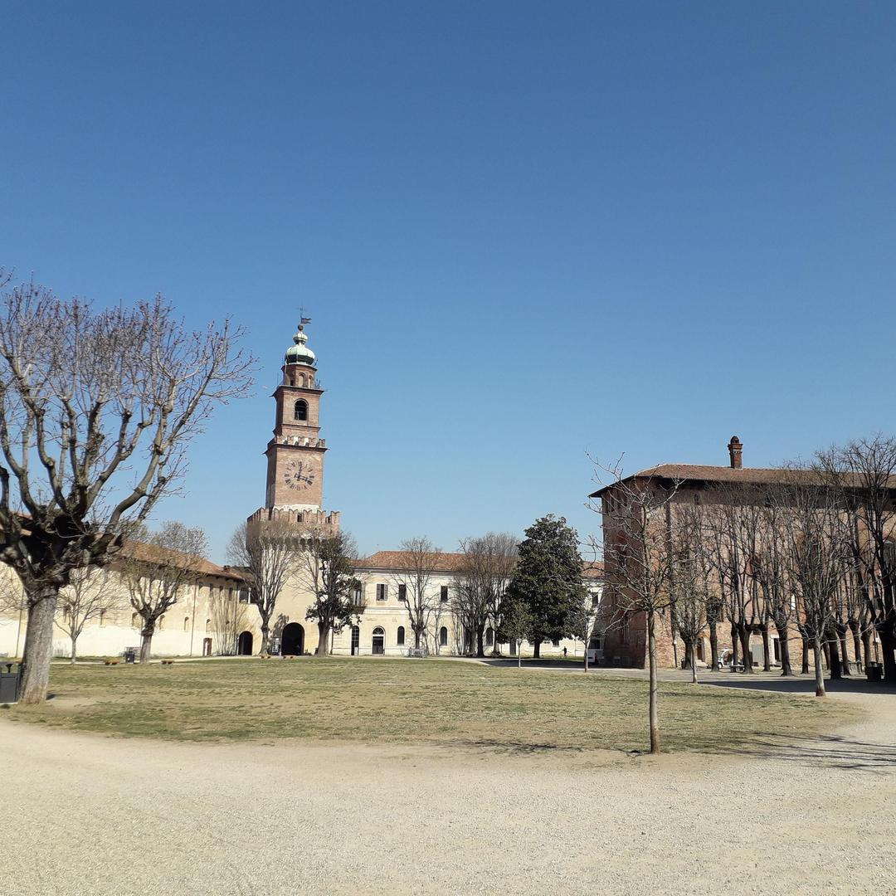<br><a href="mailto:info@ecologiaacustica.org;satorcollettivonoise@gmail.com?subject=PAESAGGIO SONORO --- [segnalazione] --- audio: Castello"><i><br>Facci sapere cosa ne pensi di questo audio!</a><audio id="audio_AL_CASTELLO" loop> <source src="dati/AL_CASTELLO/AL_CASTELLO-converted.mp3" type="audio/mpeg"> </audio></div>`)[0];
            popup_05bb5a8a8be4466199006b395ab2a5ae.setContent(html_3ac193c62872493696a2fed3d8021131);


        marker_d9a398e7c2384f979da1488087a95f0f.bindPopup(popup_05bb5a8a8be4466199006b395ab2a5ae)
marker_d9a398e7c2384f979da1488087a95f0f.on('click', function (e) {this.openPopup(); document.getElementById('audio_AL_CASTELLO').play();});
        ;


            var marker_7795da0e243441d2a7e62b289eac0aaf = L.marker(
                [45.31598777, 8.860193825],
                {}
            );


        var custom_icon_7b81c55cdc67426fa0d589e8df041dfc = L.icon({"iconSize": [30, 30], "iconUrl": "https://emojipedia-us.s3.dualstack.us-west-1.amazonaws.com/thumbs/160/microsoft/74/bird_1f426.png"});
        marker_7795da0e243441d2a7e62b289eac0aaf.setIcon(custom_icon_7b81c55cdc67426fa0d589e8df041dfc);


        var popup_3e36906c31694f36b86faa61aa633860 = L.popup({"maxWidth": "270"});


            var html_b3a6a475a883442b85ec1b9d4398a161 = $(`<div id="html_b3a6a475a883442b85ec1b9d4398a161" style="width: 100.0%; height: 100.0%;"><h1 style = "font-size: 30px;"><b>Cavallerizza</b></h1><br><a href="mailto:info@ecologiaacustica.org;satorcollettivonoise@gmail.com?subject=PAESAGGIO SONORO --- [segnalazione] --- audio: Cavallerizza"><i><br>Facci sapere cosa ne pensi di questo audio!</a><audio id="audio_AL_CAVALLERIZZA CON CONDIZIONATORE E UCCELLINI" loop> <source src="dati/AL_CAVALLERIZZA CON CONDIZIONATORE E UCCELLINI/cavallerizza senza bimbi ma con condizionatore iniziale e non-converted.mp3" type="audio/mpeg"> </audio></div>`)[0];
            popup_3e36906c31694f36b86faa61aa633860.setContent(html_b3a6a475a883442b85ec1b9d4398a161);


        marker_7795da0e243441d2a7e62b289eac0aaf.bindPopup(popup_3e36906c31694f36b86faa61aa633860)
marker_7795da0e243441d2a7e62b289eac0aaf.on('click', function (e) {this.openPopup(); document.getElementById('audio_AL_CAVALLERIZZA CON CONDIZIONATORE E UCCELLINI').play();});
        ;


            var marker_32a9d9c853c24439b848f3f119c9b949 = L.marker(
                [45.347941, 8.849416],
                {}
            );


        var custom_icon_982d3f06025d4b5aa9c6e35530fae753 = L.icon({"iconSize": [30, 30], "iconUrl": "https://emojipedia-us.s3.dualstack.us-west-1.amazonaws.com/thumbs/160/microsoft/74/cloud_2601.png"});
        marker_32a9d9c853c24439b848f3f119c9b949.setIcon(custom_icon_982d3f06025d4b5aa9c6e35530fae753);


        var popup_a2923fbcc4ec43f7a0b1262b935bc522 = L.popup({"maxWidth": "270"});


            var html_6916de036b0e4c73b3eec6b305f2c372 = $(`<div id="html_6916de036b0e4c73b3eec6b305f2c372" style="width: 100.0%; height: 100.0%;"><h1 style = "font-size: 30px;"><b>Ramo dei Prati</b></h1><br><a href="mailto:info@ecologiaacustica.org;satorcollettivonoise@gmail.com?subject=PAESAGGIO SONORO --- [segnalazione] --- audio: Ramo dei Prati"><i><br>Facci sapere cosa ne pensi di questo audio!</a><audio id="audio_AL_CHIESA BUCCELLA" loop> <source src="dati/AL_CHIESA BUCCELLA/RAMO DEI PRATI-converted.mp3" type="audio/mpeg"> </audio></div>`)[0];
            popup_a2923fbcc4ec43f7a0b1262b935bc522.setContent(html_6916de036b0e4c73b3eec6b305f2c372);


        marker_32a9d9c853c24439b848f3f119c9b949.bindPopup(popup_a2923fbcc4ec43f7a0b1262b935bc522)
marker_32a9d9c853c24439b848f3f119c9b949.on('click', function (e) {this.openPopup(); document.getElementById('audio_AL_CHIESA BUCCELLA').play();});
        ;


            var marker_9766574705d249d2832ab7782526a726 = L.marker(
                [45.324436, 8.835918],
                {}
            );


        var custom_icon_5b704d27c98144938e8af6764b8b1292 = L.icon({"iconSize": [30, 30], "iconUrl": "https://emojipedia-us.s3.dualstack.us-west-1.amazonaws.com/thumbs/160/microsoft/74/cloud_2601.png"});
        marker_9766574705d249d2832ab7782526a726.setIcon(custom_icon_5b704d27c98144938e8af6764b8b1292);


        var popup_5e8a928c04ba4e989e511fd4dac83046 = L.popup({"maxWidth": "270"});


            var html_ba62824c8b3e4c6d868dd3636325a6d5 = $(`<div id="html_ba62824c8b3e4c6d868dd3636325a6d5" style="width: 100.0%; height: 100.0%;"><h1 style = "font-size: 30px;"><b>Chiesa Battù</b></h1><br><a href="mailto:info@ecologiaacustica.org;satorcollettivonoise@gmail.com?subject=PAESAGGIO SONORO --- [segnalazione] --- audio: Chiesa Battù"><i><br>Facci sapere cosa ne pensi di questo audio!</a><audio id="audio_AL_CHIESA SANTA MARIA DEL PARTO BATTU" loop> <source src="dati/AL_CHIESA SANTA MARIA DEL PARTO BATTU/STRADA BARBAVARA-converted.mp3" type="audio/mpeg"> </audio></div>`)[0];
            popup_5e8a928c04ba4e989e511fd4dac83046.setContent(html_ba62824c8b3e4c6d868dd3636325a6d5);


        marker_9766574705d249d2832ab7782526a726.bindPopup(popup_5e8a928c04ba4e989e511fd4dac83046)
marker_9766574705d249d2832ab7782526a726.on('click', function (e) {this.openPopup(); document.getElementById('audio_AL_CHIESA SANTA MARIA DEL PARTO BATTU').play();});
        ;


            var marker_22e7d5f69949404da8dac1de8adac1c6 = L.marker(
                [45.314712, 8.850959],
                {}
            );


        var custom_icon_b7bd16d5e39b43ef9ece1e9ed9be5dbf = L.icon({"iconSize": [30, 30], "iconUrl": "https://emojipedia-us.s3.dualstack.us-west-1.amazonaws.com/thumbs/160/microsoft/74/automobile_1f697.png"});
        marker_22e7d5f69949404da8dac1de8adac1c6.setIcon(custom_icon_b7bd16d5e39b43ef9ece1e9ed9be5dbf);


        var popup_00dbc4c1bf8c43d7aaf373a0c11379b9 = L.popup({"maxWidth": "270"});


            var html_25b8d55c72e247a891a9d98252e87862 = $(`<div id="html_25b8d55c72e247a891a9d98252e87862" style="width: 100.0%; height: 100.0%;"><h1 style = "font-size: 30px;"><b>Traffico corso Torino</b></h1><br><a href="mailto:info@ecologiaacustica.org;satorcollettivonoise@gmail.com?subject=PAESAGGIO SONORO --- [segnalazione] --- audio: Traffico corso Torino"><i><br>Facci sapere cosa ne pensi di questo audio!</a><audio id="audio_AL_CORSO TORINO 9 H 18" loop> <source src="dati/AL_CORSO TORINO 9 H 18/corso torino 9 traffico-converted.mp3" type="audio/mpeg"> </audio></div>`)[0];
            popup_00dbc4c1bf8c43d7aaf373a0c11379b9.setContent(html_25b8d55c72e247a891a9d98252e87862);


        marker_22e7d5f69949404da8dac1de8adac1c6.bindPopup(popup_00dbc4c1bf8c43d7aaf373a0c11379b9)
marker_22e7d5f69949404da8dac1de8adac1c6.on('click', function (e) {this.openPopup(); document.getElementById('audio_AL_CORSO TORINO 9 H 18').play();});
        ;


            var marker_d9598e6606504f7192c99c739582b483 = L.marker(
                [45.31581126, 8.855427057],
                {}
            );


        var custom_icon_44b8f7cd4b77466f92636df4d39650ad = L.icon({"iconSize": [30, 30], "iconUrl": "https://emojipedia-us.s3.dualstack.us-west-1.amazonaws.com/thumbs/160/microsoft/74/water-wave_1f30a.png"});
        marker_d9598e6606504f7192c99c739582b483.setIcon(custom_icon_44b8f7cd4b77466f92636df4d39650ad);


        var popup_71aa3b274a8d402fa3baa25aebde8ea6 = L.popup({"maxWidth": "270"});


            var html_f21eb9374d8e448b8d98f725902c0fbe = $(`<div id="html_f21eb9374d8e448b8d98f725902c0fbe" style="width: 100.0%; height: 100.0%;"><h1 style = "font-size: 30px;"><b>Parco Roncalli</b></h1><br><a href="mailto:info@ecologiaacustica.org;satorcollettivonoise@gmail.com?subject=PAESAGGIO SONORO --- [segnalazione] --- audio: Parco Roncalli"><i><br>Facci sapere cosa ne pensi di questo audio!</a><audio id="audio_AL_CORTILE OFFICINE RONCALLI" loop> <source src="dati/AL_CORTILE OFFICINE RONCALLI/parco roncalli con colombi in amore-converted.mp3" type="audio/mpeg"> </audio></div>`)[0];
            popup_71aa3b274a8d402fa3baa25aebde8ea6.setContent(html_f21eb9374d8e448b8d98f725902c0fbe);


        marker_d9598e6606504f7192c99c739582b483.bindPopup(popup_71aa3b274a8d402fa3baa25aebde8ea6)
marker_d9598e6606504f7192c99c739582b483.on('click', function (e) {this.openPopup(); document.getElementById('audio_AL_CORTILE OFFICINE RONCALLI').play();});
        ;


            var marker_694493f432e84ca2bd9b4b8f38d9d68c = L.marker(
                [45.318346, 8.855921],
                {}
            );


        var custom_icon_abd100c6d5ec4fafaee5d34398d3a4d2 = L.icon({"iconSize": [30, 30], "iconUrl": "https://emojipedia-us.s3.dualstack.us-west-1.amazonaws.com/thumbs/160/microsoft/74/water-wave_1f30a.png"});
        marker_694493f432e84ca2bd9b4b8f38d9d68c.setIcon(custom_icon_abd100c6d5ec4fafaee5d34398d3a4d2);


        var popup_7b833f7a97564f85b4af5aa3a4092189 = L.popup({"maxWidth": "270"});


            var html_e2e3044b9eb14763a97010c92c5d3737 = $(`<div id="html_e2e3044b9eb14763a97010c92c5d3737" style="width: 100.0%; height: 100.0%;"><h1 style = "font-size: 30px;"><b>San Francesco</b></h1><br><a href="mailto:info@ecologiaacustica.org;satorcollettivonoise@gmail.com?subject=PAESAGGIO SONORO --- [segnalazione] --- audio: San Francesco"><i><br>Facci sapere cosa ne pensi di questo audio!</a><audio id="audio_AL_FONTANA SAN FRANCESCO" loop> <source src="dati/AL_FONTANA SAN FRANCESCO/SAN FRANCESCO-converted.mp3" type="audio/mpeg"> </audio></div>`)[0];
            popup_7b833f7a97564f85b4af5aa3a4092189.setContent(html_e2e3044b9eb14763a97010c92c5d3737);


        marker_694493f432e84ca2bd9b4b8f38d9d68c.bindPopup(popup_7b833f7a97564f85b4af5aa3a4092189)
marker_694493f432e84ca2bd9b4b8f38d9d68c.on('click', function (e) {this.openPopup(); document.getElementById('audio_AL_FONTANA SAN FRANCESCO').play();});
        ;


            var marker_f5c56e829725409e814577ebb2b42bdc = L.marker(
                [45.319, 8.853801],
                {}
            );


        var custom_icon_99a66de3dfc047b3ba03c50ab5fc2800 = L.icon({"iconSize": [30, 30], "iconUrl": "https://emojipedia-us.s3.dualstack.us-west-1.amazonaws.com/thumbs/160/microsoft/74/water-wave_1f30a.png"});
        marker_f5c56e829725409e814577ebb2b42bdc.setIcon(custom_icon_99a66de3dfc047b3ba03c50ab5fc2800);


        var popup_2853098dd45549ddb5ad0127b04d40ed = L.popup({"maxWidth": "270"});


            var html_057d0f6baf284e3e9957a12109a01435 = $(`<div id="html_057d0f6baf284e3e9957a12109a01435" style="width: 100.0%; height: 100.0%;"><h1 style = "font-size: 30px;"><b>San Bernardo</b></h1><br><a href="mailto:info@ecologiaacustica.org;satorcollettivonoise@gmail.com?subject=PAESAGGIO SONORO --- [segnalazione] --- audio: San Bernardo"><i><br>Facci sapere cosa ne pensi di questo audio!</a><audio id="audio_AL_FONTANELLA INCROCIO SAN BERNARDO" loop> <source src="dati/AL_FONTANELLA INCROCIO SAN BERNARDO/AL_FONTANELLA INCROCIO SAN BERNARDO.mp3" type="audio/mpeg"> </audio></div>`)[0];
            popup_2853098dd45549ddb5ad0127b04d40ed.setContent(html_057d0f6baf284e3e9957a12109a01435);


        marker_f5c56e829725409e814577ebb2b42bdc.bindPopup(popup_2853098dd45549ddb5ad0127b04d40ed)
marker_f5c56e829725409e814577ebb2b42bdc.on('click', function (e) {this.openPopup(); document.getElementById('audio_AL_FONTANELLA INCROCIO SAN BERNARDO').play();});
        ;


            var marker_e3d620762c614e6ca1615a09dc7cf4fc = L.marker(
                [45.320298, 8.849036],
                {}
            );


        var custom_icon_9c76c6f09f8c4a69b3dd125e9dbb6b65 = L.icon({"iconSize": [30, 30], "iconUrl": "https://emojipedia-us.s3.dualstack.us-west-1.amazonaws.com/thumbs/160/microsoft/74/water-wave_1f30a.png"});
        marker_e3d620762c614e6ca1615a09dc7cf4fc.setIcon(custom_icon_9c76c6f09f8c4a69b3dd125e9dbb6b65);


        var popup_7935a8a842bd4f7c98a1fa47ea7cf9ad = L.popup({"maxWidth": "270"});


            var html_f0f8e281fbbb4abf945ffad36e09aedb = $(`<div id="html_f0f8e281fbbb4abf945ffad36e09aedb" style="width: 100.0%; height: 100.0%;"><h1 style = "font-size: 30px;"><b>Parco in via d'Avalos</b></h1><br><a href="mailto:info@ecologiaacustica.org;satorcollettivonoise@gmail.com?subject=PAESAGGIO SONORO --- [segnalazione] --- audio: Parco in via d'Avalos"><i><br>Facci sapere cosa ne pensi di questo audio!</a><audio id="audio_AL_FONTANELLA PARCO VIA DAVALOS" loop> <source src="dati/AL_FONTANELLA PARCO VIA DAVALOS/AL_FONTANELLA PARCO VIA DAVALOS.mp3" type="audio/mpeg"> </audio></div>`)[0];
            popup_7935a8a842bd4f7c98a1fa47ea7cf9ad.setContent(html_f0f8e281fbbb4abf945ffad36e09aedb);


        marker_e3d620762c614e6ca1615a09dc7cf4fc.bindPopup(popup_7935a8a842bd4f7c98a1fa47ea7cf9ad)
marker_e3d620762c614e6ca1615a09dc7cf4fc.on('click', function (e) {this.openPopup(); document.getElementById('audio_AL_FONTANELLA PARCO VIA DAVALOS').play();});
        ;


            var marker_fc98cf84525646ebb3f4059b9b9583eb = L.marker(
                [45.319209, 8.911778],
                {}
            );


        var custom_icon_32c83df623384966b6c550ca3522ca2c = L.icon({"iconSize": [30, 30], "iconUrl": "https://emojipedia-us.s3.dualstack.us-west-1.amazonaws.com/thumbs/160/microsoft/74/bird_1f426.png"});
        marker_fc98cf84525646ebb3f4059b9b9583eb.setIcon(custom_icon_32c83df623384966b6c550ca3522ca2c);


        var popup_e5c292aa08954f4a92505c148501d339 = L.popup({"maxWidth": "270"});


            var html_214c78f165a34b0d89d6847fdced3423 = $(`<div id="html_214c78f165a34b0d89d6847fdced3423" style="width: 100.0%; height: 100.0%;"><h1 style = "font-size: 30px;"><b>Gallinelle</b></h1><br><a href="mailto:info@ecologiaacustica.org;satorcollettivonoise@gmail.com?subject=PAESAGGIO SONORO --- [segnalazione] --- audio: Gallinelle"><i><br>Facci sapere cosa ne pensi di questo audio!</a><audio id="audio_AL_GALLINELLE AYALA" loop> <source src="dati/AL_GALLINELLE AYALA/gallinelle ayala-converted.mp3" type="audio/mpeg"> </audio></div>`)[0];
            popup_e5c292aa08954f4a92505c148501d339.setContent(html_214c78f165a34b0d89d6847fdced3423);


        marker_fc98cf84525646ebb3f4059b9b9583eb.bindPopup(popup_e5c292aa08954f4a92505c148501d339)
marker_fc98cf84525646ebb3f4059b9b9583eb.on('click', function (e) {this.openPopup(); document.getElementById('audio_AL_GALLINELLE AYALA').play();});
        ;


            var marker_568c531c337c4d20b8a063bcfaee5594 = L.marker(
                [45.31926654, 8.84883821],
                {}
            );


        var custom_icon_0175bb27814e4b809a4cf04aa1a9deac = L.icon({"iconSize": [30, 30], "iconUrl": "https://emojipedia-us.s3.dualstack.us-west-1.amazonaws.com/thumbs/160/microsoft/74/high-voltage-sign_26a1.png"});
        marker_568c531c337c4d20b8a063bcfaee5594.setIcon(custom_icon_0175bb27814e4b809a4cf04aa1a9deac);


        var popup_e4db6503a0c541ebbd3eefdbd6aed051 = L.popup({"maxWidth": "270"});


            var html_c59e39a618ca475eb8845b3f079fc3ff = $(`<div id="html_c59e39a618ca475eb8845b3f079fc3ff" style="width: 100.0%; height: 100.0%;"><h1 style = "font-size: 30px;"><b>Generatore in via Trivulzio</b></h1><br><a href="mailto:info@ecologiaacustica.org;satorcollettivonoise@gmail.com?subject=PAESAGGIO SONORO --- [segnalazione] --- audio: Generatore in via Trivulzio"><i><br>Facci sapere cosa ne pensi di questo audio!</a><audio id="audio_AL_GENERATORE VIA TRIVULZIO" loop> <source src="dati/AL_GENERATORE VIA TRIVULZIO/GENERATORE-converted.mp3" type="audio/mpeg"> </audio></div>`)[0];
            popup_e4db6503a0c541ebbd3eefdbd6aed051.setContent(html_c59e39a618ca475eb8845b3f079fc3ff);


        marker_568c531c337c4d20b8a063bcfaee5594.bindPopup(popup_e4db6503a0c541ebbd3eefdbd6aed051)
marker_568c531c337c4d20b8a063bcfaee5594.on('click', function (e) {this.openPopup(); document.getElementById('audio_AL_GENERATORE VIA TRIVULZIO').play();});
        ;


            var marker_70fc99f99aab4f9fac2633751313af42 = L.marker(
                [45.3163211, 8.8556406],
                {}
            );


        var custom_icon_6bb21cbd4b844b4d99352b2cb6afd4f9 = L.icon({"iconSize": [30, 30], "iconUrl": "https://emojipedia-us.s3.dualstack.us-west-1.amazonaws.com/thumbs/160/microsoft/74/gear_2699.png"});
        marker_70fc99f99aab4f9fac2633751313af42.setIcon(custom_icon_6bb21cbd4b844b4d99352b2cb6afd4f9);


        var popup_d27b8344a7134211abcf9fa144afe6d1 = L.popup({"maxWidth": "270"});


            var html_83ea9a27804349feb5719d60251906e6 = $(`<div id="html_83ea9a27804349feb5719d60251906e6" style="width: 100.0%; height: 100.0%;"><h1 style = "font-size: 30px;"><b>Tatuaggio</b></h1><br><a href="mailto:info@ecologiaacustica.org;satorcollettivonoise@gmail.com?subject=PAESAGGIO SONORO --- [segnalazione] --- audio: Tatuaggio"><i><br>Facci sapere cosa ne pensi di questo audio!</a><audio id="audio_AL_GUNTATOO VIA DEL POPOLO" loop> <source src="dati/AL_GUNTATOO VIA DEL POPOLO/macchinetta tatoo-converted.mp3" type="audio/mpeg"> </audio></div>`)[0];
            popup_d27b8344a7134211abcf9fa144afe6d1.setContent(html_83ea9a27804349feb5719d60251906e6);


        marker_70fc99f99aab4f9fac2633751313af42.bindPopup(popup_d27b8344a7134211abcf9fa144afe6d1)
marker_70fc99f99aab4f9fac2633751313af42.on('click', function (e) {this.openPopup(); document.getElementById('audio_AL_GUNTATOO VIA DEL POPOLO').play();});
        ;


            var marker_808b1894e68e4a09a8989933367637ef = L.marker(
                [45.325309, 8.882199526],
                {}
            );


        var custom_icon_1d68c46b4ec242028b64f90eac5faeb4 = L.icon({"iconSize": [30, 30], "iconUrl": "https://emojipedia-us.s3.dualstack.us-west-1.amazonaws.com/thumbs/160/microsoft/209/people-holding-hands_1f9d1-200d-1f91d-200d-1f9d1.png"});
        marker_808b1894e68e4a09a8989933367637ef.setIcon(custom_icon_1d68c46b4ec242028b64f90eac5faeb4);


        var popup_472cfc25ed15475caf84384e5d068257 = L.popup({"maxWidth": "270"});


            var html_44a0620e61e04009b01bdfb9eac060cf = $(`<div id="html_44a0620e61e04009b01bdfb9eac060cf" style="width: 100.0%; height: 100.0%;"><h1 style = "font-size: 30px;"><b>Luna Park</b></h1><br><a href="mailto:info@ecologiaacustica.org;satorcollettivonoise@gmail.com?subject=PAESAGGIO SONORO --- [segnalazione] --- audio: Luna Park"><i><br>Facci sapere cosa ne pensi di questo audio!</a><audio id="audio_AL_LUNA PARK" loop> <source src="dati/AL_LUNA PARK/luna park-converted.mp3" type="audio/mpeg"> </audio></div>`)[0];
            popup_472cfc25ed15475caf84384e5d068257.setContent(html_44a0620e61e04009b01bdfb9eac060cf);


        marker_808b1894e68e4a09a8989933367637ef.bindPopup(popup_472cfc25ed15475caf84384e5d068257)
marker_808b1894e68e4a09a8989933367637ef.on('click', function (e) {this.openPopup(); document.getElementById('audio_AL_LUNA PARK').play();});
        ;


            var marker_9a984e96665140dab23bdda71fc82914 = L.marker(
                [45.288236, 8.904653],
                {}
            );


        var custom_icon_0133b22cbafa4fcebda692cacf606099 = L.icon({"iconSize": [30, 30], "iconUrl": "https://emojipedia-us.s3.dualstack.us-west-1.amazonaws.com/thumbs/160/microsoft/74/water-wave_1f30a.png"});
        marker_9a984e96665140dab23bdda71fc82914.setIcon(custom_icon_0133b22cbafa4fcebda692cacf606099);


        var popup_73df1525a945400da38f3035f6d80e11 = L.popup({"maxWidth": "270"});


            var html_daa2d401981744b38e94fed776df465c = $(`<div id="html_daa2d401981744b38e94fed776df465c" style="width: 100.0%; height: 100.0%;"><h1 style = "font-size: 30px;"><b>Marcita</b></h1><br><a href="mailto:info@ecologiaacustica.org;satorcollettivonoise@gmail.com?subject=PAESAGGIO SONORO --- [segnalazione] --- audio: Marcita"><i><br>Facci sapere cosa ne pensi di questo audio!</a><audio id="audio_AL_MARCITE SFORZESCA" loop> <source src="dati/AL_MARCITE SFORZESCA/AL_SFORZESCA MARCITE.mp3" type="audio/mpeg"> </audio></div>`)[0];
            popup_73df1525a945400da38f3035f6d80e11.setContent(html_daa2d401981744b38e94fed776df465c);


        marker_9a984e96665140dab23bdda71fc82914.bindPopup(popup_73df1525a945400da38f3035f6d80e11)
marker_9a984e96665140dab23bdda71fc82914.on('click', function (e) {this.openPopup(); document.getElementById('audio_AL_MARCITE SFORZESCA').play();});
        ;


            var marker_daece5a94f0d47a5aa30542f4a4406ff = L.marker(
                [45.315997, 8.850214],
                {}
            );


        var custom_icon_5e2661365356487c9eeb08a2ea949a0d = L.icon({"iconSize": [30, 30], "iconUrl": "https://emojipedia-us.s3.dualstack.us-west-1.amazonaws.com/thumbs/160/microsoft/74/cloud_2601.png"});
        marker_daece5a94f0d47a5aa30542f4a4406ff.setIcon(custom_icon_5e2661365356487c9eeb08a2ea949a0d);


        var popup_db25d661996e407daa769736fdfe1281 = L.popup({"maxWidth": "270"});


            var html_59f8ba408e454c548e3a12c13e3a73cb = $(`<div id="html_59f8ba408e454c548e3a12c13e3a73cb" style="width: 100.0%; height: 100.0%;"><h1 style = "font-size: 30px;"><b>Mercato</b></h1>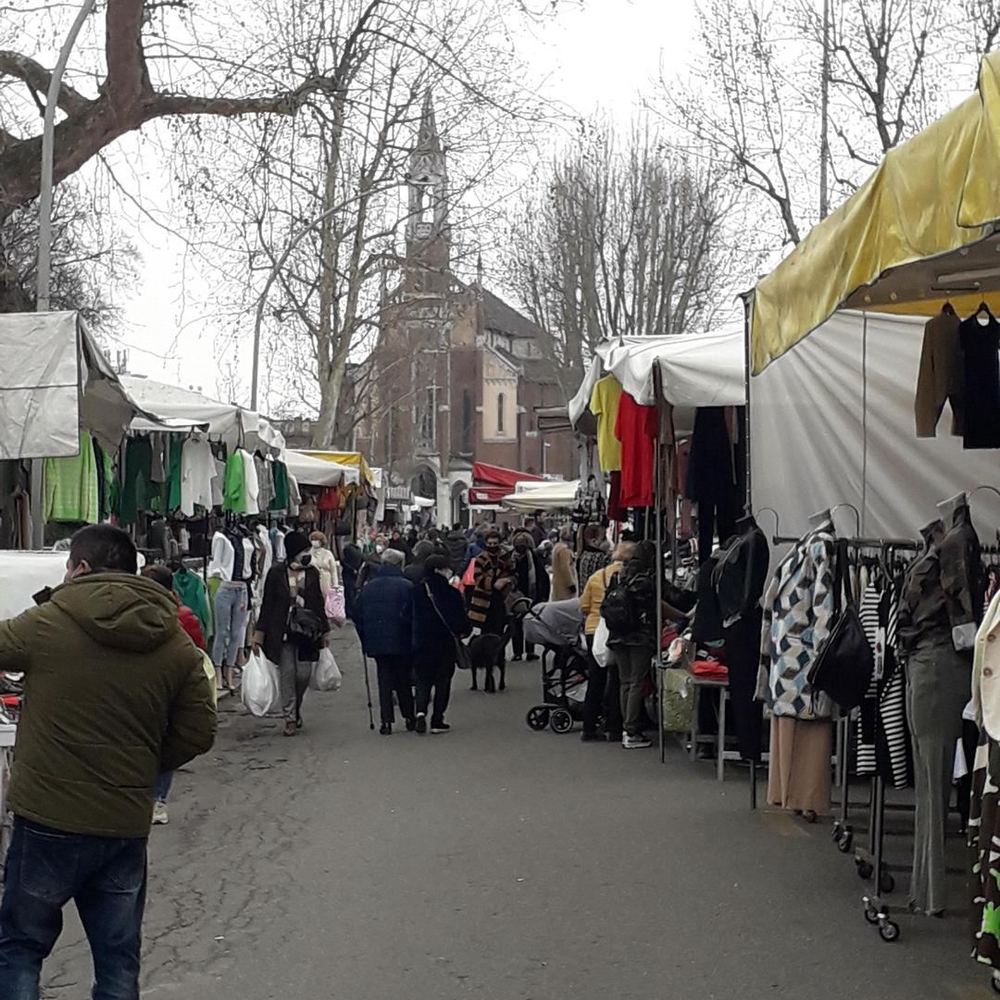<br><a href="mailto:info@ecologiaacustica.org;satorcollettivonoise@gmail.com?subject=PAESAGGIO SONORO --- [segnalazione] --- audio: Mercato"><i><br>Facci sapere cosa ne pensi di questo audio!</a><audio id="audio_AL_MERCATO" loop> <source src="dati/AL_MERCATO/mercato-converted.mp3" type="audio/mpeg"> </audio></div>`)[0];
            popup_db25d661996e407daa769736fdfe1281.setContent(html_59f8ba408e454c548e3a12c13e3a73cb);


        marker_daece5a94f0d47a5aa30542f4a4406ff.bindPopup(popup_db25d661996e407daa769736fdfe1281)
marker_daece5a94f0d47a5aa30542f4a4406ff.on('click', function (e) {this.openPopup(); document.getElementById('audio_AL_MERCATO').play();});
        ;


            var marker_9bc3dc4f2ebb44a7a80f8822ba18e35f = L.marker(
                [45.31951172, 8.829756978],
                {}
            );


        var custom_icon_aae5b255893446fea990d57727b7639d = L.icon({"iconSize": [30, 30], "iconUrl": "https://emojipedia-us.s3.dualstack.us-west-1.amazonaws.com/thumbs/160/microsoft/74/motor-scooter_1f6f5.png"});
        marker_9bc3dc4f2ebb44a7a80f8822ba18e35f.setIcon(custom_icon_aae5b255893446fea990d57727b7639d);


        var popup_015e33d8216f4bdb95ba7712f8b5ead8 = L.popup({"maxWidth": "270"});


            var html_f9990491217f43efa8fa42f5aa952c2c = $(`<div id="html_f9990491217f43efa8fa42f5aa952c2c" style="width: 100.0%; height: 100.0%;"><h1 style = "font-size: 30px;"><b>Motorini ai piccolini</b></h1><br><a href="mailto:info@ecologiaacustica.org;satorcollettivonoise@gmail.com?subject=PAESAGGIO SONORO --- [segnalazione] --- audio: Motorini ai piccolini"><i><br>Facci sapere cosa ne pensi di questo audio!</a><audio id="audio_AL_MOTORINI A PICCOLINI" loop> <source src="dati/AL_MOTORINI A PICCOLINI/125 PICCOLINI-converted.mp3" type="audio/mpeg"> </audio></div>`)[0];
            popup_015e33d8216f4bdb95ba7712f8b5ead8.setContent(html_f9990491217f43efa8fa42f5aa952c2c);


        marker_9bc3dc4f2ebb44a7a80f8822ba18e35f.bindPopup(popup_015e33d8216f4bdb95ba7712f8b5ead8)
marker_9bc3dc4f2ebb44a7a80f8822ba18e35f.on('click', function (e) {this.openPopup(); document.getElementById('audio_AL_MOTORINI A PICCOLINI').play();});
        ;


            var marker_2c6479ac6a9d442aa7a0ad50bf576484 = L.marker(
                [45.318856, 8.850043],
                {}
            );


        var custom_icon_2061315e7425483a82d214c500467080 = L.icon({"iconSize": [30, 30], "iconUrl": "https://emojipedia-us.s3.dualstack.us-west-1.amazonaws.com/thumbs/160/microsoft/74/motor-scooter_1f6f5.png"});
        marker_2c6479ac6a9d442aa7a0ad50bf576484.setIcon(custom_icon_2061315e7425483a82d214c500467080);


        var popup_0b849fe82578469f94da0911e58d2770 = L.popup({"maxWidth": "270"});


            var html_fe103ec5fd9b42b7864c5db073a2822e = $(`<div id="html_fe103ec5fd9b42b7864c5db073a2822e" style="width: 100.0%; height: 100.0%;"><h1 style = "font-size: 30px;"><b>Motoretta in via d'Avalos</b></h1><br><a href="mailto:info@ecologiaacustica.org;satorcollettivonoise@gmail.com?subject=PAESAGGIO SONORO --- [segnalazione] --- audio: Motoretta in via d'Avalos"><i><br>Facci sapere cosa ne pensi di questo audio!</a><audio id="audio_AL_MOTORINO VIA DAVALOS" loop> <source src="dati/AL_MOTORINO VIA DAVALOS/motoretta via d'avalos-converted.mp3" type="audio/mpeg"> </audio></div>`)[0];
            popup_0b849fe82578469f94da0911e58d2770.setContent(html_fe103ec5fd9b42b7864c5db073a2822e);


        marker_2c6479ac6a9d442aa7a0ad50bf576484.bindPopup(popup_0b849fe82578469f94da0911e58d2770)
marker_2c6479ac6a9d442aa7a0ad50bf576484.on('click', function (e) {this.openPopup(); document.getElementById('audio_AL_MOTORINO VIA DAVALOS').play();});
        ;


            var marker_a323b6daf3624b88bdd7dfc413e3fd31 = L.marker(
                [45.315875, 8.85167],
                {}
            );


        var custom_icon_6c90c37d42eb406fa79ed87caa4df6c5 = L.icon({"iconSize": [30, 30], "iconUrl": "https://emojipedia-us.s3.dualstack.us-west-1.amazonaws.com/thumbs/160/microsoft/74/gear_2699.png"});
        marker_a323b6daf3624b88bdd7dfc413e3fd31.setIcon(custom_icon_6c90c37d42eb406fa79ed87caa4df6c5);


        var popup_932834b29dc9496eb4d270305a350828 = L.popup({"maxWidth": "270"});


            var html_b6059d084a9e4aeeb1d8cff8af1208d9 = $(`<div id="html_b6059d084a9e4aeeb1d8cff8af1208d9" style="width: 100.0%; height: 100.0%;"><h1 style = "font-size: 30px;"><b>Motosega</b></h1><br><a href="mailto:info@ecologiaacustica.org;satorcollettivonoise@gmail.com?subject=PAESAGGIO SONORO --- [segnalazione] --- audio: Motosega"><i><br>Facci sapere cosa ne pensi di questo audio!</a><audio id="audio_AL_MOTOSEGA PARCO PARRI" loop> <source src="dati/AL_MOTOSEGA PARCO PARRI/MOTOSEGA-converted.mp3" type="audio/mpeg"> </audio></div>`)[0];
            popup_932834b29dc9496eb4d270305a350828.setContent(html_b6059d084a9e4aeeb1d8cff8af1208d9);


        marker_a323b6daf3624b88bdd7dfc413e3fd31.bindPopup(popup_932834b29dc9496eb4d270305a350828)
marker_a323b6daf3624b88bdd7dfc413e3fd31.on('click', function (e) {this.openPopup(); document.getElementById('audio_AL_MOTOSEGA PARCO PARRI').play();});
        ;


            var marker_348c67253344459aa24650e7df335183 = L.marker(
                [45.314191, 8.854374],
                {}
            );


        var custom_icon_ced3594d4c9a4571b9e2f2fa6251bf24 = L.icon({"iconSize": [30, 30], "iconUrl": "https://emojipedia-us.s3.dualstack.us-west-1.amazonaws.com/thumbs/160/microsoft/74/water-wave_1f30a.png"});
        marker_348c67253344459aa24650e7df335183.setIcon(custom_icon_ced3594d4c9a4571b9e2f2fa6251bf24);


        var popup_5bd1fc78ee44465093d5d8637a42b32e = L.popup({"maxWidth": "270"});


            var html_ad2c2c0647554bc7a343402d49b22c7f = $(`<div id="html_ad2c2c0647554bc7a343402d49b22c7f" style="width: 100.0%; height: 100.0%;"><h1 style = "font-size: 30px;"><b>Mulino in via Mulini</b></h1><br><a href="mailto:info@ecologiaacustica.org;satorcollettivonoise@gmail.com?subject=PAESAGGIO SONORO --- [segnalazione] --- audio: Mulino in via Mulini"><i><br>Facci sapere cosa ne pensi di questo audio!</a><audio id="audio_AL_MULINO VIA MULINI" loop> <source src="dati/AL_MULINO VIA MULINI/AL_MULINO VIA MULINI.mp3" type="audio/mpeg"> </audio></div>`)[0];
            popup_5bd1fc78ee44465093d5d8637a42b32e.setContent(html_ad2c2c0647554bc7a343402d49b22c7f);


        marker_348c67253344459aa24650e7df335183.bindPopup(popup_5bd1fc78ee44465093d5d8637a42b32e)
marker_348c67253344459aa24650e7df335183.on('click', function (e) {this.openPopup(); document.getElementById('audio_AL_MULINO VIA MULINI').play();});
        ;


            var marker_50d6e8db8f994b69bdaff1d31bf77af9 = L.marker(
                [45.319865, 8.910479],
                {}
            );


        var custom_icon_6a0a9f21688142639a5ffbb0ea17572c = L.icon({"iconSize": [30, 30], "iconUrl": "https://emojipedia-us.s3.dualstack.us-west-1.amazonaws.com/thumbs/160/microsoft/74/duck_1f986.png"});
        marker_50d6e8db8f994b69bdaff1d31bf77af9.setIcon(custom_icon_6a0a9f21688142639a5ffbb0ea17572c);


        var popup_95ef8995e192487a8d2bc2bda4219563 = L.popup({"maxWidth": "270"});


            var html_8cd48623ee3a45ba8e95dfc9d1057632 = $(`<div id="html_8cd48623ee3a45ba8e95dfc9d1057632" style="width: 100.0%; height: 100.0%;"><h1 style = "font-size: 30px;"><b>Papere all'Ayala</b></h1><br><a href="mailto:info@ecologiaacustica.org;satorcollettivonoise@gmail.com?subject=PAESAGGIO SONORO --- [segnalazione] --- audio: Papere all'Ayala"><i><br>Facci sapere cosa ne pensi di questo audio!</a><audio id="audio_AL_PAPERE AYALA" loop> <source src="dati/AL_PAPERE AYALA/papere ayala-converted.mp3" type="audio/mpeg"> </audio></div>`)[0];
            popup_95ef8995e192487a8d2bc2bda4219563.setContent(html_8cd48623ee3a45ba8e95dfc9d1057632);


        marker_50d6e8db8f994b69bdaff1d31bf77af9.bindPopup(popup_95ef8995e192487a8d2bc2bda4219563)
marker_50d6e8db8f994b69bdaff1d31bf77af9.on('click', function (e) {this.openPopup(); document.getElementById('audio_AL_PAPERE AYALA').play();});
        ;


            var marker_441692dad9774ae79cec671a010db6ce = L.marker(
                [45.327984, 8.849464],
                {}
            );


        var custom_icon_7e78e96afdab4fc0b8ca8058b085f220 = L.icon({"iconSize": [30, 30], "iconUrl": "https://emojipedia-us.s3.dualstack.us-west-1.amazonaws.com/thumbs/160/microsoft/74/evergreen-tree_1f332.png"});
        marker_441692dad9774ae79cec671a010db6ce.setIcon(custom_icon_7e78e96afdab4fc0b8ca8058b085f220);


        var popup_677ed535dba5406cb2377ad54e5cd316 = L.popup({"maxWidth": "270"});


            var html_509556f616b341eaa632c396aa9ed748 = $(`<div id="html_509556f616b341eaa632c396aa9ed748" style="width: 100.0%; height: 100.0%;"><h1 style = "font-size: 30px;"><b>Parco calistenico</b></h1><br><a href="mailto:info@ecologiaacustica.org;satorcollettivonoise@gmail.com?subject=PAESAGGIO SONORO --- [segnalazione] --- audio: Parco calistenico"><i><br>Facci sapere cosa ne pensi di questo audio!</a><audio id="audio_AL_PARCHETTO CALISTHENICS" loop> <source src="dati/AL_PARCHETTO CALISTHENICS/CALISTENICO-converted.mp3" type="audio/mpeg"> </audio></div>`)[0];
            popup_677ed535dba5406cb2377ad54e5cd316.setContent(html_509556f616b341eaa632c396aa9ed748);


        marker_441692dad9774ae79cec671a010db6ce.bindPopup(popup_677ed535dba5406cb2377ad54e5cd316)
marker_441692dad9774ae79cec671a010db6ce.on('click', function (e) {this.openPopup(); document.getElementById('audio_AL_PARCHETTO CALISTHENICS').play();});
        ;


            var marker_41931b579f434710af22e799a7fb76df = L.marker(
                [45.319685, 8.855579],
                {}
            );


        var custom_icon_c0aa990b2e254c7892885e40b9ce9068 = L.icon({"iconSize": [30, 30], "iconUrl": "https://emojipedia-us.s3.dualstack.us-west-1.amazonaws.com/thumbs/160/microsoft/74/evergreen-tree_1f332.png"});
        marker_41931b579f434710af22e799a7fb76df.setIcon(custom_icon_c0aa990b2e254c7892885e40b9ce9068);


        var popup_497c669808494a31bca85f3a3991e78a = L.popup({"maxWidth": "270"});


            var html_37c2764f19104a12b3646804470a41e4 = $(`<div id="html_37c2764f19104a12b3646804470a41e4" style="width: 100.0%; height: 100.0%;"><h1 style = "font-size: 30px;"><b>Parco alla biblioteca</b></h1><br><a href="mailto:info@ecologiaacustica.org;satorcollettivonoise@gmail.com?subject=PAESAGGIO SONORO --- [segnalazione] --- audio: Parco alla biblioteca"><i><br>Facci sapere cosa ne pensi di questo audio!</a><audio id="audio_AL_PARCO BIBLIOTECA" loop> <source src="dati/AL_PARCO BIBLIOTECA/AL_PARCO BIBLIOTECA.mp3" type="audio/mpeg"> </audio></div>`)[0];
            popup_497c669808494a31bca85f3a3991e78a.setContent(html_37c2764f19104a12b3646804470a41e4);


        marker_41931b579f434710af22e799a7fb76df.bindPopup(popup_497c669808494a31bca85f3a3991e78a)
marker_41931b579f434710af22e799a7fb76df.on('click', function (e) {this.openPopup(); document.getElementById('audio_AL_PARCO BIBLIOTECA').play();});
        ;


            var marker_07bdc15479444e4b8d77beb9e5b973c7 = L.marker(
                [45.316255, 8.851266],
                {}
            );


        var custom_icon_6f5342310120406eb3dc5a4cf3c414b4 = L.icon({"iconSize": [30, 30], "iconUrl": "https://emojipedia-us.s3.dualstack.us-west-1.amazonaws.com/thumbs/160/microsoft/74/evergreen-tree_1f332.png"});
        marker_07bdc15479444e4b8d77beb9e5b973c7.setIcon(custom_icon_6f5342310120406eb3dc5a4cf3c414b4);


        var popup_6e0f59ee0269433397ba0cdef19c50c1 = L.popup({"maxWidth": "270"});


            var html_340680d764514356a4520c562a63a876 = $(`<div id="html_340680d764514356a4520c562a63a876" style="width: 100.0%; height: 100.0%;"><h1 style = "font-size: 30px;"><b>Parco Parri</b></h1><br><a href="mailto:info@ecologiaacustica.org;satorcollettivonoise@gmail.com?subject=PAESAGGIO SONORO --- [segnalazione] --- audio: Parco Parri"><i><br>Facci sapere cosa ne pensi di questo audio!</a><audio id="audio_AL_PARCO PARRI" loop> <source src="dati/AL_PARCO PARRI/AL_PARCO PARRI.mp3" type="audio/mpeg"> </audio></div>`)[0];
            popup_6e0f59ee0269433397ba0cdef19c50c1.setContent(html_340680d764514356a4520c562a63a876);


        marker_07bdc15479444e4b8d77beb9e5b973c7.bindPopup(popup_6e0f59ee0269433397ba0cdef19c50c1)
marker_07bdc15479444e4b8d77beb9e5b973c7.on('click', function (e) {this.openPopup(); document.getElementById('audio_AL_PARCO PARRI').play();});
        ;


            var marker_9df0b756fd5b4074a705fdb1a8246dc5 = L.marker(
                [45.3189, 8.86105],
                {}
            );


        var custom_icon_30acd2052ebd4e9482d0f438849986da = L.icon({"iconSize": [30, 30], "iconUrl": "https://emojipedia-us.s3.dualstack.us-west-1.amazonaws.com/thumbs/160/microsoft/74/evergreen-tree_1f332.png"});
        marker_9df0b756fd5b4074a705fdb1a8246dc5.setIcon(custom_icon_30acd2052ebd4e9482d0f438849986da);


        var popup_78951fba723943f79f3a6c8e7fdf4fd8 = L.popup({"maxWidth": "270"});


            var html_dd90d1dd9452445eb8922be0338f4ec0 = $(`<div id="html_dd90d1dd9452445eb8922be0338f4ec0" style="width: 100.0%; height: 100.0%;"><h1 style = "font-size: 30px;"><b>Parco Regina Margherita</b></h1><br><a href="mailto:info@ecologiaacustica.org;satorcollettivonoise@gmail.com?subject=PAESAGGIO SONORO --- [segnalazione] --- audio: Parco Regina Margherita"><i><br>Facci sapere cosa ne pensi di questo audio!</a><audio id="audio_AL_PARCO REGINA MARGHERITA CON BIMBI" loop> <source src="dati/AL_PARCO REGINA MARGHERITA CON BIMBI/AL_PARCO REGINA MARGHERITA CON BIMBI.mp3" type="audio/mpeg"> </audio></div>`)[0];
            popup_78951fba723943f79f3a6c8e7fdf4fd8.setContent(html_dd90d1dd9452445eb8922be0338f4ec0);


        marker_9df0b756fd5b4074a705fdb1a8246dc5.bindPopup(popup_78951fba723943f79f3a6c8e7fdf4fd8)
marker_9df0b756fd5b4074a705fdb1a8246dc5.on('click', function (e) {this.openPopup(); document.getElementById('audio_AL_PARCO REGINA MARGHERITA CON BIMBI').play();});
        ;


            var marker_8498083a40284d68b014e0f1d1fb5aab = L.marker(
                [45.320439, 8.849083],
                {}
            );


        var custom_icon_a2c7eb3393094c2b8e29d1ebd85798ff = L.icon({"iconSize": [30, 30], "iconUrl": "https://emojipedia-us.s3.dualstack.us-west-1.amazonaws.com/thumbs/160/microsoft/74/evergreen-tree_1f332.png"});
        marker_8498083a40284d68b014e0f1d1fb5aab.setIcon(custom_icon_a2c7eb3393094c2b8e29d1ebd85798ff);


        var popup_09cd6c31968d42a1a4372c13b773ea19 = L.popup({"maxWidth": "270"});


            var html_169d696848f945cdad9f98236e298a88 = $(`<div id="html_169d696848f945cdad9f98236e298a88" style="width: 100.0%; height: 100.0%;"><h1 style = "font-size: 30px;"><b>Parchetto di via d'Avalos</b></h1><br><a href="mailto:info@ecologiaacustica.org;satorcollettivonoise@gmail.com?subject=PAESAGGIO SONORO --- [segnalazione] --- audio: Parchetto di via d'Avalos"><i><br>Facci sapere cosa ne pensi di questo audio!</a><audio id="audio_AL_PARCO VIA DAVALOS" loop> <source src="dati/AL_PARCO VIA DAVALOS/parchetto via d'avalos-converted.mp3" type="audio/mpeg"> </audio></div>`)[0];
            popup_09cd6c31968d42a1a4372c13b773ea19.setContent(html_169d696848f945cdad9f98236e298a88);


        marker_8498083a40284d68b014e0f1d1fb5aab.bindPopup(popup_09cd6c31968d42a1a4372c13b773ea19)
marker_8498083a40284d68b014e0f1d1fb5aab.on('click', function (e) {this.openPopup(); document.getElementById('audio_AL_PARCO VIA DAVALOS').play();});
        ;


            var marker_defedd57921f4d4f9f5be236d33f80e8 = L.marker(
                [45.313775, 8.856216],
                {}
            );


        var custom_icon_753078c6bdf64214a23a79ead952c6c8 = L.icon({"iconSize": [30, 30], "iconUrl": "https://emojipedia-us.s3.dualstack.us-west-1.amazonaws.com/thumbs/160/microsoft/74/evergreen-tree_1f332.png"});
        marker_defedd57921f4d4f9f5be236d33f80e8.setIcon(custom_icon_753078c6bdf64214a23a79ead952c6c8);


        var popup_0f2fa3eefbba425981b8baf28f704bb0 = L.popup({"maxWidth": "270"});


            var html_7c3b578b15594ffcb653ef526a6d48b9 = $(`<div id="html_7c3b578b15594ffcb653ef526a6d48b9" style="width: 100.0%; height: 100.0%;"><h1 style = "font-size: 30px;"><b>Via della Costa</b></h1><br><a href="mailto:info@ecologiaacustica.org;satorcollettivonoise@gmail.com?subject=PAESAGGIO SONORO --- [segnalazione] --- audio: Via della Costa"><i><br>Facci sapere cosa ne pensi di questo audio!</a><audio id="audio_AL_PARCO VIA DELLA COSTA" loop> <source src="dati/AL_PARCO VIA DELLA COSTA/VIA DELLA COSTA-converted.mp3" type="audio/mpeg"> </audio></div>`)[0];
            popup_0f2fa3eefbba425981b8baf28f704bb0.setContent(html_7c3b578b15594ffcb653ef526a6d48b9);


        marker_defedd57921f4d4f9f5be236d33f80e8.bindPopup(popup_0f2fa3eefbba425981b8baf28f704bb0)
marker_defedd57921f4d4f9f5be236d33f80e8.on('click', function (e) {this.openPopup(); document.getElementById('audio_AL_PARCO VIA DELLA COSTA').play();});
        ;


            var marker_d8b7338d8fe44e468b378cda61b56c6c = L.marker(
                [45.3342072, 8.8276286],
                {}
            );


        var custom_icon_e13b45a78b3645b4bad8bb770390a075 = L.icon({"iconSize": [30, 30], "iconUrl": "https://emojipedia-us.s3.dualstack.us-west-1.amazonaws.com/thumbs/160/microsoft/74/cloud_2601.png"});
        marker_d8b7338d8fe44e468b378cda61b56c6c.setIcon(custom_icon_e13b45a78b3645b4bad8bb770390a075);


        var popup_86a8cead3d4e49e881b1b69f6f867abf = L.popup({"maxWidth": "270"});


            var html_5505c8b13a984697b175261ddf00c0af = $(`<div id="html_5505c8b13a984697b175261ddf00c0af" style="width: 100.0%; height: 100.0%;"><h1 style = "font-size: 30px;"><b>3 Navigli</b></h1><br><a href="mailto:info@ecologiaacustica.org;satorcollettivonoise@gmail.com?subject=PAESAGGIO SONORO --- [segnalazione] --- audio: 3 Navigli"><i><br>Facci sapere cosa ne pensi di questo audio!</a><audio id="audio_AL_PASSI SU PONTE 45,3342072 8,8276286" loop> <source src="dati/AL_PASSI SU PONTE 45,3342072 8,8276286/PASSI SU PONTE DI LEGNO 3 NAVIGLI-converted.mp3" type="audio/mpeg"> </audio></div>`)[0];
            popup_86a8cead3d4e49e881b1b69f6f867abf.setContent(html_5505c8b13a984697b175261ddf00c0af);


        marker_d8b7338d8fe44e468b378cda61b56c6c.bindPopup(popup_86a8cead3d4e49e881b1b69f6f867abf)
marker_d8b7338d8fe44e468b378cda61b56c6c.on('click', function (e) {this.openPopup(); document.getElementById('audio_AL_PASSI SU PONTE 45,3342072 8,8276286').play();});
        ;


            var marker_123d0a80ea5246199d4a5cf8fd2e0d19 = L.marker(
                [45.31723339, 8.85803014],
                {}
            );


        var custom_icon_35ad418d68ca4421a8456dcf2b8c1d9d = L.icon({"iconSize": [30, 30], "iconUrl": "https://emojipedia-us.s3.dualstack.us-west-1.amazonaws.com/thumbs/160/microsoft/74/cloud_2601.png"});
        marker_123d0a80ea5246199d4a5cf8fd2e0d19.setIcon(custom_icon_35ad418d68ca4421a8456dcf2b8c1d9d);


        var popup_ede27c29d2454bbeae017adbd7f9ed52 = L.popup({"maxWidth": "270"});


            var html_5f11879d46884d2c8e9cea3f0f1ba9a5 = $(`<div id="html_5f11879d46884d2c8e9cea3f0f1ba9a5" style="width: 100.0%; height: 100.0%;"><h1 style = "font-size: 30px;"><b>Piazza Ducale</b></h1>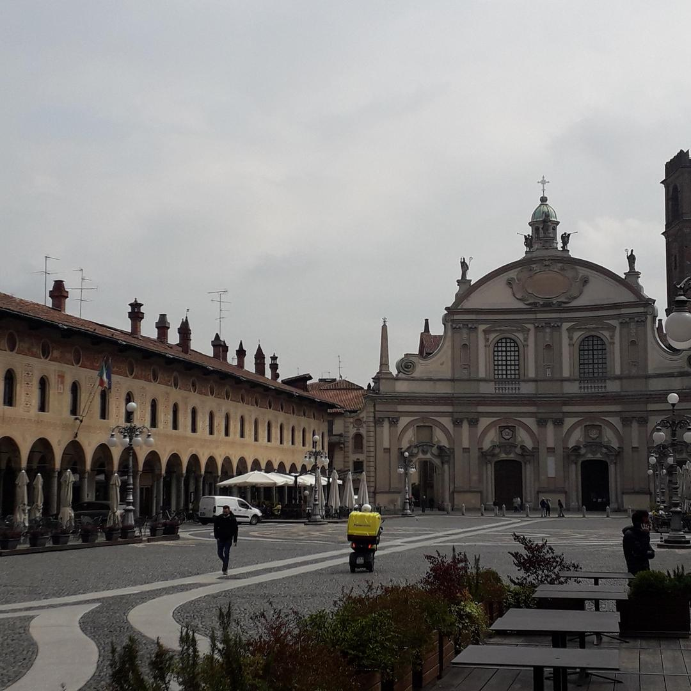<br><a href="mailto:info@ecologiaacustica.org;satorcollettivonoise@gmail.com?subject=PAESAGGIO SONORO --- [segnalazione] --- audio: Piazza Ducale"><i><br>Facci sapere cosa ne pensi di questo audio!</a><audio id="audio_AL_PIAZZA_DUCALE" loop> <source src="dati/AL_PIAZZA_DUCALE/AL_PIAZZA_DUCALE.mp3" type="audio/mpeg"> </audio></div>`)[0];
            popup_ede27c29d2454bbeae017adbd7f9ed52.setContent(html_5f11879d46884d2c8e9cea3f0f1ba9a5);


        marker_123d0a80ea5246199d4a5cf8fd2e0d19.bindPopup(popup_ede27c29d2454bbeae017adbd7f9ed52)
marker_123d0a80ea5246199d4a5cf8fd2e0d19.on('click', function (e) {this.openPopup(); document.getElementById('audio_AL_PIAZZA_DUCALE').play();});
        ;


            var marker_341d0397d4f841318779b538ec882c99 = L.marker(
                [45.315474, 8.854798],
                {}
            );


        var custom_icon_014d9dabfba5483bb756f13581f694f1 = L.icon({"iconSize": [30, 30], "iconUrl": "https://emojipedia-us.s3.dualstack.us-west-1.amazonaws.com/thumbs/160/microsoft/74/gear_2699.png"});
        marker_341d0397d4f841318779b538ec882c99.setIcon(custom_icon_014d9dabfba5483bb756f13581f694f1);


        var popup_b87f6cf89e6b4d59b005a7f899d2088b = L.popup({"maxWidth": "270"});


            var html_e1e4e3176c774faba6600ea2e238e016 = $(`<div id="html_e1e4e3176c774faba6600ea2e238e016" style="width: 100.0%; height: 100.0%;"><h1 style = "font-size: 30px;"><b>Ex tribunale</b></h1><br><a href="mailto:info@ecologiaacustica.org;satorcollettivonoise@gmail.com?subject=PAESAGGIO SONORO --- [segnalazione] --- audio: Ex tribunale"><i><br>Facci sapere cosa ne pensi di questo audio!</a><audio id="audio_AL_PIAZZETTA EX TRIBUNALE CON LAVORI IN CORSO" loop> <source src="dati/AL_PIAZZETTA EX TRIBUNALE CON LAVORI IN CORSO/piazzetta ex tribunale-converted.mp3" type="audio/mpeg"> </audio></div>`)[0];
            popup_b87f6cf89e6b4d59b005a7f899d2088b.setContent(html_e1e4e3176c774faba6600ea2e238e016);


        marker_341d0397d4f841318779b538ec882c99.bindPopup(popup_b87f6cf89e6b4d59b005a7f899d2088b)
marker_341d0397d4f841318779b538ec882c99.on('click', function (e) {this.openPopup(); document.getElementById('audio_AL_PIAZZETTA EX TRIBUNALE CON LAVORI IN CORSO').play();});
        ;


            var marker_75786c6c33d94891af910ed0f0b31807 = L.marker(
                [45.318301, 8.858539],
                {}
            );


        var custom_icon_87f946229c6245e892482d079100983e = L.icon({"iconSize": [30, 30], "iconUrl": "https://emojipedia-us.s3.dualstack.us-west-1.amazonaws.com/thumbs/160/microsoft/74/cloud_2601.png"});
        marker_75786c6c33d94891af910ed0f0b31807.setIcon(custom_icon_87f946229c6245e892482d079100983e);


        var popup_108328d534b9425dafbf00eb6f3d2316 = L.popup({"maxWidth": "270"});


            var html_7ac43109b5bb4e40a3ad05a613a01fe0 = $(`<div id="html_7ac43109b5bb4e40a3ad05a613a01fe0" style="width: 100.0%; height: 100.0%;"><h1 style = "font-size: 30px;"><b>Piazza San Dionigi</b></h1><br><a href="mailto:info@ecologiaacustica.org;satorcollettivonoise@gmail.com?subject=PAESAGGIO SONORO --- [segnalazione] --- audio: Piazza San Dionigi"><i><br>Facci sapere cosa ne pensi di questo audio!</a><audio id="audio_AL_PIAZZETTA SAN DIONIGI H 16" loop> <source src="dati/AL_PIAZZETTA SAN DIONIGI H 16/piazza san dionigi-converted.mp3" type="audio/mpeg"> </audio></div>`)[0];
            popup_108328d534b9425dafbf00eb6f3d2316.setContent(html_7ac43109b5bb4e40a3ad05a613a01fe0);


        marker_75786c6c33d94891af910ed0f0b31807.bindPopup(popup_108328d534b9425dafbf00eb6f3d2316)
marker_75786c6c33d94891af910ed0f0b31807.on('click', function (e) {this.openPopup(); document.getElementById('audio_AL_PIAZZETTA SAN DIONIGI H 16').play();});
        ;


            var marker_11b8406274754e168bf876f2d1907bcf = L.marker(
                [45.315835, 8.85622],
                {}
            );


        var custom_icon_628aecc144ea444bb093661f2593e305 = L.icon({"iconSize": [30, 30], "iconUrl": "https://emojipedia-us.s3.dualstack.us-west-1.amazonaws.com/thumbs/160/microsoft/74/cloud_2601.png"});
        marker_11b8406274754e168bf876f2d1907bcf.setIcon(custom_icon_628aecc144ea444bb093661f2593e305);


        var popup_966a227443c2409b884f83e0297f3775 = L.popup({"maxWidth": "270"});


            var html_16701d3569664155be402c9eb6d89db9 = $(`<div id="html_16701d3569664155be402c9eb6d89db9" style="width: 100.0%; height: 100.0%;"><h1 style = "font-size: 30px;"><b>Portone</b></h1><br><a href="mailto:info@ecologiaacustica.org;satorcollettivonoise@gmail.com?subject=PAESAGGIO SONORO --- [segnalazione] --- audio: Portone"><i><br>Facci sapere cosa ne pensi di questo audio!</a><audio id="audio_AL_PORTONE CASTELLO VIA DEL POPOLO" loop> <source src="dati/AL_PORTONE CASTELLO VIA DEL POPOLO/PORTONE CASTELLO VIA DEL POPOLO-converted.mp3" type="audio/mpeg"> </audio></div>`)[0];
            popup_966a227443c2409b884f83e0297f3775.setContent(html_16701d3569664155be402c9eb6d89db9);


        marker_11b8406274754e168bf876f2d1907bcf.bindPopup(popup_966a227443c2409b884f83e0297f3775)
marker_11b8406274754e168bf876f2d1907bcf.on('click', function (e) {this.openPopup(); document.getElementById('audio_AL_PORTONE CASTELLO VIA DEL POPOLO').play();});
        ;


            var marker_80f25608abb7470288b47f25c868e715 = L.marker(
                [45.31571, 8.85073],
                {}
            );


        var custom_icon_17fe86a58fd744e4807127bea429dcbe = L.icon({"iconSize": [30, 30], "iconUrl": "https://emojipedia-us.s3.dualstack.us-west-1.amazonaws.com/thumbs/160/microsoft/74/police-cars-revolving-light_1f6a8.png"});
        marker_80f25608abb7470288b47f25c868e715.setIcon(custom_icon_17fe86a58fd744e4807127bea429dcbe);


        var popup_11e87a2c03dd414a8914c58367304bd4 = L.popup({"maxWidth": "270"});


            var html_1adc2ccbd40c42bc9d04cc34c7250c4c = $(`<div id="html_1adc2ccbd40c42bc9d04cc34c7250c4c" style="width: 100.0%; height: 100.0%;"><h1 style = "font-size: 30px;"><b>Pulisci strada</b></h1><br><a href="mailto:info@ecologiaacustica.org;satorcollettivonoise@gmail.com?subject=PAESAGGIO SONORO --- [segnalazione] --- audio: Pulisci strada"><i><br>Facci sapere cosa ne pensi di questo audio!</a><audio id="audio_AL_PULISCI STRADA MERCATO" loop> <source src="dati/AL_PULISCI STRADA MERCATO/pulisci strada piazza mercato-converted.mp3" type="audio/mpeg"> </audio></div>`)[0];
            popup_11e87a2c03dd414a8914c58367304bd4.setContent(html_1adc2ccbd40c42bc9d04cc34c7250c4c);


        marker_80f25608abb7470288b47f25c868e715.bindPopup(popup_11e87a2c03dd414a8914c58367304bd4)
marker_80f25608abb7470288b47f25c868e715.on('click', function (e) {this.openPopup(); document.getElementById('audio_AL_PULISCI STRADA MERCATO').play();});
        ;


            var marker_515e93ce492945648d81172743ebacf2 = L.marker(
                [45.343385, 8.862481],
                {}
            );


        var custom_icon_7ca22c92f0904eb681f761f459bb5dbd = L.icon({"iconSize": [30, 30], "iconUrl": "https://emojipedia-us.s3.dualstack.us-west-1.amazonaws.com/thumbs/160/microsoft/74/cloud_2601.png"});
        marker_515e93ce492945648d81172743ebacf2.setIcon(custom_icon_7ca22c92f0904eb681f761f459bb5dbd);


        var popup_8eedc1676a4341d398ec5528d3622da4 = L.popup({"maxWidth": "270"});


            var html_849c0199270d48e8a599240837a58215 = $(`<div id="html_849c0199270d48e8a599240837a58215" style="width: 100.0%; height: 100.0%;"><h1 style = "font-size: 30px;"><b>Ramo delle streghe</b></h1><br><a href="mailto:info@ecologiaacustica.org;satorcollettivonoise@gmail.com?subject=PAESAGGIO SONORO --- [segnalazione] --- audio: Ramo delle streghe"><i><br>Facci sapere cosa ne pensi di questo audio!</a><audio id="audio_AL_RAMO DELLE STREGHE" loop> <source src="dati/AL_RAMO DELLE STREGHE/AL_RAMO-converted.mp3" type="audio/mpeg"> </audio></div>`)[0];
            popup_8eedc1676a4341d398ec5528d3622da4.setContent(html_849c0199270d48e8a599240837a58215);


        marker_515e93ce492945648d81172743ebacf2.bindPopup(popup_8eedc1676a4341d398ec5528d3622da4)
marker_515e93ce492945648d81172743ebacf2.on('click', function (e) {this.openPopup(); document.getElementById('audio_AL_RAMO DELLE STREGHE').play();});
        ;


            var marker_f578960d4edd4fffb26faa5fa52f53fc = L.marker(
                [45.2991274, 8.9470802],
                {}
            );


        var custom_icon_db50b552c62a4877a18d4cd67285c740 = L.icon({"iconSize": [30, 30], "iconUrl": "https://emojipedia-us.s3.dualstack.us-west-1.amazonaws.com/thumbs/160/microsoft/74/cloud_2601.png"});
        marker_f578960d4edd4fffb26faa5fa52f53fc.setIcon(custom_icon_db50b552c62a4877a18d4cd67285c740);


        var popup_f89562e8c4f74a35a8f62cfacf8bda47 = L.popup({"maxWidth": "270"});


            var html_a710528d720c44d8b583be172c72f6c8 = $(`<div id="html_a710528d720c44d8b583be172c72f6c8" style="width: 100.0%; height: 100.0%;"><h1 style = "font-size: 30px;"><b>Sabbioni</b></h1><br><a href="mailto:info@ecologiaacustica.org;satorcollettivonoise@gmail.com?subject=PAESAGGIO SONORO --- [segnalazione] --- audio: Sabbioni"><i><br>Facci sapere cosa ne pensi di questo audio!</a><audio id="audio_AL_SABBIONI 45.2991274, 8.9470802" loop> <source src="dati/AL_SABBIONI 45.2991274, 8.9470802/sabbioni-converted.mp3" type="audio/mpeg"> </audio></div>`)[0];
            popup_f89562e8c4f74a35a8f62cfacf8bda47.setContent(html_a710528d720c44d8b583be172c72f6c8);


        marker_f578960d4edd4fffb26faa5fa52f53fc.bindPopup(popup_f89562e8c4f74a35a8f62cfacf8bda47)
marker_f578960d4edd4fffb26faa5fa52f53fc.on('click', function (e) {this.openPopup(); document.getElementById('audio_AL_SABBIONI 45.2991274, 8.9470802').play();});
        ;


            var marker_2efaa233fb764c2db19911c1334c80f4 = L.marker(
                [45.315358, 8.851655],
                {}
            );


        var custom_icon_2cc253afcfa645638daea477cbaade63 = L.icon({"iconSize": [30, 30], "iconUrl": "https://emojipedia-us.s3.dualstack.us-west-1.amazonaws.com/thumbs/160/microsoft/74/gear_2699.png"});
        marker_2efaa233fb764c2db19911c1334c80f4.setIcon(custom_icon_2cc253afcfa645638daea477cbaade63);


        var popup_4ea81310924d44d69ee0c55ca711ee5a = L.popup({"maxWidth": "270"});


            var html_5c1eded6e8154ae8bdc1c32af0c63d6a = $(`<div id="html_5c1eded6e8154ae8bdc1c32af0c63d6a" style="width: 100.0%; height: 100.0%;"><h1 style = "font-size: 30px;"><b>Soffiafoglie</b></h1><br><a href="mailto:info@ecologiaacustica.org;satorcollettivonoise@gmail.com?subject=PAESAGGIO SONORO --- [segnalazione] --- audio: Soffiafoglie"><i><br>Facci sapere cosa ne pensi di questo audio!</a><audio id="audio_AL_SOFFIAFOGLIE PARCO PARRI" loop> <source src="dati/AL_SOFFIAFOGLIE PARCO PARRI/AL_SOFFIAFOGLIE-converted.mp3" type="audio/mpeg"> </audio></div>`)[0];
            popup_4ea81310924d44d69ee0c55ca711ee5a.setContent(html_5c1eded6e8154ae8bdc1c32af0c63d6a);


        marker_2efaa233fb764c2db19911c1334c80f4.bindPopup(popup_4ea81310924d44d69ee0c55ca711ee5a)
marker_2efaa233fb764c2db19911c1334c80f4.on('click', function (e) {this.openPopup(); document.getElementById('audio_AL_SOFFIAFOGLIE PARCO PARRI').play();});
        ;


            var marker_b258a6b177e545c896f003f7866f6f3d = L.marker(
                [45.292741, 8.926659],
                {}
            );


        var custom_icon_145000b36a3b45028b20f9893f02cd00 = L.icon({"iconSize": [30, 30], "iconUrl": "https://emojipedia-us.s3.dualstack.us-west-1.amazonaws.com/thumbs/160/microsoft/209/people-holding-hands_1f9d1-200d-1f91d-200d-1f9d1.png"});
        marker_b258a6b177e545c896f003f7866f6f3d.setIcon(custom_icon_145000b36a3b45028b20f9893f02cd00);


        var popup_ac566c6baccb4abcb832fa59f5af8c5d = L.popup({"maxWidth": "270"});


            var html_3517b928028b40d683c7f715fcc4287e = $(`<div id="html_3517b928028b40d683c7f715fcc4287e" style="width: 100.0%; height: 100.0%;"><h1 style = "font-size: 30px;"><b>Spari nei Ronchi</b></h1><br><a href="mailto:info@ecologiaacustica.org;satorcollettivonoise@gmail.com?subject=PAESAGGIO SONORO --- [segnalazione] --- audio: Spari nei Ronchi"><i><br>Facci sapere cosa ne pensi di questo audio!</a><audio id="audio_AL_SPARI NEL BOSCO RONCHI" loop> <source src="dati/AL_SPARI NEL BOSCO RONCHI/spari nel bosco dei ronchi-converted.mp3" type="audio/mpeg"> </audio></div>`)[0];
            popup_ac566c6baccb4abcb832fa59f5af8c5d.setContent(html_3517b928028b40d683c7f715fcc4287e);


        marker_b258a6b177e545c896f003f7866f6f3d.bindPopup(popup_ac566c6baccb4abcb832fa59f5af8c5d)
marker_b258a6b177e545c896f003f7866f6f3d.on('click', function (e) {this.openPopup(); document.getElementById('audio_AL_SPARI NEL BOSCO RONCHI').play();});
        ;


            var marker_8bd4ac00070644a9b3affea0107d69e6 = L.marker(
                [45.32535058, 8.835110804],
                {}
            );


        var custom_icon_b5a8aa5c0991482a88644e24da984a8f = L.icon({"iconSize": [30, 30], "iconUrl": "https://emojipedia-us.s3.dualstack.us-west-1.amazonaws.com/thumbs/160/microsoft/74/cloud_2601.png"});
        marker_8bd4ac00070644a9b3affea0107d69e6.setIcon(custom_icon_b5a8aa5c0991482a88644e24da984a8f);


        var popup_cf954c9e4f03453cb82dc73a7e141a49 = L.popup({"maxWidth": "270"});


            var html_203b45633f864d9c9b8515872609f9ae = $(`<div id="html_203b45633f864d9c9b8515872609f9ae" style="width: 100.0%; height: 100.0%;"><h1 style = "font-size: 30px;"><b>Strada Barbavara</b></h1><br><a href="mailto:info@ecologiaacustica.org;satorcollettivonoise@gmail.com?subject=PAESAGGIO SONORO --- [segnalazione] --- audio: Strada Barbavara"><i><br>Facci sapere cosa ne pensi di questo audio!</a><audio id="audio_AL_STRADA BARBAVARA" loop> <source src="dati/AL_STRADA BARBAVARA/BATTù-converted.mp3" type="audio/mpeg"> </audio></div>`)[0];
            popup_cf954c9e4f03453cb82dc73a7e141a49.setContent(html_203b45633f864d9c9b8515872609f9ae);


        marker_8bd4ac00070644a9b3affea0107d69e6.bindPopup(popup_cf954c9e4f03453cb82dc73a7e141a49)
marker_8bd4ac00070644a9b3affea0107d69e6.on('click', function (e) {this.openPopup(); document.getElementById('audio_AL_STRADA BARBAVARA').play();});
        ;


            var marker_978ac10f869b4ca5a36ea4bb84c0e69c = L.marker(
                [45.315874, 8.858551],
                {}
            );


        var custom_icon_074a507a3acf44f58703cb476eed3e2a = L.icon({"iconSize": [30, 30], "iconUrl": "https://emojipedia-us.s3.dualstack.us-west-1.amazonaws.com/thumbs/160/microsoft/74/cloud_2601.png"});
        marker_978ac10f869b4ca5a36ea4bb84c0e69c.setIcon(custom_icon_074a507a3acf44f58703cb476eed3e2a);


        var popup_cd1b335f559c46e0a2f9d526e17de009 = L.popup({"maxWidth": "270"});


            var html_6f1444503d96492fb73f46deceb4a9ee = $(`<div id="html_6f1444503d96492fb73f46deceb4a9ee" style="width: 100.0%; height: 100.0%;"><h1 style = "font-size: 30px;"><b>Strada coperta</b></h1><br><a href="mailto:info@ecologiaacustica.org;satorcollettivonoise@gmail.com?subject=PAESAGGIO SONORO --- [segnalazione] --- audio: Strada coperta"><i><br>Facci sapere cosa ne pensi di questo audio!</a><audio id="audio_AL_STRADA COPERTA" loop> <source src="dati/AL_STRADA COPERTA/strada coperta sopra portone-converted.mp3" type="audio/mpeg"> </audio></div>`)[0];
            popup_cd1b335f559c46e0a2f9d526e17de009.setContent(html_6f1444503d96492fb73f46deceb4a9ee);


        marker_978ac10f869b4ca5a36ea4bb84c0e69c.bindPopup(popup_cd1b335f559c46e0a2f9d526e17de009)
marker_978ac10f869b4ca5a36ea4bb84c0e69c.on('click', function (e) {this.openPopup(); document.getElementById('audio_AL_STRADA COPERTA').play();});
        ;


            var marker_f40f5b8ed68d4734adceec3347de9ce9 = L.marker(
                [45.315986, 8.858249],
                {}
            );


        var custom_icon_bfc6e33ac4ef4c6d8ded4c6f2e1a85a6 = L.icon({"iconSize": [30, 30], "iconUrl": "https://emojipedia-us.s3.dualstack.us-west-1.amazonaws.com/thumbs/160/microsoft/74/cloud_2601.png"});
        marker_f40f5b8ed68d4734adceec3347de9ce9.setIcon(custom_icon_bfc6e33ac4ef4c6d8ded4c6f2e1a85a6);


        var popup_a02eb6212dd3441d8f63a4302e904991 = L.popup({"maxWidth": "270"});


            var html_b12d09837add41f386d316c2cd61d043 = $(`<div id="html_b12d09837add41f386d316c2cd61d043" style="width: 100.0%; height: 100.0%;"><h1 style = "font-size: 30px;"><b>Strada sotterranea</b></h1><br><a href="mailto:info@ecologiaacustica.org;satorcollettivonoise@gmail.com?subject=PAESAGGIO SONORO --- [segnalazione] --- audio: Strada sotterranea"><i><br>Facci sapere cosa ne pensi di questo audio!</a><audio id="audio_AL_STRADA SOTTERRANEA" loop> <source src="dati/AL_STRADA SOTTERRANEA/STRADA SOTTERRANEA-converted.mp3" type="audio/mpeg"> </audio></div>`)[0];
            popup_a02eb6212dd3441d8f63a4302e904991.setContent(html_b12d09837add41f386d316c2cd61d043);


        marker_f40f5b8ed68d4734adceec3347de9ce9.bindPopup(popup_a02eb6212dd3441d8f63a4302e904991)
marker_f40f5b8ed68d4734adceec3347de9ce9.on('click', function (e) {this.openPopup(); document.getElementById('audio_AL_STRADA SOTTERRANEA').play();});
        ;


            var marker_abee3b7630a946e4970f7bbeba6fbbac = L.marker(
                [45.313771, 8.804277],
                {}
            );


        var custom_icon_1a109ac98d044f798e7c78bc7c9d577a = L.icon({"iconSize": [30, 30], "iconUrl": "https://emojipedia-us.s3.dualstack.us-west-1.amazonaws.com/thumbs/160/microsoft/74/cloud_2601.png"});
        marker_abee3b7630a946e4970f7bbeba6fbbac.setIcon(custom_icon_1a109ac98d044f798e7c78bc7c9d577a);


        var popup_3fd277806d074ebeaeac149fabe22294 = L.popup({"maxWidth": "270"});


            var html_5d44614b4c274c4d826bb6058ac01998 = $(`<div id="html_5d44614b4c274c4d826bb6058ac01998" style="width: 100.0%; height: 100.0%;"><h1 style = "font-size: 30px;"><b>Strada Vignazza</b></h1><br><a href="mailto:info@ecologiaacustica.org;satorcollettivonoise@gmail.com?subject=PAESAGGIO SONORO --- [segnalazione] --- audio: Strada Vignazza"><i><br>Facci sapere cosa ne pensi di questo audio!</a><audio id="audio_AL_STRADA VIGNAZZA" loop> <source src="dati/AL_STRADA VIGNAZZA/strada vignazza piccolini su terdoppio-converted.mp3" type="audio/mpeg"> </audio></div>`)[0];
            popup_3fd277806d074ebeaeac149fabe22294.setContent(html_5d44614b4c274c4d826bb6058ac01998);


        marker_abee3b7630a946e4970f7bbeba6fbbac.bindPopup(popup_3fd277806d074ebeaeac149fabe22294)
marker_abee3b7630a946e4970f7bbeba6fbbac.on('click', function (e) {this.openPopup(); document.getElementById('audio_AL_STRADA VIGNAZZA').play();});
        ;


            var marker_85a22cf4a6064dfe84234bc9e3b78af6 = L.marker(
                [45.318815, 8.80616],
                {}
            );


        var custom_icon_7cd1bc7b0db8485cb21126afd1f875ac = L.icon({"iconSize": [30, 30], "iconUrl": "https://emojipedia-us.s3.dualstack.us-west-1.amazonaws.com/thumbs/160/microsoft/74/water-wave_1f30a.png"});
        marker_85a22cf4a6064dfe84234bc9e3b78af6.setIcon(custom_icon_7cd1bc7b0db8485cb21126afd1f875ac);


        var popup_a49b0e9210394daa90a32e11117945e3 = L.popup({"maxWidth": "270"});


            var html_aac669aacea44c0a930bb5bc3e98f1f1 = $(`<div id="html_aac669aacea44c0a930bb5bc3e98f1f1" style="width: 100.0%; height: 100.0%;"><h1 style = "font-size: 30px;"><b>Terdoppio</b></h1>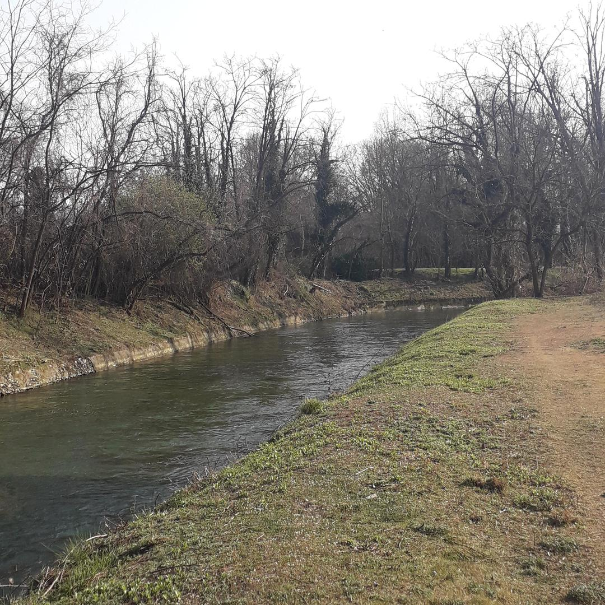<br><a href="mailto:info@ecologiaacustica.org;satorcollettivonoise@gmail.com?subject=PAESAGGIO SONORO --- [segnalazione] --- audio: Terdoppio"><i><br>Facci sapere cosa ne pensi di questo audio!</a><audio id="audio_AL_TERDOPPIO" loop> <source src="dati/AL_TERDOPPIO/AL_TERDOPPIO.mp3" type="audio/mpeg"> </audio></div>`)[0];
            popup_a49b0e9210394daa90a32e11117945e3.setContent(html_aac669aacea44c0a930bb5bc3e98f1f1);


        marker_85a22cf4a6064dfe84234bc9e3b78af6.bindPopup(popup_a49b0e9210394daa90a32e11117945e3)
marker_85a22cf4a6064dfe84234bc9e3b78af6.on('click', function (e) {this.openPopup(); document.getElementById('audio_AL_TERDOPPIO').play();});
        ;


            var marker_2d1785125cd347eabf0072b2310d3c9e = L.marker(
                [45.316539, 8.853459],
                {}
            );


        var custom_icon_9cf382764b494aacba8cad6148aecdae = L.icon({"iconSize": [30, 30], "iconUrl": "https://emojipedia-us.s3.dualstack.us-west-1.amazonaws.com/thumbs/160/microsoft/209/people-holding-hands_1f9d1-200d-1f91d-200d-1f9d1.png"});
        marker_2d1785125cd347eabf0072b2310d3c9e.setIcon(custom_icon_9cf382764b494aacba8cad6148aecdae);


        var popup_5cad34bbb64c4cb4b38efa508013fc2a = L.popup({"maxWidth": "270"});


            var html_b20292262e524c41a6bf7f74fcaa2f71 = $(`<div id="html_b20292262e524c41a6bf7f74fcaa2f71" style="width: 100.0%; height: 100.0%;"><h1 style = "font-size: 30px;"><b>Scuola Vidari</b></h1><br><a href="mailto:info@ecologiaacustica.org;satorcollettivonoise@gmail.com?subject=PAESAGGIO SONORO --- [segnalazione] --- audio: Scuola Vidari"><i><br>Facci sapere cosa ne pensi di questo audio!</a><audio id="audio_AL_USCITA SCUOLA VIDARI" loop> <source src="dati/AL_USCITA SCUOLA VIDARI/uscita scuola vidari-converted.mp3" type="audio/mpeg"> </audio></div>`)[0];
            popup_5cad34bbb64c4cb4b38efa508013fc2a.setContent(html_b20292262e524c41a6bf7f74fcaa2f71);


        marker_2d1785125cd347eabf0072b2310d3c9e.bindPopup(popup_5cad34bbb64c4cb4b38efa508013fc2a)
marker_2d1785125cd347eabf0072b2310d3c9e.on('click', function (e) {this.openPopup(); document.getElementById('audio_AL_USCITA SCUOLA VIDARI').play();});
        ;


            var marker_249c465501ea444bbd3e817882756bbd = L.marker(
                [45.310196, 8.812298],
                {}
            );


        var custom_icon_552f71c670034f5d9256960fd381260f = L.icon({"iconSize": [30, 30], "iconUrl": "https://emojipedia-us.s3.dualstack.us-west-1.amazonaws.com/thumbs/160/microsoft/74/cloud_2601.png"});
        marker_249c465501ea444bbd3e817882756bbd.setIcon(custom_icon_552f71c670034f5d9256960fd381260f);


        var popup_6033ced111ea400aa92184fd8a8bc5d7 = L.popup({"maxWidth": "270"});


            var html_316019c0651540819a1e9fc7c504784c = $(`<div id="html_316019c0651540819a1e9fc7c504784c" style="width: 100.0%; height: 100.0%;"><h1 style = "font-size: 30px;"><b>Via Castellana</b></h1><br><a href="mailto:info@ecologiaacustica.org;satorcollettivonoise@gmail.com?subject=PAESAGGIO SONORO --- [segnalazione] --- audio: Via Castellana"><i><br>Facci sapere cosa ne pensi di questo audio!</a><audio id="audio_AL_VIA CASTELLANA" loop> <source src="dati/AL_VIA CASTELLANA/VIA CASTELLANA-converted.mp3" type="audio/mpeg"> </audio></div>`)[0];
            popup_6033ced111ea400aa92184fd8a8bc5d7.setContent(html_316019c0651540819a1e9fc7c504784c);


        marker_249c465501ea444bbd3e817882756bbd.bindPopup(popup_6033ced111ea400aa92184fd8a8bc5d7)
marker_249c465501ea444bbd3e817882756bbd.on('click', function (e) {this.openPopup(); document.getElementById('audio_AL_VIA CASTELLANA').play();});
        ;


            var marker_97ffc775da63449cb22f9970e3536bcd = L.marker(
                [45.32039436, 8.849390745],
                {}
            );


        var custom_icon_a2e0a59249cc4ce6ae340c7c65bfdfe1 = L.icon({"iconSize": [30, 30], "iconUrl": "https://emojipedia-us.s3.dualstack.us-west-1.amazonaws.com/thumbs/160/microsoft/74/cloud_2601.png"});
        marker_97ffc775da63449cb22f9970e3536bcd.setIcon(custom_icon_a2e0a59249cc4ce6ae340c7c65bfdfe1);


        var popup_329b51318645430a877722f901b7763a = L.popup({"maxWidth": "270"});


            var html_91df6e143ceb4e408532a1b521de1b36 = $(`<div id="html_91df6e143ceb4e408532a1b521de1b36" style="width: 100.0%; height: 100.0%;"><h1 style = "font-size: 30px;"><b>Via d'Avalos</b></h1><br><a href="mailto:info@ecologiaacustica.org;satorcollettivonoise@gmail.com?subject=PAESAGGIO SONORO --- [segnalazione] --- audio: Via d'Avalos"><i><br>Facci sapere cosa ne pensi di questo audio!</a><audio id="audio_AL_VIA DAVALOS" loop> <source src="dati/AL_VIA DAVALOS/via davalos-converted.mp3" type="audio/mpeg"> </audio></div>`)[0];
            popup_329b51318645430a877722f901b7763a.setContent(html_91df6e143ceb4e408532a1b521de1b36);


        marker_97ffc775da63449cb22f9970e3536bcd.bindPopup(popup_329b51318645430a877722f901b7763a)
marker_97ffc775da63449cb22f9970e3536bcd.on('click', function (e) {this.openPopup(); document.getElementById('audio_AL_VIA DAVALOS').play();});
        ;


            var marker_27779f16ff5149709182b7670b53a050 = L.marker(
                [45.315128, 8.857423],
                {}
            );


        var custom_icon_36b7a2d6556641cbbd5e31b93760a811 = L.icon({"iconSize": [30, 30], "iconUrl": "https://emojipedia-us.s3.dualstack.us-west-1.amazonaws.com/thumbs/160/microsoft/74/cloud_2601.png"});
        marker_27779f16ff5149709182b7670b53a050.setIcon(custom_icon_36b7a2d6556641cbbd5e31b93760a811);


        var popup_e863738af9584e05910dc4dd2282fec1 = L.popup({"maxWidth": "270"});


            var html_74cf850683084c50a2cad39f6bb31a0e = $(`<div id="html_74cf850683084c50a2cad39f6bb31a0e" style="width: 100.0%; height: 100.0%;"><h1 style = "font-size: 30px;"><b>Via Ribeira</b></h1><br><a href="mailto:info@ecologiaacustica.org;satorcollettivonoise@gmail.com?subject=PAESAGGIO SONORO --- [segnalazione] --- audio: Via Ribeira"><i><br>Facci sapere cosa ne pensi di questo audio!</a><audio id="audio_AL_VIA RIBEIRA" loop> <source src="dati/AL_VIA RIBEIRA/VIA RIBEIRA-converted.mp3" type="audio/mpeg"> </audio></div>`)[0];
            popup_e863738af9584e05910dc4dd2282fec1.setContent(html_74cf850683084c50a2cad39f6bb31a0e);


        marker_27779f16ff5149709182b7670b53a050.bindPopup(popup_e863738af9584e05910dc4dd2282fec1)
marker_27779f16ff5149709182b7670b53a050.on('click', function (e) {this.openPopup(); document.getElementById('audio_AL_VIA RIBEIRA').play();});
        ;


            var marker_874000b10c1d43779b46b022f9a913b8 = L.marker(
                [45.316508, 8.85865],
                {}
            );


        var custom_icon_56dc3d334e4845c5bb3fdf2f151c880b = L.icon({"iconSize": [30, 30], "iconUrl": "https://emojipedia-us.s3.dualstack.us-west-1.amazonaws.com/thumbs/160/microsoft/74/cloud_2601.png"});
        marker_874000b10c1d43779b46b022f9a913b8.setIcon(custom_icon_56dc3d334e4845c5bb3fdf2f151c880b);


        var popup_ff9a240568c54de6926706566fc28cbc = L.popup({"maxWidth": "270"});


            var html_21f12861c8f1432ab9f393a23acd512c = $(`<div id="html_21f12861c8f1432ab9f393a23acd512c" style="width: 100.0%; height: 100.0%;"><h1 style = "font-size: 30px;"><b>Via XX Settembre</b></h1><br><a href="mailto:info@ecologiaacustica.org;satorcollettivonoise@gmail.com?subject=PAESAGGIO SONORO --- [segnalazione] --- audio: Via XX Settembre"><i><br>Facci sapere cosa ne pensi di questo audio!</a><audio id="audio_AL_VIA XX SETTEMBRE" loop> <source src="dati/AL_VIA XX SETTEMBRE/via XX settembre-converted.mp3" type="audio/mpeg"> </audio></div>`)[0];
            popup_ff9a240568c54de6926706566fc28cbc.setContent(html_21f12861c8f1432ab9f393a23acd512c);


        marker_874000b10c1d43779b46b022f9a913b8.bindPopup(popup_ff9a240568c54de6926706566fc28cbc)
marker_874000b10c1d43779b46b022f9a913b8.on('click', function (e) {this.openPopup(); document.getElementById('audio_AL_VIA XX SETTEMBRE').play();});
        ;


            var marker_7f17b8752bf742f2be97d471093064fe = L.marker(
                [45.319, 8.851353],
                {}
            );


        var custom_icon_eacda6c3a3e74c40b6d3bd6555da63c1 = L.icon({"iconSize": [30, 30], "iconUrl": "https://emojipedia-us.s3.dualstack.us-west-1.amazonaws.com/thumbs/160/microsoft/74/cloud_2601.png"});
        marker_7f17b8752bf742f2be97d471093064fe.setIcon(custom_icon_eacda6c3a3e74c40b6d3bd6555da63c1);


        var popup_60b1c87906154ffd953dc3d24f3d9b73 = L.popup({"maxWidth": "270"});


            var html_a37be8633b984c91a3d47563156301c8 = $(`<div id="html_a37be8633b984c91a3d47563156301c8" style="width: 100.0%; height: 100.0%;"><h1 style = "font-size: 30px;"><b>Vicolo Mezzanabigli</b></h1><br><a href="mailto:info@ecologiaacustica.org;satorcollettivonoise@gmail.com?subject=PAESAGGIO SONORO --- [segnalazione] --- audio: Vicolo Mezzanabigli"><i><br>Facci sapere cosa ne pensi di questo audio!</a><audio id="audio_AL_VICOLO MEZZANABIGLI" loop> <source src="dati/AL_VICOLO MEZZANABIGLI/vicolo mezzanabigli 2-converted.mp3" type="audio/mpeg"> </audio></div>`)[0];
            popup_60b1c87906154ffd953dc3d24f3d9b73.setContent(html_a37be8633b984c91a3d47563156301c8);


        marker_7f17b8752bf742f2be97d471093064fe.bindPopup(popup_60b1c87906154ffd953dc3d24f3d9b73)
marker_7f17b8752bf742f2be97d471093064fe.on('click', function (e) {this.openPopup(); document.getElementById('audio_AL_VICOLO MEZZANABIGLI').play();});
        ;


            var marker_0b88af690e1c4580a1082c58b5bf11ff = L.marker(
                [45.302898, 8.934893],
                {}
            );


        var custom_icon_9c514368d2cb46baa00dbf9fcc705143 = L.icon({"iconSize": [30, 30], "iconUrl": "https://emojipedia-us.s3.dualstack.us-west-1.amazonaws.com/thumbs/160/microsoft/153/swan_1f9a2.png"});
        marker_0b88af690e1c4580a1082c58b5bf11ff.setIcon(custom_icon_9c514368d2cb46baa00dbf9fcc705143);


        var popup_c59c9f4057c146be9b6c4215a2f951fd = L.popup({"maxWidth": "270"});


            var html_75635b1bb53d4c96ad9dd304ae058263 = $(`<div id="html_75635b1bb53d4c96ad9dd304ae058263" style="width: 100.0%; height: 100.0%;"><h1 style = "font-size: 30px;"><b>Lapide Boselli</b></h1><br><a href="mailto:info@ecologiaacustica.org;satorcollettivonoise@gmail.com?subject=PAESAGGIO SONORO --- [segnalazione] --- audio: Lapide Boselli"><i><br>Facci sapere cosa ne pensi di questo audio!</a><audio id="audio_AL_VOLO CIGNI LAPIDE BOSELLI" loop> <source src="dati/AL_VOLO CIGNI LAPIDE BOSELLI/volo cigni lapide boselli-converted.mp3" type="audio/mpeg"> </audio></div>`)[0];
            popup_c59c9f4057c146be9b6c4215a2f951fd.setContent(html_75635b1bb53d4c96ad9dd304ae058263);


        marker_0b88af690e1c4580a1082c58b5bf11ff.bindPopup(popup_c59c9f4057c146be9b6c4215a2f951fd)
marker_0b88af690e1c4580a1082c58b5bf11ff.on('click', function (e) {this.openPopup(); document.getElementById('audio_AL_VOLO CIGNI LAPIDE BOSELLI').play();});
        ;


            var marker_b6b32e7f87c54d8183ed26f57c6eab64 = L.marker(
                [45.31295183, 8.861503601],
                {}
            );


        var custom_icon_e41f9060df27448abd3c9691c8f7142a = L.icon({"iconSize": [30, 30], "iconUrl": "https://emojipedia-us.s3.dualstack.us-west-1.amazonaws.com/thumbs/160/microsoft/74/fountain_26f2.png"});
        marker_b6b32e7f87c54d8183ed26f57c6eab64.setIcon(custom_icon_e41f9060df27448abd3c9691c8f7142a);


        var popup_38db53e9b0a141dc89d5cc722adaefc5 = L.popup({"maxWidth": "270"});


            var html_ce639f46c1e04ff9a7fdf6f0c219663d = $(`<div id="html_ce639f46c1e04ff9a7fdf6f0c219663d" style="width: 100.0%; height: 100.0%;"><h1 style = "font-size: 30px;"><b>Fontana</b></h1>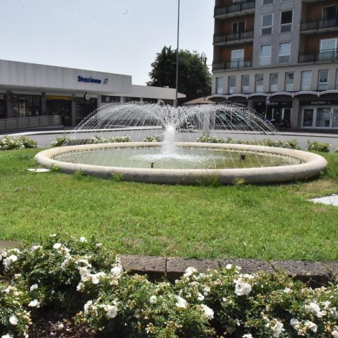<br><a href="mailto:info@ecologiaacustica.org;satorcollettivonoise@gmail.com?subject=PAESAGGIO SONORO --- [segnalazione] --- audio: Fontana"><i><br>Facci sapere cosa ne pensi di questo audio!</a><audio id="audio_AN_FONTANA_STAZIONE" loop> <source src="dati/AN_FONTANA_STAZIONE/fontana stazione.mp3" type="audio/mpeg"> </audio></div>`)[0];
            popup_38db53e9b0a141dc89d5cc722adaefc5.setContent(html_ce639f46c1e04ff9a7fdf6f0c219663d);


        marker_b6b32e7f87c54d8183ed26f57c6eab64.bindPopup(popup_38db53e9b0a141dc89d5cc722adaefc5)
marker_b6b32e7f87c54d8183ed26f57c6eab64.on('click', function (e) {this.openPopup(); document.getElementById('audio_AN_FONTANA_STAZIONE').play();});
        ;


            var marker_8dd2a197e33e4d39a6ecc5ab37a5cb93 = L.marker(
                [45.325122, 8.850307],
                {}
            );


        var custom_icon_39f1140d3f444353a753a0041ff1d92d = L.icon({"iconSize": [30, 30], "iconUrl": "https://emojipedia-us.s3.dualstack.us-west-1.amazonaws.com/thumbs/160/microsoft/74/cloud_2601.png"});
        marker_8dd2a197e33e4d39a6ecc5ab37a5cb93.setIcon(custom_icon_39f1140d3f444353a753a0041ff1d92d);


        var popup_7c648cf30aee46ef9c36c4fb32df5711 = L.popup({"maxWidth": "270"});


            var html_1a6b8ca3d41e4b4faae814734474b9da = $(`<div id="html_1a6b8ca3d41e4b4faae814734474b9da" style="width: 100.0%; height: 100.0%;"><h1 style = "font-size: 30px;"><b>L'Addolarata</b></h1>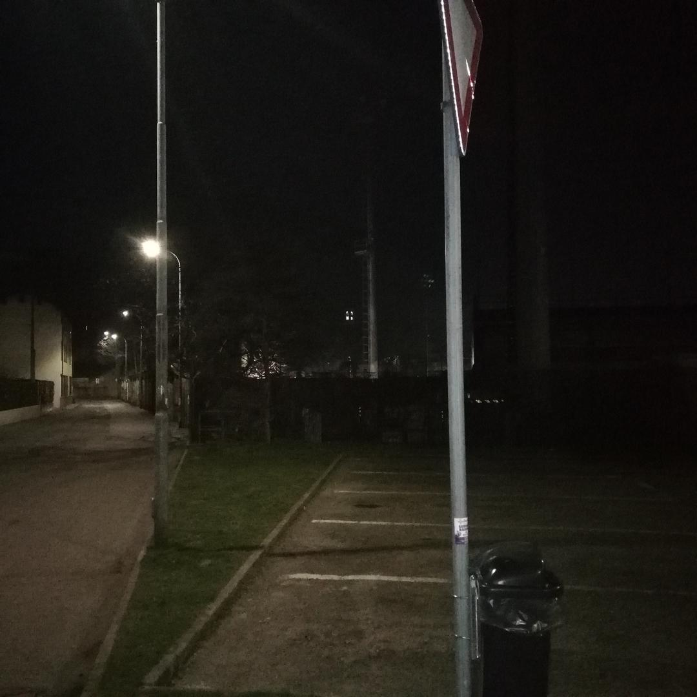<br><a href="mailto:info@ecologiaacustica.org;satorcollettivonoise@gmail.com?subject=PAESAGGIO SONORO --- [segnalazione] --- audio: L'Addolarata"><i><br>Facci sapere cosa ne pensi di questo audio!</a><audio id="audio_GU_ADDOLORATA" loop> <source src="dati/GU_ADDOLORATA/ZOOM0041_elab-converted.mp3" type="audio/mpeg"> </audio></div>`)[0];
            popup_7c648cf30aee46ef9c36c4fb32df5711.setContent(html_1a6b8ca3d41e4b4faae814734474b9da);


        marker_8dd2a197e33e4d39a6ecc5ab37a5cb93.bindPopup(popup_7c648cf30aee46ef9c36c4fb32df5711)
marker_8dd2a197e33e4d39a6ecc5ab37a5cb93.on('click', function (e) {this.openPopup(); document.getElementById('audio_GU_ADDOLORATA').play();});
        ;


            var marker_93538bfbb2db4b3eb2aa70e7cdb92189 = L.marker(
                [45.30644102, 8.889899845],
                {}
            );


        var custom_icon_12cb7fa8bf334cb8aae4589561b12999 = L.icon({"iconSize": [30, 30], "iconUrl": "https://emojipedia-us.s3.dualstack.us-west-1.amazonaws.com/thumbs/160/microsoft/74/cloud_2601.png"});
        marker_93538bfbb2db4b3eb2aa70e7cdb92189.setIcon(custom_icon_12cb7fa8bf334cb8aae4589561b12999);


        var popup_25b72d6dc419459c9448a7efd689087f = L.popup({"maxWidth": "270"});


            var html_d3df2171212f465b81daed4cd5ceab37 = $(`<div id="html_d3df2171212f465b81daed4cd5ceab37" style="width: 100.0%; height: 100.0%;"><h1 style = "font-size: 30px;"><b>Agriturismo Coldiretti</b></h1>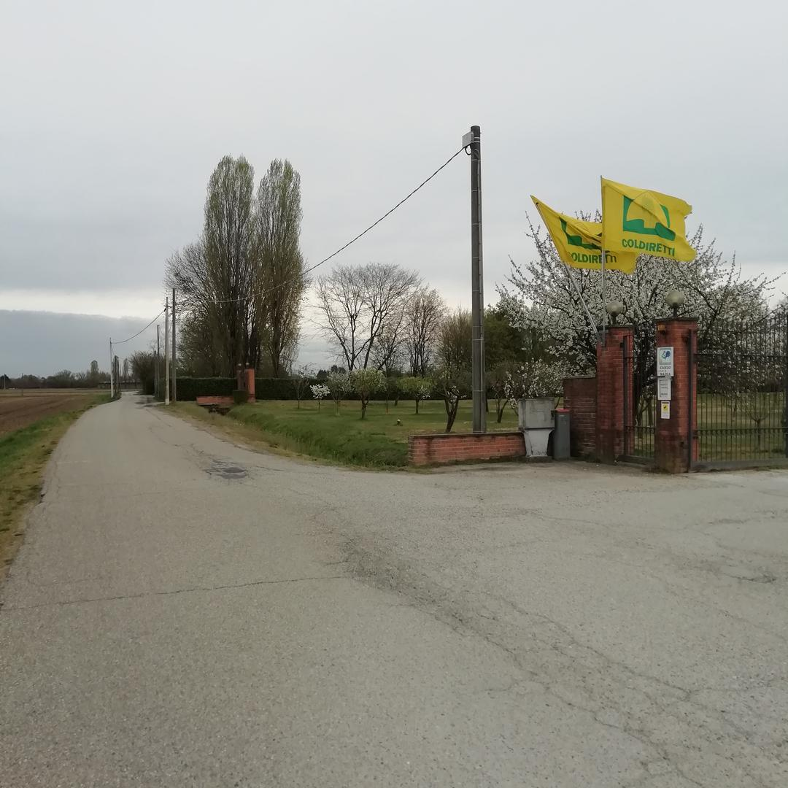<br><a href="mailto:info@ecologiaacustica.org;satorcollettivonoise@gmail.com?subject=PAESAGGIO SONORO --- [segnalazione] --- audio: Agriturismo Coldiretti"><i><br>Facci sapere cosa ne pensi di questo audio!</a><audio id="audio_GU_AGRITURISMO_COLDIRETTI" loop> <source src="dati/GU_AGRITURISMO_COLDIRETTI/ZOOM0025_elab-converted.mp3" type="audio/mpeg"> </audio></div>`)[0];
            popup_25b72d6dc419459c9448a7efd689087f.setContent(html_d3df2171212f465b81daed4cd5ceab37);


        marker_93538bfbb2db4b3eb2aa70e7cdb92189.bindPopup(popup_25b72d6dc419459c9448a7efd689087f)
marker_93538bfbb2db4b3eb2aa70e7cdb92189.on('click', function (e) {this.openPopup(); document.getElementById('audio_GU_AGRITURISMO_COLDIRETTI').play();});
        ;


            var marker_408ec913627c48ba87524f48a4d84d84 = L.marker(
                [45.284964, 8.866013],
                {}
            );


        var custom_icon_c1d9d2878fc34289bd18b385ff4c1dd8 = L.icon({"iconSize": [30, 30], "iconUrl": "https://emojipedia-us.s3.dualstack.us-west-1.amazonaws.com/thumbs/160/microsoft/74/cloud_2601.png"});
        marker_408ec913627c48ba87524f48a4d84d84.setIcon(custom_icon_c1d9d2878fc34289bd18b385ff4c1dd8);


        var popup_32f5db3f8ae44bde83209d5c749051a8 = L.popup({"maxWidth": "270"});


            var html_bda4dfd3563b4a48ad7d27164d7bfc65 = $(`<div id="html_bda4dfd3563b4a48ad7d27164d7bfc65" style="width: 100.0%; height: 100.0%;"><h1 style = "font-size: 30px;"><b>Via Pace della Sforzesca</b></h1>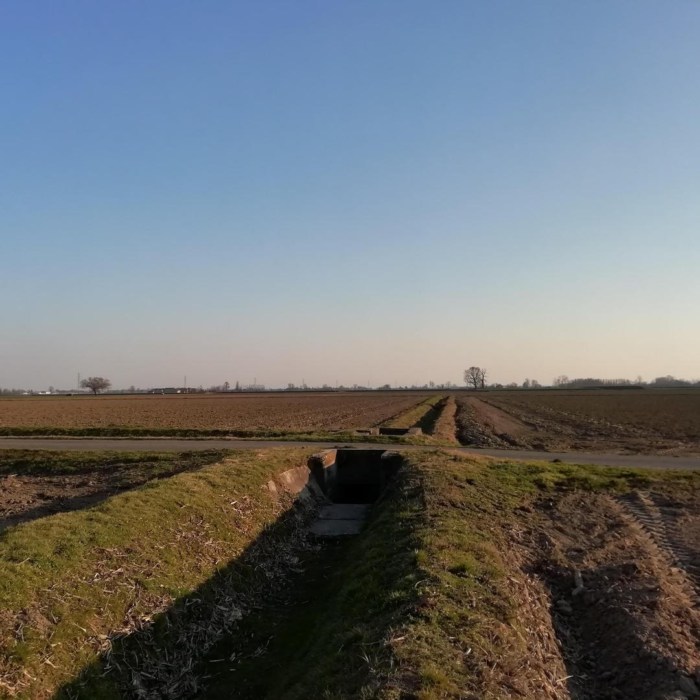<br><a href="mailto:info@ecologiaacustica.org;satorcollettivonoise@gmail.com?subject=PAESAGGIO SONORO --- [segnalazione] --- audio: Via Pace della Sforzesca"><i><br>Facci sapere cosa ne pensi di questo audio!</a><audio id="audio_GU_BATTAGLIA_SFORZESCA_1" loop> <source src="dati/GU_BATTAGLIA_SFORZESCA_1/ZOOM0028_elab-converted.mp3" type="audio/mpeg"> </audio></div>`)[0];
            popup_32f5db3f8ae44bde83209d5c749051a8.setContent(html_bda4dfd3563b4a48ad7d27164d7bfc65);


        marker_408ec913627c48ba87524f48a4d84d84.bindPopup(popup_32f5db3f8ae44bde83209d5c749051a8)
marker_408ec913627c48ba87524f48a4d84d84.on('click', function (e) {this.openPopup(); document.getElementById('audio_GU_BATTAGLIA_SFORZESCA_1').play();});
        ;


            var marker_0caefa01260646fa907a10bcd55f030b = L.marker(
                [45.28298, 8.865029],
                {}
            );


        var custom_icon_eae3a83ee8b34d90856fd9793411f61a = L.icon({"iconSize": [30, 30], "iconUrl": "https://emojipedia-us.s3.dualstack.us-west-1.amazonaws.com/thumbs/160/microsoft/74/small-airplane_1f6e9.png"});
        marker_0caefa01260646fa907a10bcd55f030b.setIcon(custom_icon_eae3a83ee8b34d90856fd9793411f61a);


        var popup_ff4dd352451e4d10a71e56cd4f8eceaa = L.popup({"maxWidth": "270"});


            var html_bea803f257c741ed8b821f1b93598dbd = $(`<div id="html_bea803f257c741ed8b821f1b93598dbd" style="width: 100.0%; height: 100.0%;"><h1 style = "font-size: 30px;"><b>Aliante</b></h1>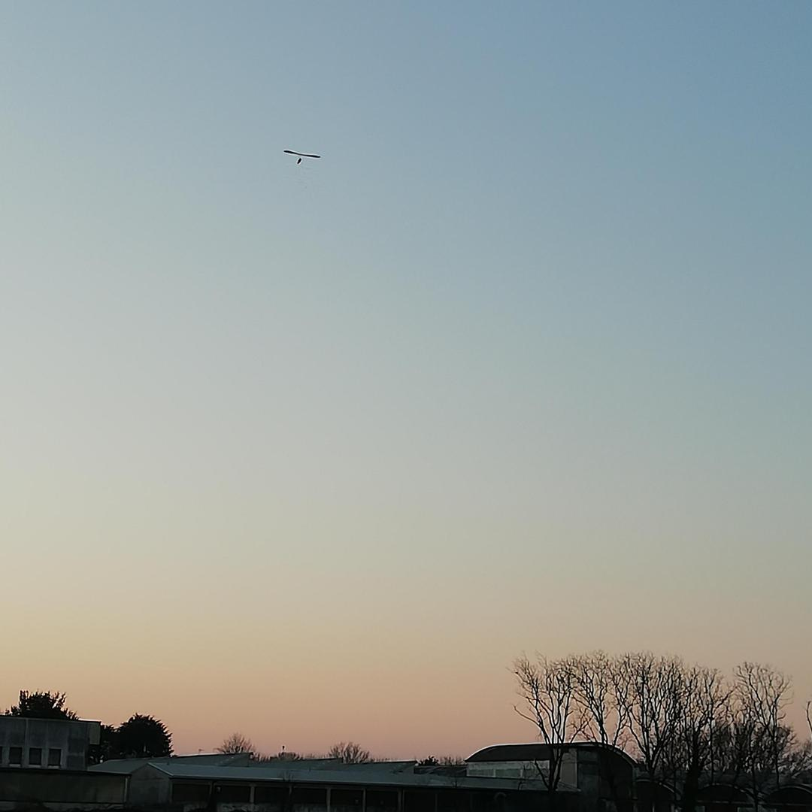<br><a href="mailto:info@ecologiaacustica.org;satorcollettivonoise@gmail.com?subject=PAESAGGIO SONORO --- [segnalazione] --- audio: Aliante"><i><br>Facci sapere cosa ne pensi di questo audio!</a><audio id="audio_GU_BATTAGLIA_SFORZESCA_2" loop> <source src="dati/GU_BATTAGLIA_SFORZESCA_2/ZOOM0029_elab-converted.mp3" type="audio/mpeg"> </audio></div>`)[0];
            popup_ff4dd352451e4d10a71e56cd4f8eceaa.setContent(html_bea803f257c741ed8b821f1b93598dbd);


        marker_0caefa01260646fa907a10bcd55f030b.bindPopup(popup_ff4dd352451e4d10a71e56cd4f8eceaa)
marker_0caefa01260646fa907a10bcd55f030b.on('click', function (e) {this.openPopup(); document.getElementById('audio_GU_BATTAGLIA_SFORZESCA_2').play();});
        ;


            var marker_eefc8991a3a64ea6a294e2b9f743e29c = L.marker(
                [45.283684, 8.859826],
                {}
            );


        var custom_icon_88af4b327d1647aeb9ef7ab43e80868b = L.icon({"iconSize": [30, 30], "iconUrl": "https://emojipedia-us.s3.dualstack.us-west-1.amazonaws.com/thumbs/160/microsoft/209/people-holding-hands_1f9d1-200d-1f91d-200d-1f9d1.png"});
        marker_eefc8991a3a64ea6a294e2b9f743e29c.setIcon(custom_icon_88af4b327d1647aeb9ef7ab43e80868b);


        var popup_d6de2b5562684e37b5f4ece7a939b611 = L.popup({"maxWidth": "270"});


            var html_fb37f7adab6647dea519ebfae3d4b94e = $(`<div id="html_fb37f7adab6647dea519ebfae3d4b94e" style="width: 100.0%; height: 100.0%;"><h1 style = "font-size: 30px;"><b>Gioventù</b></h1>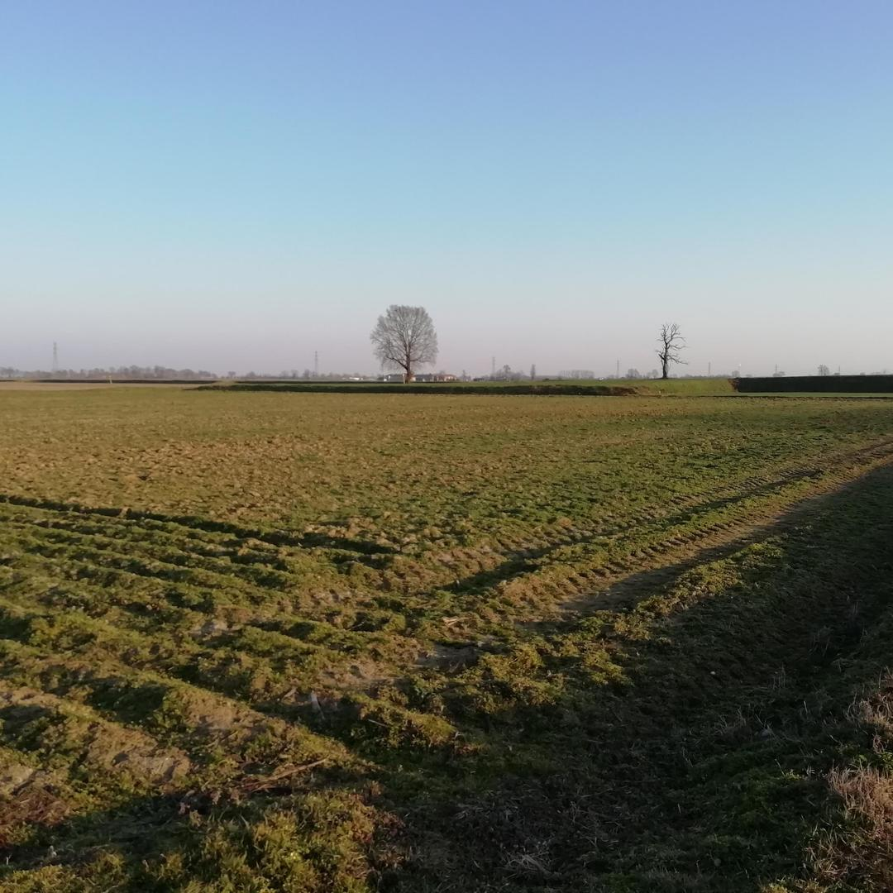<br><a href="mailto:info@ecologiaacustica.org;satorcollettivonoise@gmail.com?subject=PAESAGGIO SONORO --- [segnalazione] --- audio: Gioventù"><i><br>Facci sapere cosa ne pensi di questo audio!</a><audio id="audio_GU_BATTAGLIA_SFORZESCA_3" loop> <source src="dati/GU_BATTAGLIA_SFORZESCA_3/ZOOM0032_elab-converted.mp3" type="audio/mpeg"> </audio></div>`)[0];
            popup_d6de2b5562684e37b5f4ece7a939b611.setContent(html_fb37f7adab6647dea519ebfae3d4b94e);


        marker_eefc8991a3a64ea6a294e2b9f743e29c.bindPopup(popup_d6de2b5562684e37b5f4ece7a939b611)
marker_eefc8991a3a64ea6a294e2b9f743e29c.on('click', function (e) {this.openPopup(); document.getElementById('audio_GU_BATTAGLIA_SFORZESCA_3').play();});
        ;


            var marker_f2491580d271450590d4335884acbc86 = L.marker(
                [45.283238, 8.855915],
                {}
            );


        var custom_icon_5315eb9fb778426e81adaf3d7ea52634 = L.icon({"iconSize": [30, 30], "iconUrl": "https://emojipedia-us.s3.dualstack.us-west-1.amazonaws.com/thumbs/160/microsoft/74/high-voltage-sign_26a1.png"});
        marker_f2491580d271450590d4335884acbc86.setIcon(custom_icon_5315eb9fb778426e81adaf3d7ea52634);


        var popup_d8832fd4fcce4a2d9412ef1be73696f5 = L.popup({"maxWidth": "270"});


            var html_02ef3b0ca7234f299f06833f947bedd7 = $(`<div id="html_02ef3b0ca7234f299f06833f947bedd7" style="width: 100.0%; height: 100.0%;"><h1 style = "font-size: 30px;"><b>Energia pulita</b></h1>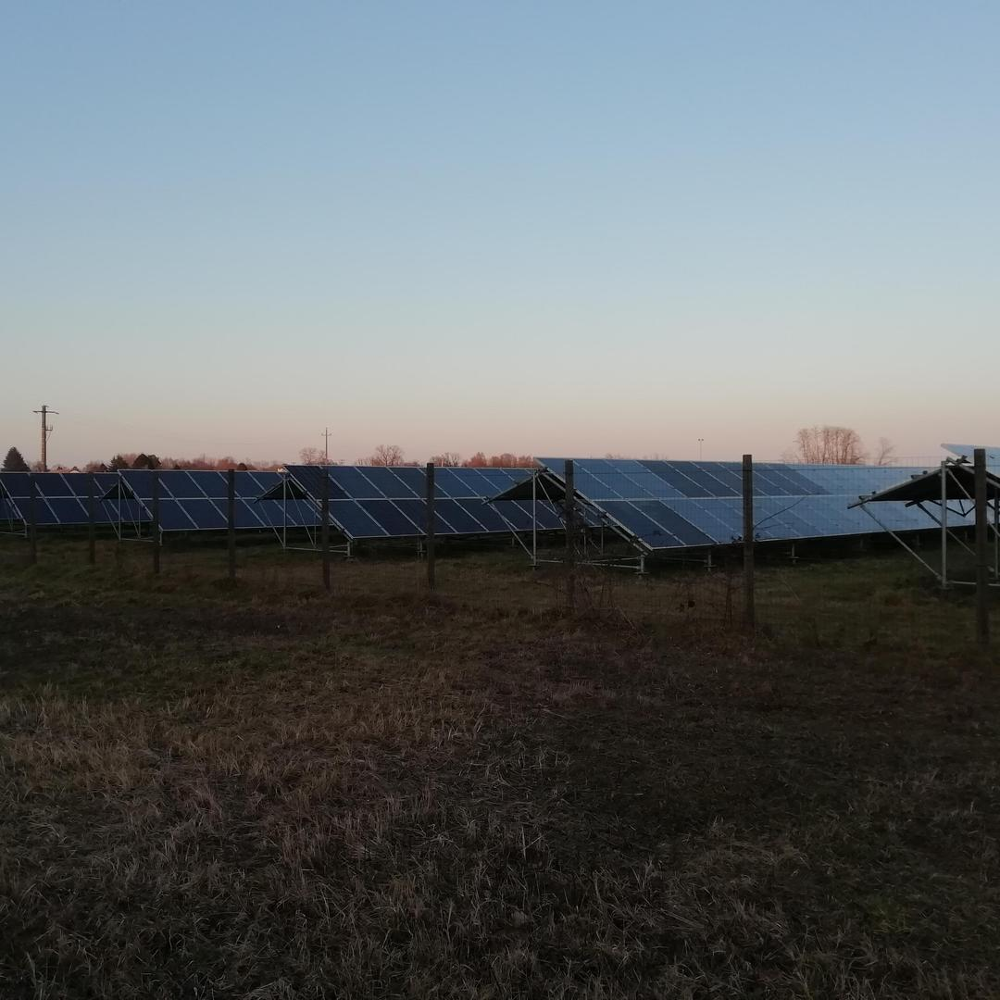<br><a href="mailto:info@ecologiaacustica.org;satorcollettivonoise@gmail.com?subject=PAESAGGIO SONORO --- [segnalazione] --- audio: Energia pulita"><i><br>Facci sapere cosa ne pensi di questo audio!</a><audio id="audio_GU_BATTAGLIA_SFORZESCA_4" loop> <source src="dati/GU_BATTAGLIA_SFORZESCA_4/ZOOM0036_elab-converted.mp3" type="audio/mpeg"> </audio></div>`)[0];
            popup_d8832fd4fcce4a2d9412ef1be73696f5.setContent(html_02ef3b0ca7234f299f06833f947bedd7);


        marker_f2491580d271450590d4335884acbc86.bindPopup(popup_d8832fd4fcce4a2d9412ef1be73696f5)
marker_f2491580d271450590d4335884acbc86.on('click', function (e) {this.openPopup(); document.getElementById('audio_GU_BATTAGLIA_SFORZESCA_4').play();});
        ;


            var marker_74655cc8a78344c09c09924183e639bd = L.marker(
                [45.284372, 8.8599],
                {}
            );


        var custom_icon_ad0a6c56c47047d8a3c343bfdb7587b0 = L.icon({"iconSize": [30, 30], "iconUrl": "https://emojipedia-us.s3.dualstack.us-west-1.amazonaws.com/thumbs/160/microsoft/74/bird_1f426.png"});
        marker_74655cc8a78344c09c09924183e639bd.setIcon(custom_icon_ad0a6c56c47047d8a3c343bfdb7587b0);


        var popup_504bbaf28fb04281892e9fce8aea0d61 = L.popup({"maxWidth": "270"});


            var html_ac594e92f07246bebb63d18be8cca8cb = $(`<div id="html_ac594e92f07246bebb63d18be8cca8cb" style="width: 100.0%; height: 100.0%;"><h1 style = "font-size: 30px;"><b>I ragazzi sono andati a casa</b></h1>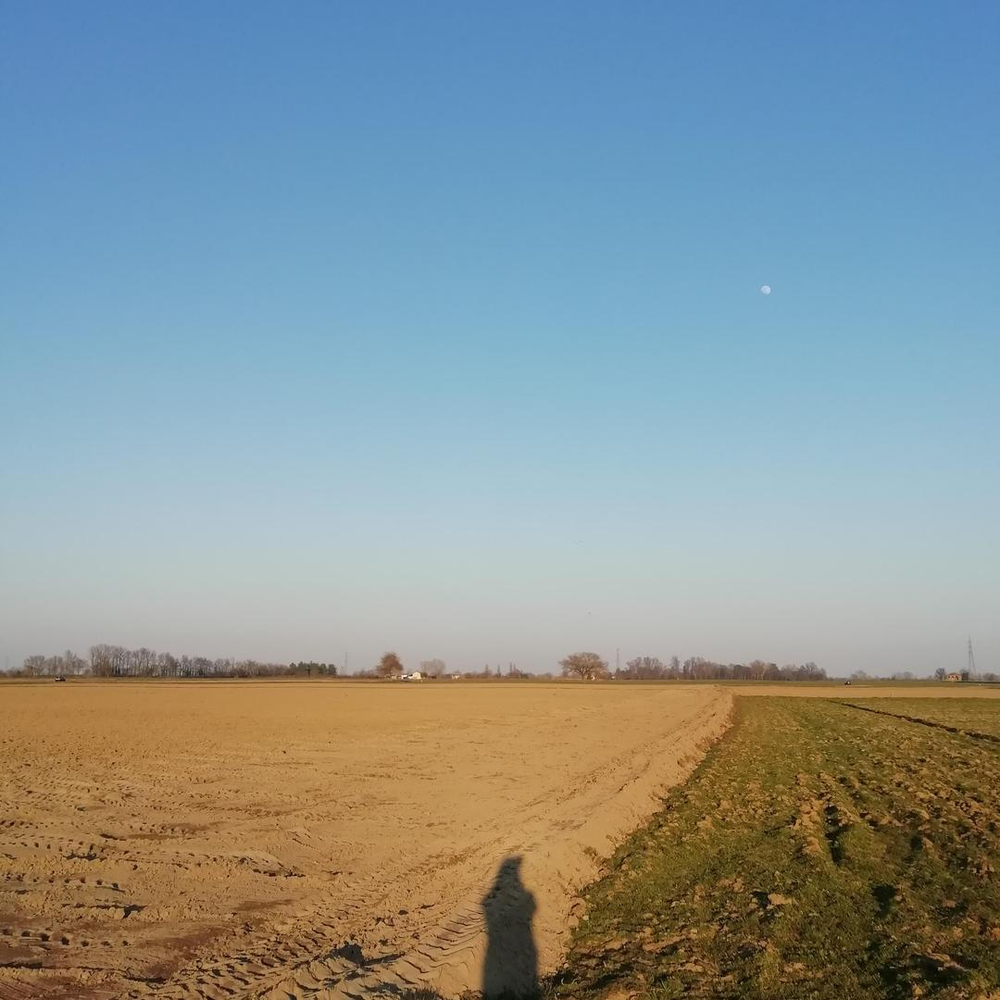<br><a href="mailto:info@ecologiaacustica.org;satorcollettivonoise@gmail.com?subject=PAESAGGIO SONORO --- [segnalazione] --- audio: I ragazzi sono andati a casa"><i><br>Facci sapere cosa ne pensi di questo audio!</a><audio id="audio_GU_BATTAGLIA_SFORZESCA_5" loop> <source src="dati/GU_BATTAGLIA_SFORZESCA_5/ZOOM0037_elab-converted.mp3" type="audio/mpeg"> </audio></div>`)[0];
            popup_504bbaf28fb04281892e9fce8aea0d61.setContent(html_ac594e92f07246bebb63d18be8cca8cb);


        marker_74655cc8a78344c09c09924183e639bd.bindPopup(popup_504bbaf28fb04281892e9fce8aea0d61)
marker_74655cc8a78344c09c09924183e639bd.on('click', function (e) {this.openPopup(); document.getElementById('audio_GU_BATTAGLIA_SFORZESCA_5').play();});
        ;


            var marker_8189833c68984b39bb2096fd9014f447 = L.marker(
                [45.286434, 8.859578],
                {}
            );


        var custom_icon_d981fd2d886b4d34b9dc1aca4afd6fd7 = L.icon({"iconSize": [30, 30], "iconUrl": "https://emojipedia-us.s3.dualstack.us-west-1.amazonaws.com/thumbs/160/microsoft/74/water-wave_1f30a.png"});
        marker_8189833c68984b39bb2096fd9014f447.setIcon(custom_icon_d981fd2d886b4d34b9dc1aca4afd6fd7);


        var popup_fc7d449a14cf4fc1b668da1bdc36e148 = L.popup({"maxWidth": "270"});


            var html_6244935ae3eb460f890f8455918c560c = $(`<div id="html_6244935ae3eb460f890f8455918c560c" style="width: 100.0%; height: 100.0%;"><h1 style = "font-size: 30px;"><b>Roggia</b></h1>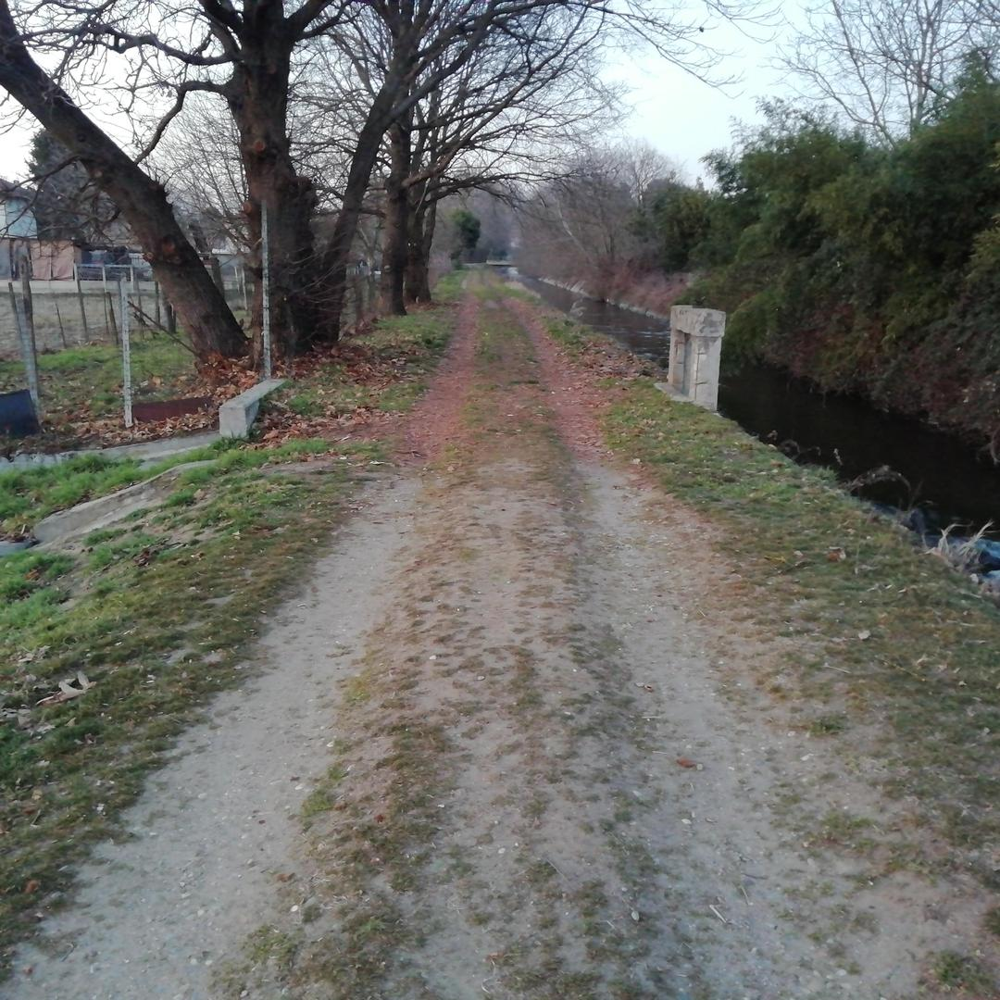<br><a href="mailto:info@ecologiaacustica.org;satorcollettivonoise@gmail.com?subject=PAESAGGIO SONORO --- [segnalazione] --- audio: Roggia"><i><br>Facci sapere cosa ne pensi di questo audio!</a><audio id="audio_GU_BATTAGLIA_SFORZESCA_6" loop> <source src="dati/GU_BATTAGLIA_SFORZESCA_6/ZOOM0038_elab-converted.mp3" type="audio/mpeg"> </audio></div>`)[0];
            popup_fc7d449a14cf4fc1b668da1bdc36e148.setContent(html_6244935ae3eb460f890f8455918c560c);


        marker_8189833c68984b39bb2096fd9014f447.bindPopup(popup_fc7d449a14cf4fc1b668da1bdc36e148)
marker_8189833c68984b39bb2096fd9014f447.on('click', function (e) {this.openPopup(); document.getElementById('audio_GU_BATTAGLIA_SFORZESCA_6').play();});
        ;


            var marker_97c15deaa23b4b65b4b56e32a71a4842 = L.marker(
                [45.305114, 8.863925],
                {}
            );


        var custom_icon_f51e3a0c652f4c689b40899c709f9807 = L.icon({"iconSize": [30, 30], "iconUrl": "https://emojipedia-us.s3.dualstack.us-west-1.amazonaws.com/thumbs/160/microsoft/74/gear_2699.png"});
        marker_97c15deaa23b4b65b4b56e32a71a4842.setIcon(custom_icon_f51e3a0c652f4c689b40899c709f9807);


        var popup_a5e102e485b44fc79356501a9facfbdf = L.popup({"maxWidth": "270"});


            var html_59cb572ec88645009cc0d988ffbd3340 = $(`<div id="html_59cb572ec88645009cc0d988ffbd3340" style="width: 100.0%; height: 100.0%;"><h1 style = "font-size: 30px;"><b>Telecamera</b></h1><br><a href="mailto:info@ecologiaacustica.org;satorcollettivonoise@gmail.com?subject=PAESAGGIO SONORO --- [segnalazione] --- audio: Telecamera"><i><br>Facci sapere cosa ne pensi di questo audio!</a><audio id="audio_GU_BERCLEDA_TELECAMERA" loop> <source src="dati/GU_BERCLEDA_TELECAMERA/ZOOM0023_elab-converted.mp3" type="audio/mpeg"> </audio></div>`)[0];
            popup_a5e102e485b44fc79356501a9facfbdf.setContent(html_59cb572ec88645009cc0d988ffbd3340);


        marker_97c15deaa23b4b65b4b56e32a71a4842.bindPopup(popup_a5e102e485b44fc79356501a9facfbdf)
marker_97c15deaa23b4b65b4b56e32a71a4842.on('click', function (e) {this.openPopup(); document.getElementById('audio_GU_BERCLEDA_TELECAMERA').play();});
        ;


            var marker_7561a3516c4e43499a01e4c44b0ea28e = L.marker(
                [45.322263, 8.864828],
                {}
            );


        var custom_icon_48137796d60848e7bdf608630edbf963 = L.icon({"iconSize": [30, 30], "iconUrl": "https://emojipedia-us.s3.dualstack.us-west-1.amazonaws.com/thumbs/160/microsoft/74/high-voltage-sign_26a1.png"});
        marker_7561a3516c4e43499a01e4c44b0ea28e.setIcon(custom_icon_48137796d60848e7bdf608630edbf963);


        var popup_d0369110d6b4422ca54e0eb871a1a88c = L.popup({"maxWidth": "270"});


            var html_8643f06465c947be9bb3c2e5873e6f00 = $(`<div id="html_8643f06465c947be9bb3c2e5873e6f00" style="width: 100.0%; height: 100.0%;"><h1 style = "font-size: 30px;"><b>Via Carlo Goldoni</b></h1>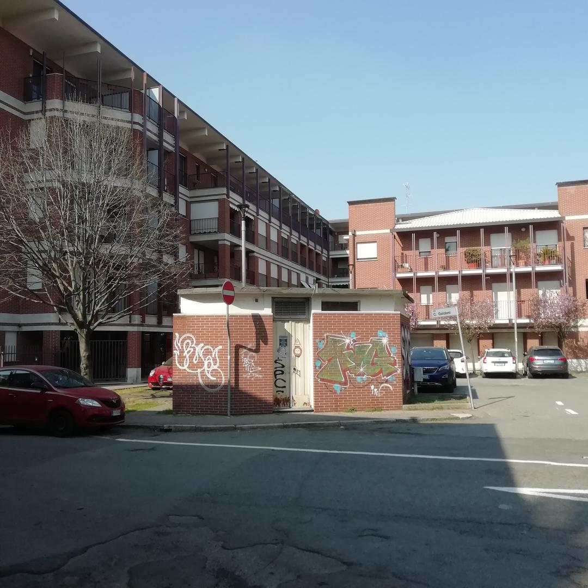<br><a href="mailto:info@ecologiaacustica.org;satorcollettivonoise@gmail.com?subject=PAESAGGIO SONORO --- [segnalazione] --- audio: Via Carlo Goldoni"><i><br>Facci sapere cosa ne pensi di questo audio!</a><audio id="audio_GU_BESTE_ENEL" loop> <source src="dati/GU_BESTE_ENEL/ZOOM0031_elab-converted.mp3" type="audio/mpeg"> </audio></div>`)[0];
            popup_d0369110d6b4422ca54e0eb871a1a88c.setContent(html_8643f06465c947be9bb3c2e5873e6f00);


        marker_7561a3516c4e43499a01e4c44b0ea28e.bindPopup(popup_d0369110d6b4422ca54e0eb871a1a88c)
marker_7561a3516c4e43499a01e4c44b0ea28e.on('click', function (e) {this.openPopup(); document.getElementById('audio_GU_BESTE_ENEL').play();});
        ;


            var marker_eecfc9c6388d4f8eacdb044ef8ba8525 = L.marker(
                [45.30406137, 8.864040971],
                {}
            );


        var custom_icon_b2b10a7d7bb94a8098a1917c1a1cf10f = L.icon({"iconSize": [30, 30], "iconUrl": "https://emojipedia-us.s3.dualstack.us-west-1.amazonaws.com/thumbs/160/microsoft/209/people-holding-hands_1f9d1-200d-1f91d-200d-1f9d1.png"});
        marker_eecfc9c6388d4f8eacdb044ef8ba8525.setIcon(custom_icon_b2b10a7d7bb94a8098a1917c1a1cf10f);


        var popup_34d5c6a469e943f3bc1e8f2fa49e53c0 = L.popup({"maxWidth": "270"});


            var html_42eed80c3a5740ed8d3a6021bcf337ba = $(`<div id="html_42eed80c3a5740ed8d3a6021bcf337ba" style="width: 100.0%; height: 100.0%;"><h1 style = "font-size: 30px;"><b>Campestre</b></h1>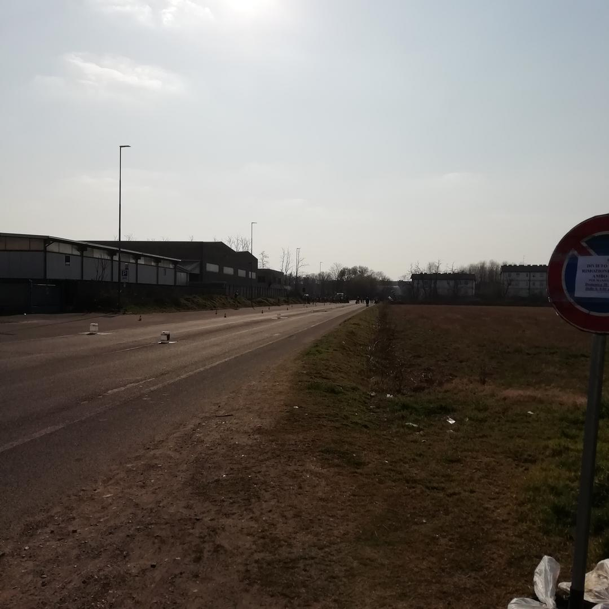<br><a href="mailto:info@ecologiaacustica.org;satorcollettivonoise@gmail.com?subject=PAESAGGIO SONORO --- [segnalazione] --- audio: Campestre"><i><br>Facci sapere cosa ne pensi di questo audio!</a><audio id="audio_GU_CAMPESTRE" loop> <source src="dati/GU_CAMPESTRE/ZOOM0034_elab-converted.mp3" type="audio/mpeg"> </audio></div>`)[0];
            popup_34d5c6a469e943f3bc1e8f2fa49e53c0.setContent(html_42eed80c3a5740ed8d3a6021bcf337ba);


        marker_eecfc9c6388d4f8eacdb044ef8ba8525.bindPopup(popup_34d5c6a469e943f3bc1e8f2fa49e53c0)
marker_eecfc9c6388d4f8eacdb044ef8ba8525.on('click', function (e) {this.openPopup(); document.getElementById('audio_GU_CAMPESTRE').play();});
        ;


            var marker_d47f7fb99ebe44f7b8c868266550e60b = L.marker(
                [45.33842032, 8.87050925],
                {}
            );


        var custom_icon_ccafaaa132f148fa95d65f0d7a3072e7 = L.icon({"iconSize": [30, 30], "iconUrl": "https://emojipedia-us.s3.dualstack.us-west-1.amazonaws.com/thumbs/160/microsoft/74/small-airplane_1f6e9.png"});
        marker_d47f7fb99ebe44f7b8c868266550e60b.setIcon(custom_icon_ccafaaa132f148fa95d65f0d7a3072e7);


        var popup_f9f37d8cc01749eebae34052d99e58b1 = L.popup({"maxWidth": "270"});


            var html_b687bccfd4704a7eab70cfb12089663e = $(`<div id="html_b687bccfd4704a7eab70cfb12089663e" style="width: 100.0%; height: 100.0%;"><h1 style = "font-size: 30px;"><b>Centrale Enel</b></h1>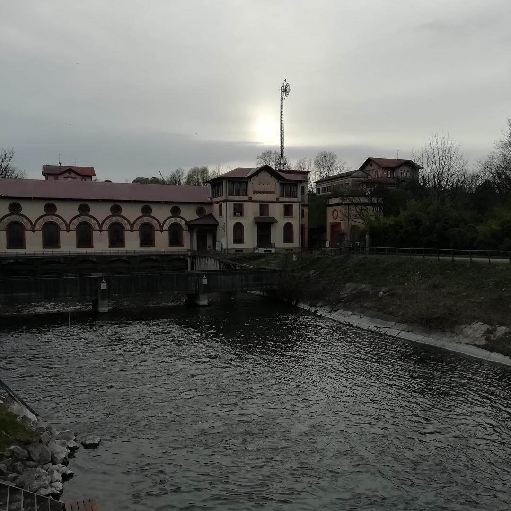<br><a href="mailto:info@ecologiaacustica.org;satorcollettivonoise@gmail.com?subject=PAESAGGIO SONORO --- [segnalazione] --- audio: Centrale Enel"><i><br>Facci sapere cosa ne pensi di questo audio!</a><audio id="audio_GU_CENTRALE_ENEL_v2" loop> <source src="dati/GU_CENTRALE_ENEL_v2/ZOOM0037_aereo_acqua_elab-converted.mp3" type="audio/mpeg"> </audio></div>`)[0];
            popup_f9f37d8cc01749eebae34052d99e58b1.setContent(html_b687bccfd4704a7eab70cfb12089663e);


        marker_d47f7fb99ebe44f7b8c868266550e60b.bindPopup(popup_f9f37d8cc01749eebae34052d99e58b1)
marker_d47f7fb99ebe44f7b8c868266550e60b.on('click', function (e) {this.openPopup(); document.getElementById('audio_GU_CENTRALE_ENEL_v2').play();});
        ;


            var marker_3e384dfd361e4e0db520ed16f3a25248 = L.marker(
                [45.302728, 8.853031],
                {}
            );


        var custom_icon_0185b0545392430bb108aa5974732ee8 = L.icon({"iconSize": [30, 30], "iconUrl": "https://emojipedia-us.s3.dualstack.us-west-1.amazonaws.com/thumbs/160/microsoft/74/church_26ea.png"});
        marker_3e384dfd361e4e0db520ed16f3a25248.setIcon(custom_icon_0185b0545392430bb108aa5974732ee8);


        var popup_19f82f382e604ec1a27364ea01912c42 = L.popup({"maxWidth": "270"});


            var html_a21239fb33ae49f9aaf10d0e656d80ad = $(`<div id="html_a21239fb33ae49f9aaf10d0e656d80ad" style="width: 100.0%; height: 100.0%;"><h1 style = "font-size: 30px;"><b>Chiesa del Cuore</b></h1><br><a href="mailto:info@ecologiaacustica.org;satorcollettivonoise@gmail.com?subject=PAESAGGIO SONORO --- [segnalazione] --- audio: Chiesa del Cuore"><i><br>Facci sapere cosa ne pensi di questo audio!</a><audio id="audio_GU_CHIESA_DEL_CUORE" loop> <source src="dati/GU_CHIESA_DEL_CUORE/GU_CHIESA DEL CUORE.mp3" type="audio/mpeg"> </audio></div>`)[0];
            popup_19f82f382e604ec1a27364ea01912c42.setContent(html_a21239fb33ae49f9aaf10d0e656d80ad);


        marker_3e384dfd361e4e0db520ed16f3a25248.bindPopup(popup_19f82f382e604ec1a27364ea01912c42)
marker_3e384dfd361e4e0db520ed16f3a25248.on('click', function (e) {this.openPopup(); document.getElementById('audio_GU_CHIESA_DEL_CUORE').play();});
        ;


            var marker_b7e978c77a4a4e33a0652c82c678b26a = L.marker(
                [45.323524, 8.881894],
                {}
            );


        var custom_icon_607a097f1e614abe98e4cc05b6e6c979 = L.icon({"iconSize": [30, 30], "iconUrl": "https://emojipedia-us.s3.dualstack.us-west-1.amazonaws.com/thumbs/160/microsoft/74/church_26ea.png"});
        marker_b7e978c77a4a4e33a0652c82c678b26a.setIcon(custom_icon_607a097f1e614abe98e4cc05b6e6c979);


        var popup_e243bf644a6c480c8de08fbe601ae5a0 = L.popup({"maxWidth": "270"});


            var html_1f37c4d60c024e64bae852dabec03136 = $(`<div id="html_1f37c4d60c024e64bae852dabec03136" style="width: 100.0%; height: 100.0%;"><h1 style = "font-size: 30px;"><b>Cristo Re</b></h1>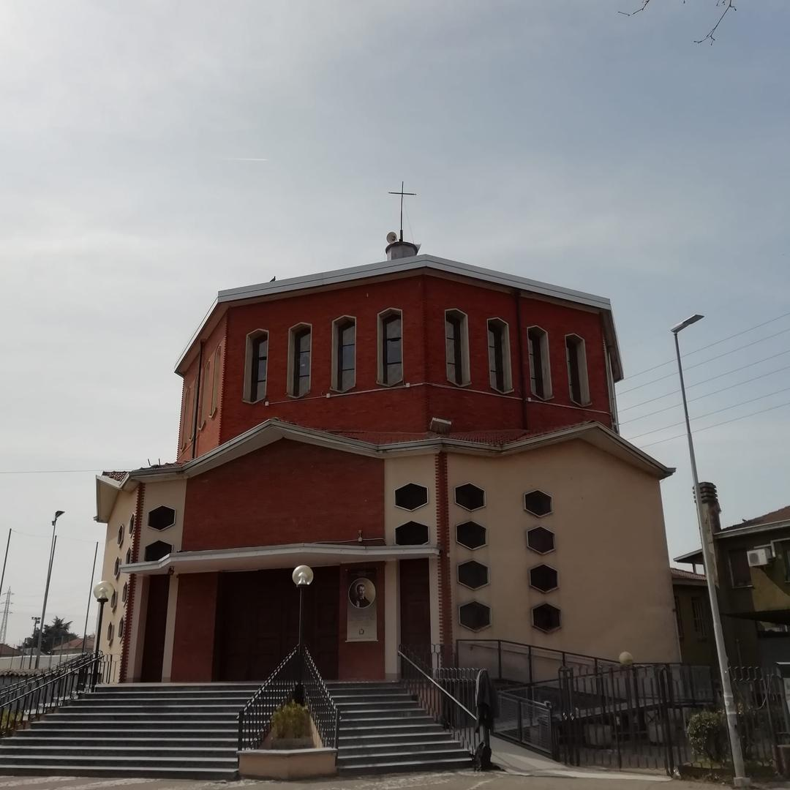<br><a href="mailto:info@ecologiaacustica.org;satorcollettivonoise@gmail.com?subject=PAESAGGIO SONORO --- [segnalazione] --- audio: Cristo Re"><i><br>Facci sapere cosa ne pensi di questo audio!</a><audio id="audio_GU_CRISTORE" loop> <source src="dati/GU_CRISTORE/GU_CRISTORE.mp3" type="audio/mpeg"> </audio></div>`)[0];
            popup_e243bf644a6c480c8de08fbe601ae5a0.setContent(html_1f37c4d60c024e64bae852dabec03136);


        marker_b7e978c77a4a4e33a0652c82c678b26a.bindPopup(popup_e243bf644a6c480c8de08fbe601ae5a0)
marker_b7e978c77a4a4e33a0652c82c678b26a.on('click', function (e) {this.openPopup(); document.getElementById('audio_GU_CRISTORE').play();});
        ;


            var marker_5bce04a5114f4cdcb979d10866f2be85 = L.marker(
                [45.31211904, 8.860001045],
                {}
            );


        var custom_icon_5bb1968a01f445d6af3ff13e40d659df = L.icon({"iconSize": [30, 30], "iconUrl": "https://emojipedia-us.s3.dualstack.us-west-1.amazonaws.com/thumbs/160/microsoft/74/water-wave_1f30a.png"});
        marker_5bce04a5114f4cdcb979d10866f2be85.setIcon(custom_icon_5bb1968a01f445d6af3ff13e40d659df);


        var popup_328e5ea4d5a544368db3ba99ec546ce5 = L.popup({"maxWidth": "270"});


            var html_385053adeebc4e7ea8814ff5ebc7ae9e = $(`<div id="html_385053adeebc4e7ea8814ff5ebc7ae9e" style="width: 100.0%; height: 100.0%;"><h1 style = "font-size: 30px;"><b>Giacchetta Canale</b></h1>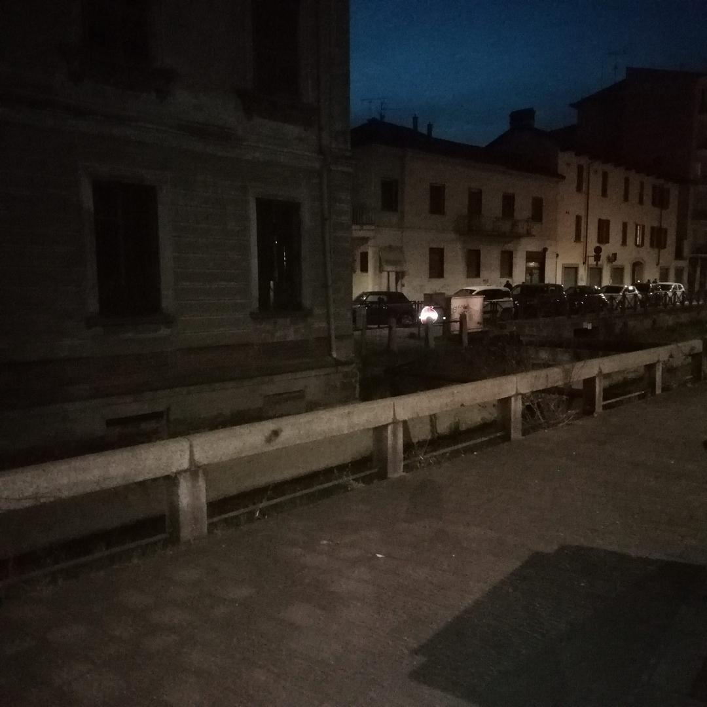<br><a href="mailto:info@ecologiaacustica.org;satorcollettivonoise@gmail.com?subject=PAESAGGIO SONORO --- [segnalazione] --- audio: Giacchetta Canale"><i><br>Facci sapere cosa ne pensi di questo audio!</a><audio id="audio_GU_GIACCHETTA_CANALE" loop> <source src="dati/GU_GIACCHETTA_CANALE/ZOOM0027_elab-converted.mp3" type="audio/mpeg"> </audio></div>`)[0];
            popup_328e5ea4d5a544368db3ba99ec546ce5.setContent(html_385053adeebc4e7ea8814ff5ebc7ae9e);


        marker_5bce04a5114f4cdcb979d10866f2be85.bindPopup(popup_328e5ea4d5a544368db3ba99ec546ce5)
marker_5bce04a5114f4cdcb979d10866f2be85.on('click', function (e) {this.openPopup(); document.getElementById('audio_GU_GIACCHETTA_CANALE').play();});
        ;


            var marker_ed2b40e0f2ab41f089595a17de2a6641 = L.marker(
                [45.29917137, 8.905742693],
                {}
            );


        var custom_icon_a4a47e6231b241a1a8e11d1f0f88d5e2 = L.icon({"iconSize": [30, 30], "iconUrl": "https://emojipedia-us.s3.dualstack.us-west-1.amazonaws.com/thumbs/160/microsoft/74/water-wave_1f30a.png"});
        marker_ed2b40e0f2ab41f089595a17de2a6641.setIcon(custom_icon_a4a47e6231b241a1a8e11d1f0f88d5e2);


        var popup_44ae5ccd10b040bdb35610dcf0d3c8f1 = L.popup({"maxWidth": "270"});


            var html_64a33facff1b4aa5b09f41039cbd1d2b = $(`<div id="html_64a33facff1b4aa5b09f41039cbd1d2b" style="width: 100.0%; height: 100.0%;"><h1 style = "font-size: 30px;"><b>Laghetto dei piccoli</b></h1>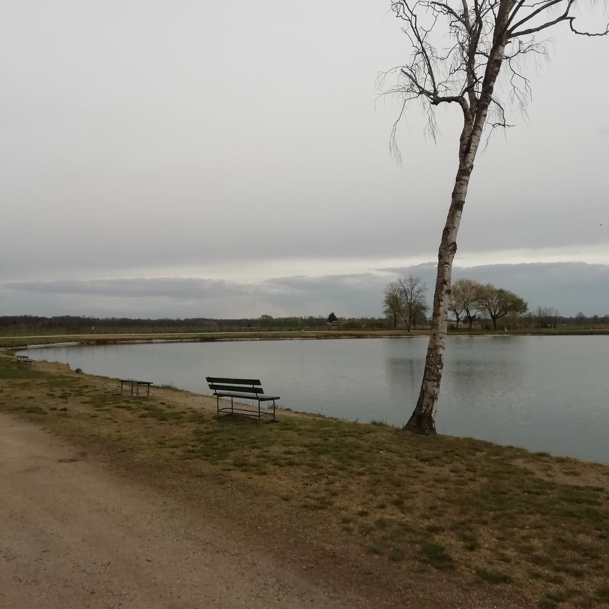<br><a href="mailto:info@ecologiaacustica.org;satorcollettivonoise@gmail.com?subject=PAESAGGIO SONORO --- [segnalazione] --- audio: Laghetto dei piccoli"><i><br>Facci sapere cosa ne pensi di questo audio!</a><audio id="audio_GU_LAGHETTO_DEI_PICCOLI" loop> <source src="dati/GU_LAGHETTO_DEI_PICCOLI/ZOOM0033_elab-converted.mp3" type="audio/mpeg"> </audio></div>`)[0];
            popup_44ae5ccd10b040bdb35610dcf0d3c8f1.setContent(html_64a33facff1b4aa5b09f41039cbd1d2b);


        marker_ed2b40e0f2ab41f089595a17de2a6641.bindPopup(popup_44ae5ccd10b040bdb35610dcf0d3c8f1)
marker_ed2b40e0f2ab41f089595a17de2a6641.on('click', function (e) {this.openPopup(); document.getElementById('audio_GU_LAGHETTO_DEI_PICCOLI').play();});
        ;


            var marker_ccee5863e2ee4e30ac8cd3b5a7399f68 = L.marker(
                [45.3200354, 8.855686002],
                {}
            );


        var custom_icon_b6df6ae65f6e4e0bb1347ab873834896 = L.icon({"iconSize": [30, 30], "iconUrl": "https://emojipedia-us.s3.dualstack.us-west-1.amazonaws.com/thumbs/160/microsoft/74/automobile_1f697.png"});
        marker_ccee5863e2ee4e30ac8cd3b5a7399f68.setIcon(custom_icon_b6df6ae65f6e4e0bb1347ab873834896);


        var popup_2f4ebcdb163f48ebb13133497ce1af95 = L.popup({"maxWidth": "270"});


            var html_46766590ad7542b797e37797c805aa9e = $(`<div id="html_46766590ad7542b797e37797c805aa9e" style="width: 100.0%; height: 100.0%;"><h1 style = "font-size: 30px;"><b>Pavè</b></h1>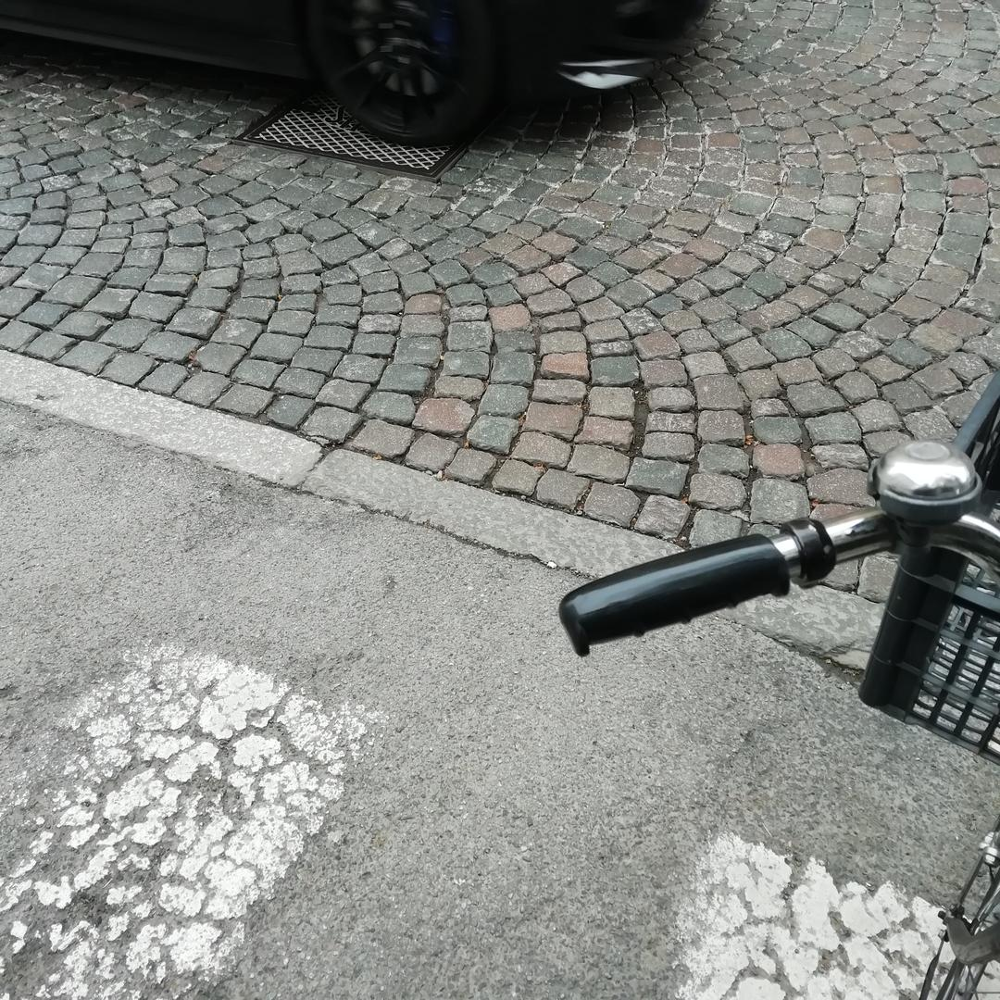<br><a href="mailto:info@ecologiaacustica.org;satorcollettivonoise@gmail.com?subject=PAESAGGIO SONORO --- [segnalazione] --- audio: Pavè"><i><br>Facci sapere cosa ne pensi di questo audio!</a><audio id="audio_GU_MADONNA_7_DOLORI" loop> <source src="dati/GU_MADONNA_7_DOLORI/ZOOM0023_elab-converted.mp3" type="audio/mpeg"> </audio></div>`)[0];
            popup_2f4ebcdb163f48ebb13133497ce1af95.setContent(html_46766590ad7542b797e37797c805aa9e);


        marker_ccee5863e2ee4e30ac8cd3b5a7399f68.bindPopup(popup_2f4ebcdb163f48ebb13133497ce1af95)
marker_ccee5863e2ee4e30ac8cd3b5a7399f68.on('click', function (e) {this.openPopup(); document.getElementById('audio_GU_MADONNA_7_DOLORI').play();});
        ;


            var marker_21ca85d51a7b41c6a9bfbfb870d4d184 = L.marker(
                [45.31246512, 8.883821165],
                {}
            );


        var custom_icon_cc7303b127f346ef8fe70601be4bf066 = L.icon({"iconSize": [30, 30], "iconUrl": "https://emojipedia-us.s3.dualstack.us-west-1.amazonaws.com/thumbs/160/microsoft/74/cat_1f408.png"});
        marker_21ca85d51a7b41c6a9bfbfb870d4d184.setIcon(custom_icon_cc7303b127f346ef8fe70601be4bf066);


        var popup_f0d19f3e9e3e4f6dae3d602e8034ab90 = L.popup({"maxWidth": "270"});


            var html_7f477c55f9044e5184836c25038bcbaa = $(`<div id="html_7f477c55f9044e5184836c25038bcbaa" style="width: 100.0%; height: 100.0%;"><h1 style = "font-size: 30px;"><b>Miciopolis</b></h1>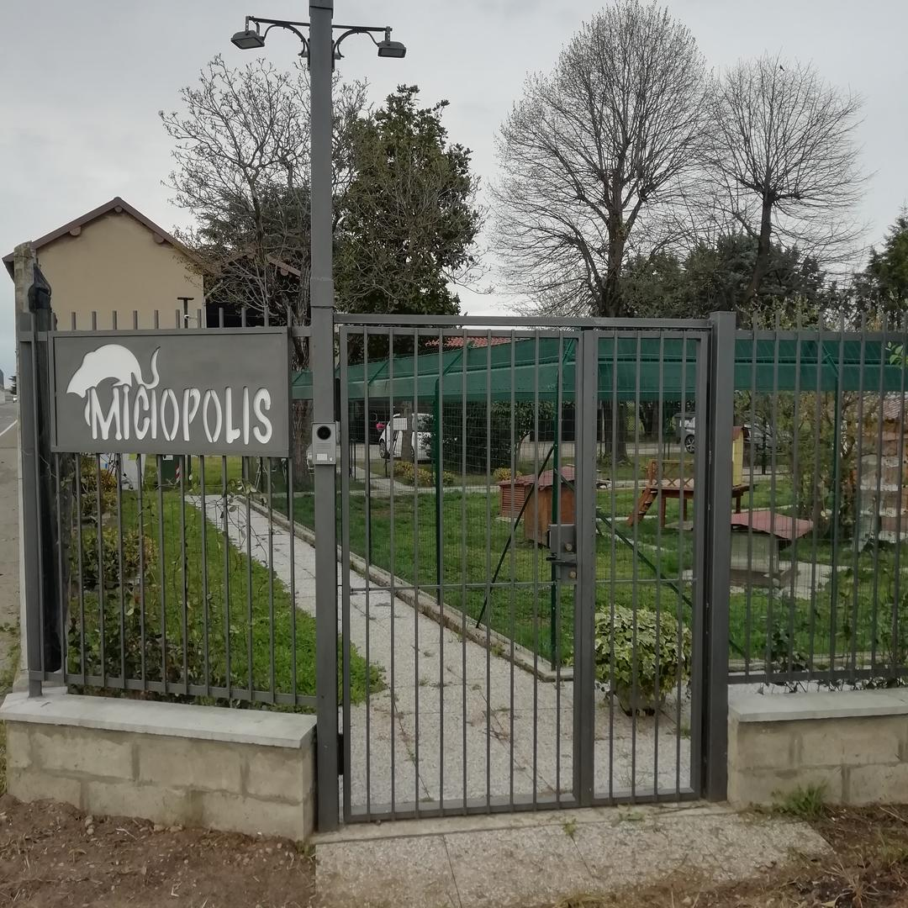<br><a href="mailto:info@ecologiaacustica.org;satorcollettivonoise@gmail.com?subject=PAESAGGIO SONORO --- [segnalazione] --- audio: Miciopolis"><i><br>Facci sapere cosa ne pensi di questo audio!</a><audio id="audio_GU_MICIOPOLIS" loop> <source src="dati/GU_MICIOPOLIS/ZOOM0022_elab-converted.mp3" type="audio/mpeg"> </audio></div>`)[0];
            popup_f0d19f3e9e3e4f6dae3d602e8034ab90.setContent(html_7f477c55f9044e5184836c25038bcbaa);


        marker_21ca85d51a7b41c6a9bfbfb870d4d184.bindPopup(popup_f0d19f3e9e3e4f6dae3d602e8034ab90)
marker_21ca85d51a7b41c6a9bfbfb870d4d184.on('click', function (e) {this.openPopup(); document.getElementById('audio_GU_MICIOPOLIS').play();});
        ;


            var marker_1da84abf540e4357a0ffdefe39e29338 = L.marker(
                [45.33092487, 8.861099374],
                {}
            );


        var custom_icon_05e4891ab00f49b7a7f8633003e23ae5 = L.icon({"iconSize": [30, 30], "iconUrl": "https://emojipedia-us.s3.dualstack.us-west-1.amazonaws.com/thumbs/160/microsoft/74/water-wave_1f30a.png"});
        marker_1da84abf540e4357a0ffdefe39e29338.setIcon(custom_icon_05e4891ab00f49b7a7f8633003e23ae5);


        var popup_142e3f79b3014313ad4d1f23c525c85d = L.popup({"maxWidth": "270"});


            var html_738bab26fba24b559f2a4061c331fcef = $(`<div id="html_738bab26fba24b559f2a4061c331fcef" style="width: 100.0%; height: 100.0%;"><h1 style = "font-size: 30px;"><b>Morabassa</b></h1>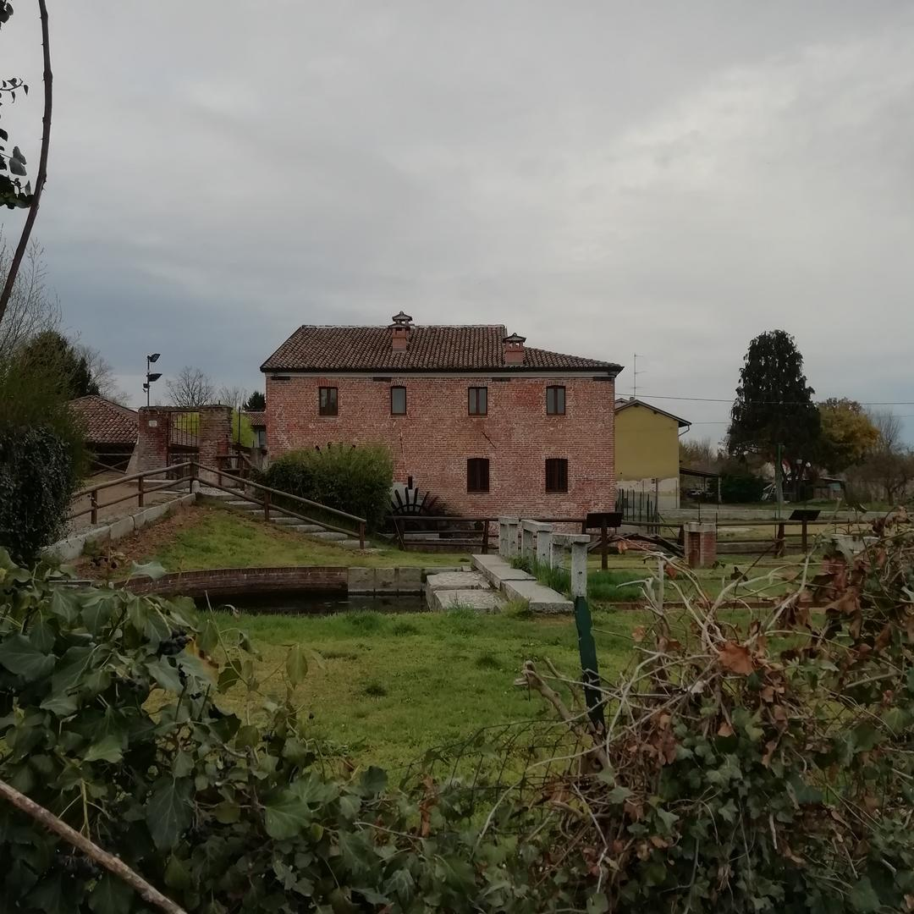<br><a href="mailto:info@ecologiaacustica.org;satorcollettivonoise@gmail.com?subject=PAESAGGIO SONORO --- [segnalazione] --- audio: Morabassa"><i><br>Facci sapere cosa ne pensi di questo audio!</a><audio id="audio_GU_MOLINO_MORABASSA_v1" loop> <source src="dati/GU_MOLINO_MORABASSA_v1/ZOOM0034_elab-converted.mp3" type="audio/mpeg"> </audio></div>`)[0];
            popup_142e3f79b3014313ad4d1f23c525c85d.setContent(html_738bab26fba24b559f2a4061c331fcef);


        marker_1da84abf540e4357a0ffdefe39e29338.bindPopup(popup_142e3f79b3014313ad4d1f23c525c85d)
marker_1da84abf540e4357a0ffdefe39e29338.on('click', function (e) {this.openPopup(); document.getElementById('audio_GU_MOLINO_MORABASSA_v1').play();});
        ;


            var marker_1fb8136c73b54afc88de4a897c2ff59a = L.marker(
                [45.319612, 8.831613],
                {}
            );


        var custom_icon_787c60cf6aaa4b87b99ddc22e8859bf2 = L.icon({"iconSize": [30, 30], "iconUrl": "https://emojipedia-us.s3.dualstack.us-west-1.amazonaws.com/thumbs/160/microsoft/209/people-holding-hands_1f9d1-200d-1f91d-200d-1f9d1.png"});
        marker_1fb8136c73b54afc88de4a897c2ff59a.setIcon(custom_icon_787c60cf6aaa4b87b99ddc22e8859bf2);


        var popup_f07e7cc39d1e4f9fac6fd7b3db2f192a = L.popup({"maxWidth": "270"});


            var html_cf38597551ae451f8360cdc149657bfa = $(`<div id="html_cf38597551ae451f8360cdc149657bfa" style="width: 100.0%; height: 100.0%;"><h1 style = "font-size: 30px;"><b>Palazzetto</b></h1>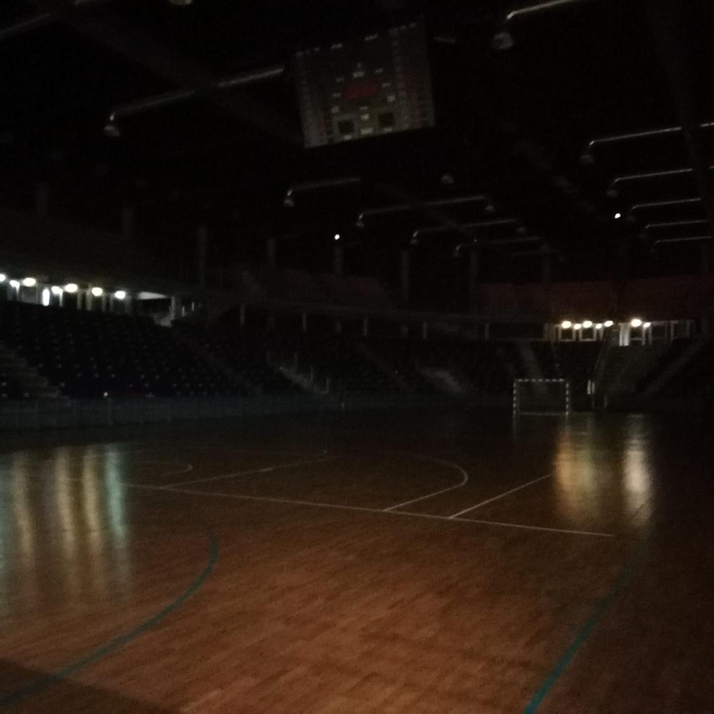<br><a href="mailto:info@ecologiaacustica.org;satorcollettivonoise@gmail.com?subject=PAESAGGIO SONORO --- [segnalazione] --- audio: Palazzetto"><i><br>Facci sapere cosa ne pensi di questo audio!</a><audio id="audio_GU_PALAZZETTO" loop> <source src="dati/GU_PALAZZETTO/palazzetto-converted.mp3" type="audio/mpeg"> </audio></div>`)[0];
            popup_f07e7cc39d1e4f9fac6fd7b3db2f192a.setContent(html_cf38597551ae451f8360cdc149657bfa);


        marker_1fb8136c73b54afc88de4a897c2ff59a.bindPopup(popup_f07e7cc39d1e4f9fac6fd7b3db2f192a)
marker_1fb8136c73b54afc88de4a897c2ff59a.on('click', function (e) {this.openPopup(); document.getElementById('audio_GU_PALAZZETTO').play();});
        ;


            var marker_543618a2028c4a51ac5bfd53bb990509 = L.marker(
                [45.33114616, 8.861188604],
                {}
            );


        var custom_icon_f552983e346b443997d991160ded8d10 = L.icon({"iconSize": [30, 30], "iconUrl": "https://emojipedia-us.s3.dualstack.us-west-1.amazonaws.com/thumbs/160/microsoft/209/people-holding-hands_1f9d1-200d-1f91d-200d-1f9d1.png"});
        marker_543618a2028c4a51ac5bfd53bb990509.setIcon(custom_icon_f552983e346b443997d991160ded8d10);


        var popup_72490ae5b73d4aaba089b8c6a151610f = L.popup({"maxWidth": "270"});


            var html_af768906a795477a9264d40ee8efbbb8 = $(`<div id="html_af768906a795477a9264d40ee8efbbb8" style="width: 100.0%; height: 100.0%;"><h1 style = "font-size: 30px;"><b>Spari al poligono</b></h1>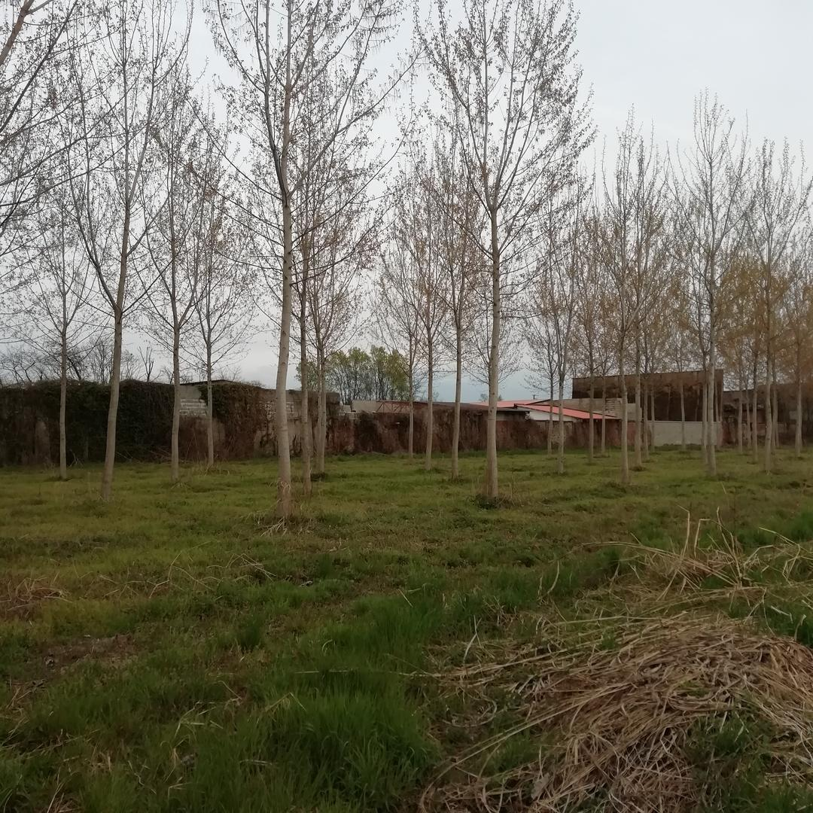<br><a href="mailto:info@ecologiaacustica.org;satorcollettivonoise@gmail.com?subject=PAESAGGIO SONORO --- [segnalazione] --- audio: Spari al poligono"><i><br>Facci sapere cosa ne pensi di questo audio!</a><audio id="audio_GU_POLIGONO" loop> <source src="dati/GU_POLIGONO/poligono-converted.mp3" type="audio/mpeg"> </audio></div>`)[0];
            popup_72490ae5b73d4aaba089b8c6a151610f.setContent(html_af768906a795477a9264d40ee8efbbb8);


        marker_543618a2028c4a51ac5bfd53bb990509.bindPopup(popup_72490ae5b73d4aaba089b8c6a151610f)
marker_543618a2028c4a51ac5bfd53bb990509.on('click', function (e) {this.openPopup(); document.getElementById('audio_GU_POLIGONO').play();});
        ;


            var marker_7df7f2d669484400a335ec9e84434277 = L.marker(
                [45.34084406, 8.867725439],
                {}
            );


        var custom_icon_ca1c91e0df2144aca040a54c40d4ee24 = L.icon({"iconSize": [30, 30], "iconUrl": "https://emojipedia-us.s3.dualstack.us-west-1.amazonaws.com/thumbs/160/microsoft/209/people-holding-hands_1f9d1-200d-1f91d-200d-1f9d1.png"});
        marker_7df7f2d669484400a335ec9e84434277.setIcon(custom_icon_ca1c91e0df2144aca040a54c40d4ee24);


        var popup_fc5f747bc85d433799fe23dbd07a496e = L.popup({"maxWidth": "270"});


            var html_5528e39ee05849f79624fc8c67523dd5 = $(`<div id="html_5528e39ee05849f79624fc8c67523dd5" style="width: 100.0%; height: 100.0%;"><h1 style = "font-size: 30px;"><b>Rave a Ticino</b></h1>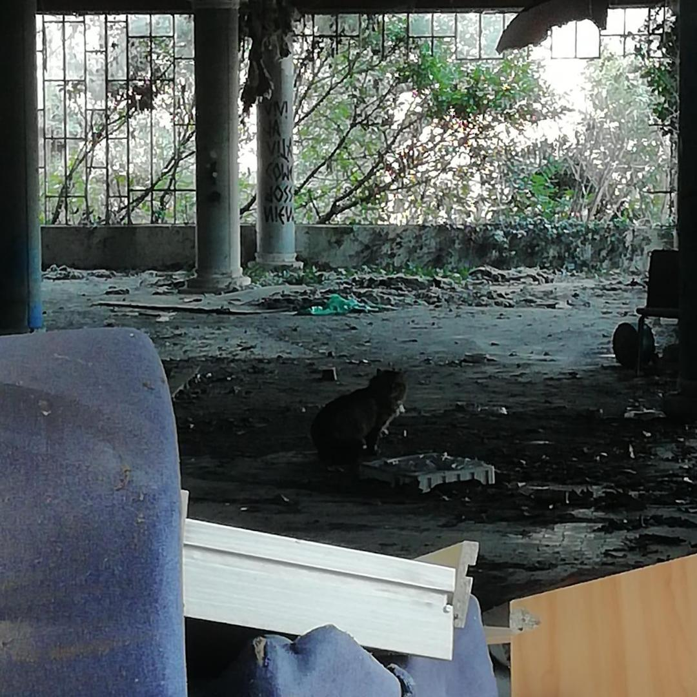<br><a href="mailto:info@ecologiaacustica.org;satorcollettivonoise@gmail.com?subject=PAESAGGIO SONORO --- [segnalazione] --- audio: Rave a Ticino"><i><br>Facci sapere cosa ne pensi di questo audio!</a><audio id="audio_GU_RAVE_TISIN_v1" loop> <source src="dati/GU_RAVE_TISIN_v1/ZOOM0025_elab-converted.mp3" type="audio/mpeg"> </audio></div>`)[0];
            popup_fc5f747bc85d433799fe23dbd07a496e.setContent(html_5528e39ee05849f79624fc8c67523dd5);


        marker_7df7f2d669484400a335ec9e84434277.bindPopup(popup_fc5f747bc85d433799fe23dbd07a496e)
marker_7df7f2d669484400a335ec9e84434277.on('click', function (e) {this.openPopup(); document.getElementById('audio_GU_RAVE_TISIN_v1').play();});
        ;


            var marker_d84c3fb754554a8d95399be981c8a79d = L.marker(
                [45.34220987, 8.865593442],
                {}
            );


        var custom_icon_6d18228805f14e24886b4446e01c0718 = L.icon({"iconSize": [30, 30], "iconUrl": "https://emojipedia-us.s3.dualstack.us-west-1.amazonaws.com/thumbs/160/microsoft/209/people-holding-hands_1f9d1-200d-1f91d-200d-1f9d1.png"});
        marker_d84c3fb754554a8d95399be981c8a79d.setIcon(custom_icon_6d18228805f14e24886b4446e01c0718);


        var popup_f5e02c5a44714f5386d5d452302151a3 = L.popup({"maxWidth": "270"});


            var html_74413636196a4a64bbf3c63be5858ce2 = $(`<div id="html_74413636196a4a64bbf3c63be5858ce2" style="width: 100.0%; height: 100.0%;"><h1 style = "font-size: 30px;"><b>Rave a Ticino</b></h1>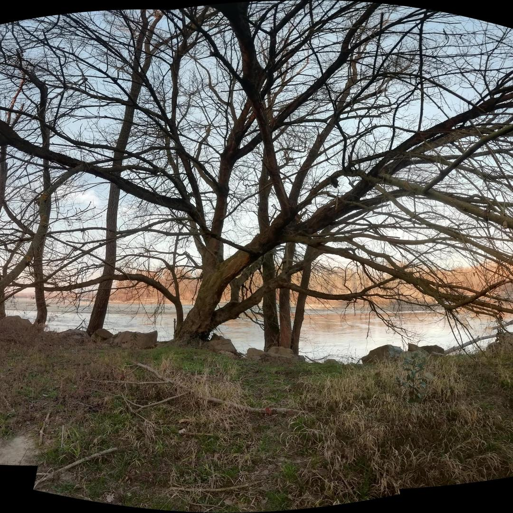<br><a href="mailto:info@ecologiaacustica.org;satorcollettivonoise@gmail.com?subject=PAESAGGIO SONORO --- [segnalazione] --- audio: Rave a Ticino"><i><br>Facci sapere cosa ne pensi di questo audio!</a><audio id="audio_GU_RAVE_TISIN_v3" loop> <source src="dati/GU_RAVE_TISIN_v3/ZOOM0028_elab-converted.mp3" type="audio/mpeg"> </audio></div>`)[0];
            popup_f5e02c5a44714f5386d5d452302151a3.setContent(html_74413636196a4a64bbf3c63be5858ce2);


        marker_d84c3fb754554a8d95399be981c8a79d.bindPopup(popup_f5e02c5a44714f5386d5d452302151a3)
marker_d84c3fb754554a8d95399be981c8a79d.on('click', function (e) {this.openPopup(); document.getElementById('audio_GU_RAVE_TISIN_v3').play();});
        ;


            var marker_a00fe721cab049af887cfb9f2fa2c7ca = L.marker(
                [45.292744, 8.862007],
                {}
            );


        var custom_icon_124cb5564b4744fabf187b99c2d9f733 = L.icon({"iconSize": [30, 30], "iconUrl": "https://emojipedia-us.s3.dualstack.us-west-1.amazonaws.com/thumbs/160/microsoft/74/cloud_2601.png"});
        marker_a00fe721cab049af887cfb9f2fa2c7ca.setIcon(custom_icon_124cb5564b4744fabf187b99c2d9f733);


        var popup_52059fa9bb3d4455929885fb1edb5805 = L.popup({"maxWidth": "270"});


            var html_9cf9c07848334c87b72802798277574e = $(`<div id="html_9cf9c07848334c87b72802798277574e" style="width: 100.0%; height: 100.0%;"><h1 style = "font-size: 30px;"><b>Strada delle ripe alte</b></h1>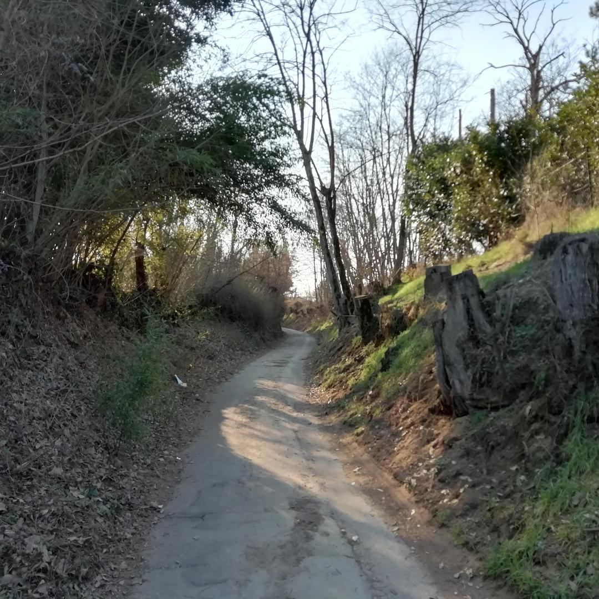<br><a href="mailto:info@ecologiaacustica.org;satorcollettivonoise@gmail.com?subject=PAESAGGIO SONORO --- [segnalazione] --- audio: Strada delle ripe alte"><i><br>Facci sapere cosa ne pensi di questo audio!</a><audio id="audio_GU_RIPE_ALTE" loop> <source src="dati/GU_RIPE_ALTE/ZOOM0024_elab-converted.mp3" type="audio/mpeg"> </audio></div>`)[0];
            popup_52059fa9bb3d4455929885fb1edb5805.setContent(html_9cf9c07848334c87b72802798277574e);


        marker_a00fe721cab049af887cfb9f2fa2c7ca.bindPopup(popup_52059fa9bb3d4455929885fb1edb5805)
marker_a00fe721cab049af887cfb9f2fa2c7ca.on('click', function (e) {this.openPopup(); document.getElementById('audio_GU_RIPE_ALTE').play();});
        ;


            var marker_28d1a1584a9141839c46edfade9bedbc = L.marker(
                [45.34300948, 8.862928168],
                {}
            );


        var custom_icon_8f7109fbfa4f484e885260cbbc5df6b2 = L.icon({"iconSize": [30, 30], "iconUrl": "https://emojipedia-us.s3.dualstack.us-west-1.amazonaws.com/thumbs/160/microsoft/74/bird_1f426.png"});
        marker_28d1a1584a9141839c46edfade9bedbc.setIcon(custom_icon_8f7109fbfa4f484e885260cbbc5df6b2);


        var popup_c836ee2d8cc14d279f64256dd986f35e = L.popup({"maxWidth": "270"});


            var html_c7636cb8a8a74d7e99135a0c9abe343f = $(`<div id="html_c7636cb8a8a74d7e99135a0c9abe343f" style="width: 100.0%; height: 100.0%;"><h1 style = "font-size: 30px;"><b>Uccelli di Rocca Petrella</b></h1>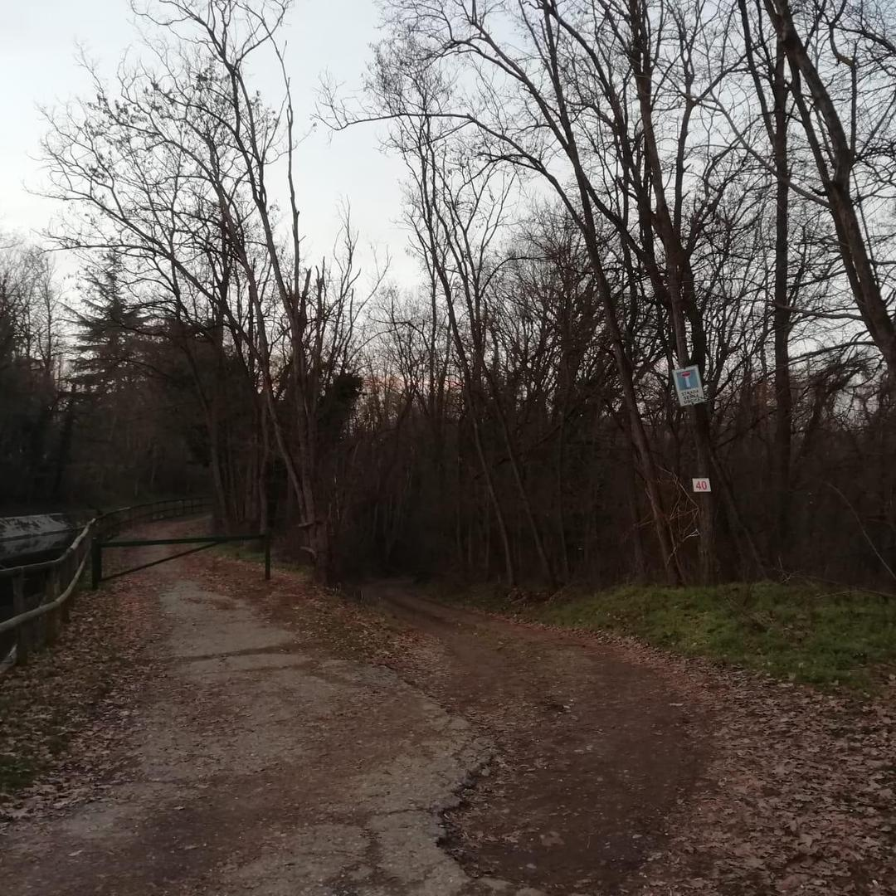<br><a href="mailto:info@ecologiaacustica.org;satorcollettivonoise@gmail.com?subject=PAESAGGIO SONORO --- [segnalazione] --- audio: Uccelli di Rocca Petrella"><i><br>Facci sapere cosa ne pensi di questo audio!</a><audio id="audio_GU_ROCCA_PETRELLA" loop> <source src="dati/GU_ROCCA_PETRELLA/ZOOM0033_elab-converted.mp3" type="audio/mpeg"> </audio></div>`)[0];
            popup_c836ee2d8cc14d279f64256dd986f35e.setContent(html_c7636cb8a8a74d7e99135a0c9abe343f);


        marker_28d1a1584a9141839c46edfade9bedbc.bindPopup(popup_c836ee2d8cc14d279f64256dd986f35e)
marker_28d1a1584a9141839c46edfade9bedbc.on('click', function (e) {this.openPopup(); document.getElementById('audio_GU_ROCCA_PETRELLA').play();});
        ;


            var marker_7bffce84b98e4bf892d2e0e8640c2034 = L.marker(
                [45.307839, 8.860351],
                {}
            );


        var custom_icon_b115894f313b4dc583c2c355ff7b75bc = L.icon({"iconSize": [30, 30], "iconUrl": "https://emojipedia-us.s3.dualstack.us-west-1.amazonaws.com/thumbs/160/microsoft/74/church_26ea.png"});
        marker_7bffce84b98e4bf892d2e0e8640c2034.setIcon(custom_icon_b115894f313b4dc583c2c355ff7b75bc);


        var popup_c1b4cff8db214e79a7fd09f647e7766e = L.popup({"maxWidth": "270"});


            var html_b573613cdbba4b60babe88624d45edc1 = $(`<div id="html_b573613cdbba4b60babe88624d45edc1" style="width: 100.0%; height: 100.0%;"><h1 style = "font-size: 30px;"><b>Chiesa di San Giovanni e Pio</b></h1><br><a href="mailto:info@ecologiaacustica.org;satorcollettivonoise@gmail.com?subject=PAESAGGIO SONORO --- [segnalazione] --- audio: Chiesa di San Giovanni e Pio"><i><br>Facci sapere cosa ne pensi di questo audio!</a><audio id="audio_GU_SANGIOVANNIePIO" loop> <source src="dati/GU_SANGIOVANNIePIO/GU_SANGIOVANNIePIO.mp3" type="audio/mpeg"> </audio></div>`)[0];
            popup_c1b4cff8db214e79a7fd09f647e7766e.setContent(html_b573613cdbba4b60babe88624d45edc1);


        marker_7bffce84b98e4bf892d2e0e8640c2034.bindPopup(popup_c1b4cff8db214e79a7fd09f647e7766e)
marker_7bffce84b98e4bf892d2e0e8640c2034.on('click', function (e) {this.openPopup(); document.getElementById('audio_GU_SANGIOVANNIePIO').play();});
        ;


            var marker_6171d4fd1ab24e5a82a587cea0e827ad = L.marker(
                [45.316643, 8.873883],
                {}
            );


        var custom_icon_732e540070bc46fd9e4a447790d018d4 = L.icon({"iconSize": [30, 30], "iconUrl": "https://emojipedia-us.s3.dualstack.us-west-1.amazonaws.com/thumbs/160/microsoft/74/church_26ea.png"});
        marker_6171d4fd1ab24e5a82a587cea0e827ad.setIcon(custom_icon_732e540070bc46fd9e4a447790d018d4);


        var popup_ca871f393be04a889ac2774cf72381e6 = L.popup({"maxWidth": "270"});


            var html_351b0cbe2c4a469f99b803cceba88063 = $(`<div id="html_351b0cbe2c4a469f99b803cceba88063" style="width: 100.0%; height: 100.0%;"><h1 style = "font-size: 30px;"><b>Chiesa di San Giuseppe</b></h1>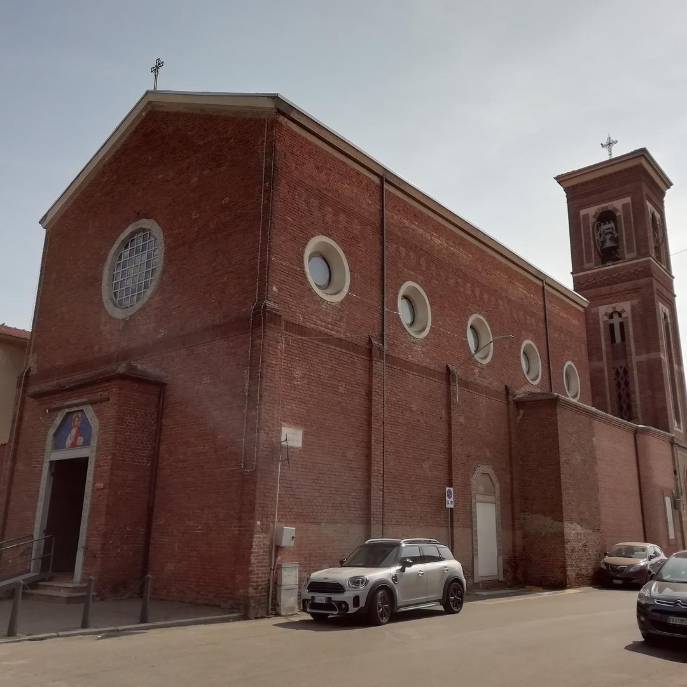<br><a href="mailto:info@ecologiaacustica.org;satorcollettivonoise@gmail.com?subject=PAESAGGIO SONORO --- [segnalazione] --- audio: Chiesa di San Giuseppe"><i><br>Facci sapere cosa ne pensi di questo audio!</a><audio id="audio_GU_SANGIUSEPPE" loop> <source src="dati/GU_SANGIUSEPPE/GU_SANGIUSEPPE.mp3" type="audio/mpeg"> </audio></div>`)[0];
            popup_ca871f393be04a889ac2774cf72381e6.setContent(html_351b0cbe2c4a469f99b803cceba88063);


        marker_6171d4fd1ab24e5a82a587cea0e827ad.bindPopup(popup_ca871f393be04a889ac2774cf72381e6)
marker_6171d4fd1ab24e5a82a587cea0e827ad.on('click', function (e) {this.openPopup(); document.getElementById('audio_GU_SANGIUSEPPE').play();});
        ;


            var marker_953005cebad841138c2446a6389c3db7 = L.marker(
                [45.316287, 8.873868],
                {}
            );


        var custom_icon_d29a8e7e103c4907a8fa03ec26eb3828 = L.icon({"iconSize": [30, 30], "iconUrl": "https://emojipedia-us.s3.dualstack.us-west-1.amazonaws.com/thumbs/160/microsoft/74/bird_1f426.png"});
        marker_953005cebad841138c2446a6389c3db7.setIcon(custom_icon_d29a8e7e103c4907a8fa03ec26eb3828);


        var popup_46db480d258f46149efbc9f7796dad98 = L.popup({"maxWidth": "270"});


            var html_f906ae970e454713a43f3c5db4d9f276 = $(`<div id="html_f906ae970e454713a43f3c5db4d9f276" style="width: 100.0%; height: 100.0%;"><h1 style = "font-size: 30px;"><b>Via San Giuseppe</b></h1>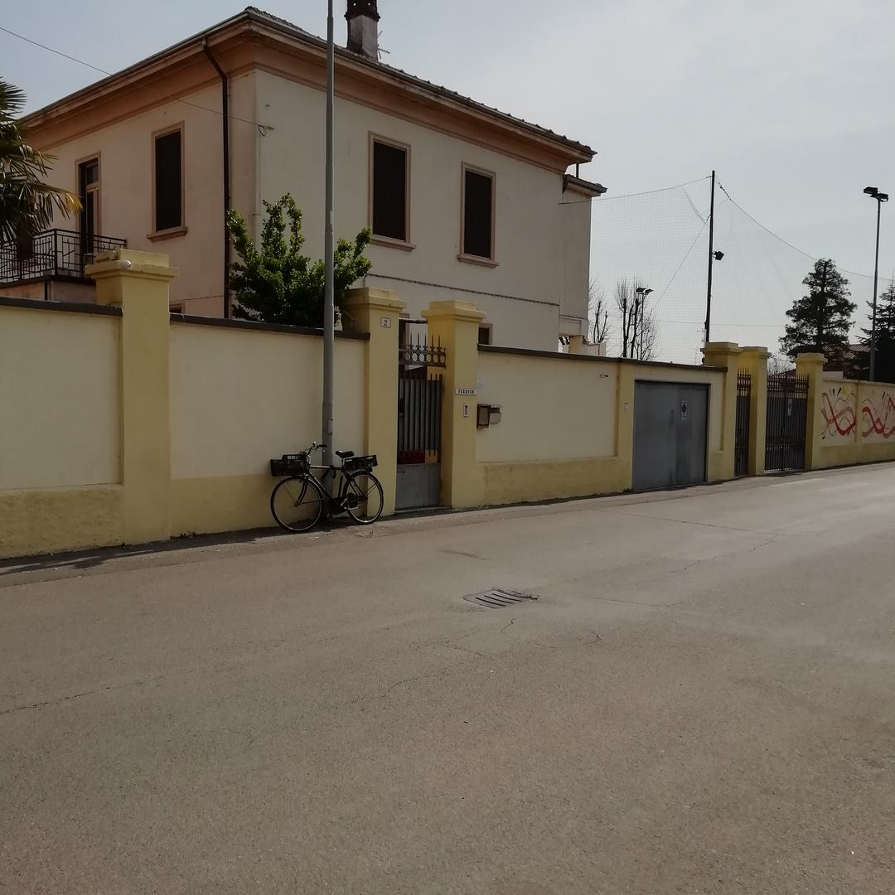<br><a href="mailto:info@ecologiaacustica.org;satorcollettivonoise@gmail.com?subject=PAESAGGIO SONORO --- [segnalazione] --- audio: Via San Giuseppe"><i><br>Facci sapere cosa ne pensi di questo audio!</a><audio id="audio_GU_SANGIUSEPPE_UCCELLINI" loop> <source src="dati/GU_SANGIUSEPPE_UCCELLINI/ZOOM0024_elab-converted.mp3" type="audio/mpeg"> </audio></div>`)[0];
            popup_46db480d258f46149efbc9f7796dad98.setContent(html_f906ae970e454713a43f3c5db4d9f276);


        marker_953005cebad841138c2446a6389c3db7.bindPopup(popup_46db480d258f46149efbc9f7796dad98)
marker_953005cebad841138c2446a6389c3db7.on('click', function (e) {this.openPopup(); document.getElementById('audio_GU_SANGIUSEPPE_UCCELLINI').play();});
        ;


            var marker_de90c821664d4540a8646b275a8d1c35 = L.marker(
                [45.292295, 8.864371],
                {}
            );


        var custom_icon_9f100d04ccc449f3b1f16d954f328a34 = L.icon({"iconSize": [30, 30], "iconUrl": "https://emojipedia-us.s3.dualstack.us-west-1.amazonaws.com/thumbs/160/microsoft/74/cloud_2601.png"});
        marker_de90c821664d4540a8646b275a8d1c35.setIcon(custom_icon_9f100d04ccc449f3b1f16d954f328a34);


        var popup_573e946690e94d6a99c9ce35befd288c = L.popup({"maxWidth": "270"});


            var html_c15d6cb686534c45a3a0d73601c716bf = $(`<div id="html_c15d6cb686534c45a3a0d73601c716bf" style="width: 100.0%; height: 100.0%;"><h1 style = "font-size: 30px;"><b>Marcita</b></h1>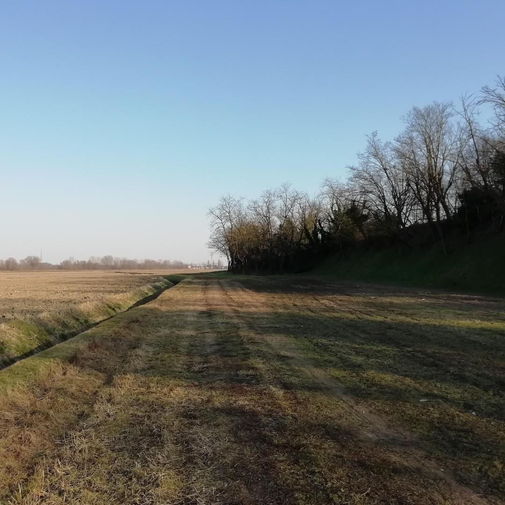<br><a href="mailto:info@ecologiaacustica.org;satorcollettivonoise@gmail.com?subject=PAESAGGIO SONORO --- [segnalazione] --- audio: Marcita"><i><br>Facci sapere cosa ne pensi di questo audio!</a><audio id="audio_GU_SANTA_MARCITA" loop> <source src="dati/GU_SANTA_MARCITA/passi in marcita-converted.mp3" type="audio/mpeg"> </audio></div>`)[0];
            popup_573e946690e94d6a99c9ce35befd288c.setContent(html_c15d6cb686534c45a3a0d73601c716bf);


        marker_de90c821664d4540a8646b275a8d1c35.bindPopup(popup_573e946690e94d6a99c9ce35befd288c)
marker_de90c821664d4540a8646b275a8d1c35.on('click', function (e) {this.openPopup(); document.getElementById('audio_GU_SANTA_MARCITA').play();});
        ;


            var marker_467c1f433c29467daf4d77da74decaab = L.marker(
                [45.306623, 8.860158],
                {}
            );


        var custom_icon_d0a345a44e3744a5b81515f9ef8d4379 = L.icon({"iconSize": [30, 30], "iconUrl": "https://emojipedia-us.s3.dualstack.us-west-1.amazonaws.com/thumbs/160/microsoft/209/people-holding-hands_1f9d1-200d-1f91d-200d-1f9d1.png"});
        marker_467c1f433c29467daf4d77da74decaab.setIcon(custom_icon_d0a345a44e3744a5b81515f9ef8d4379);


        var popup_dd0958cd48c64d4686d68317cf3305f7 = L.popup({"maxWidth": "270"});


            var html_17f2bd57be2a4d7fac5e3de23694d2ff = $(`<div id="html_17f2bd57be2a4d7fac5e3de23694d2ff" style="width: 100.0%; height: 100.0%;"><h1 style = "font-size: 30px;"><b>Skate Park</b></h1>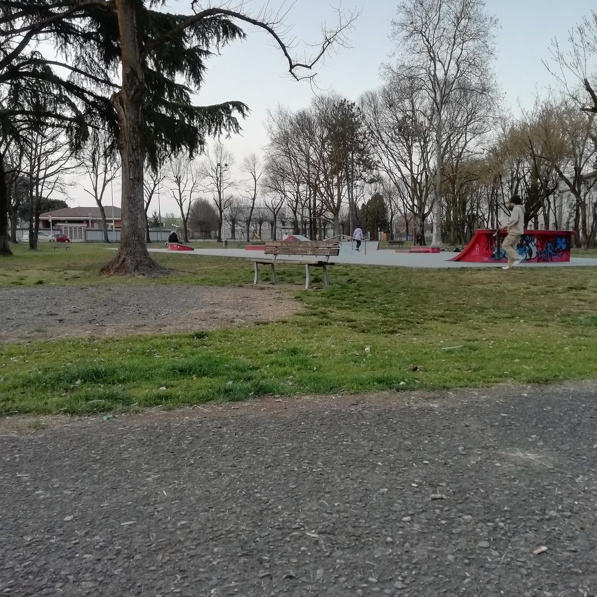<br><a href="mailto:info@ecologiaacustica.org;satorcollettivonoise@gmail.com?subject=PAESAGGIO SONORO --- [segnalazione] --- audio: Skate Park"><i><br>Facci sapere cosa ne pensi di questo audio!</a><audio id="audio_GU_SKATEPARK" loop> <source src="dati/GU_SKATEPARK/skate park2-converted.mp3" type="audio/mpeg"> </audio></div>`)[0];
            popup_dd0958cd48c64d4686d68317cf3305f7.setContent(html_17f2bd57be2a4d7fac5e3de23694d2ff);


        marker_467c1f433c29467daf4d77da74decaab.bindPopup(popup_dd0958cd48c64d4686d68317cf3305f7)
marker_467c1f433c29467daf4d77da74decaab.on('click', function (e) {this.openPopup(); document.getElementById('audio_GU_SKATEPARK').play();});
        ;


            var marker_404185e9029c4269b8a91042342ad693 = L.marker(
                [45.33321272, 8.860613964],
                {}
            );


        var custom_icon_474583ca70aa4bb9abd04c1ec9e3942b = L.icon({"iconSize": [30, 30], "iconUrl": "https://emojipedia-us.s3.dualstack.us-west-1.amazonaws.com/thumbs/160/microsoft/74/cloud_2601.png"});
        marker_404185e9029c4269b8a91042342ad693.setIcon(custom_icon_474583ca70aa4bb9abd04c1ec9e3942b);


        var popup_7d5ca2b6836e4ba591da8b84ae4ff721 = L.popup({"maxWidth": "270"});


            var html_68a6e059e41f4ffba471e0fd9e4534aa = $(`<div id="html_68a6e059e41f4ffba471e0fd9e4534aa" style="width: 100.0%; height: 100.0%;"><h1 style = "font-size: 30px;"><b>Campane lontane a Morabassa</b></h1>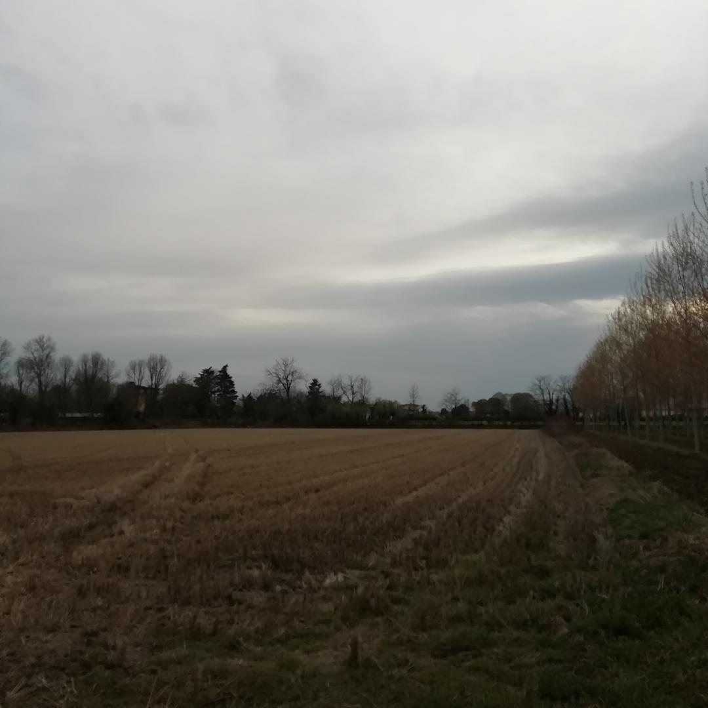<br><a href="mailto:info@ecologiaacustica.org;satorcollettivonoise@gmail.com?subject=PAESAGGIO SONORO --- [segnalazione] --- audio: Campane lontane a Morabassa"><i><br>Facci sapere cosa ne pensi di questo audio!</a><audio id="audio_GU_STRADA_MORABASSA" loop> <source src="dati/GU_STRADA_MORABASSA/ZOOM0032_elab-converted.mp3" type="audio/mpeg"> </audio></div>`)[0];
            popup_7d5ca2b6836e4ba591da8b84ae4ff721.setContent(html_68a6e059e41f4ffba471e0fd9e4534aa);


        marker_404185e9029c4269b8a91042342ad693.bindPopup(popup_7d5ca2b6836e4ba591da8b84ae4ff721)
marker_404185e9029c4269b8a91042342ad693.on('click', function (e) {this.openPopup(); document.getElementById('audio_GU_STRADA_MORABASSA').play();});
        ;


            var marker_49da5de9b09b4cdab819f2950a1e2a15 = L.marker(
                [45.30433837, 8.883231356],
                {}
            );


        var custom_icon_ea7b74079c0141f1b6a750bed5164a89 = L.icon({"iconSize": [30, 30], "iconUrl": "https://emojipedia-us.s3.dualstack.us-west-1.amazonaws.com/thumbs/160/microsoft/74/cloud_2601.png"});
        marker_49da5de9b09b4cdab819f2950a1e2a15.setIcon(custom_icon_ea7b74079c0141f1b6a750bed5164a89);


        var popup_ddda969c8c9243feb3cfee198a45f15c = L.popup({"maxWidth": "270"});


            var html_f18ce3bb2c9348c59d6cc2e91d1a6d42 = $(`<div id="html_f18ce3bb2c9348c59d6cc2e91d1a6d42" style="width: 100.0%; height: 100.0%;"><h1 style = "font-size: 30px;"><b>Strada per la Sforzesca</b></h1>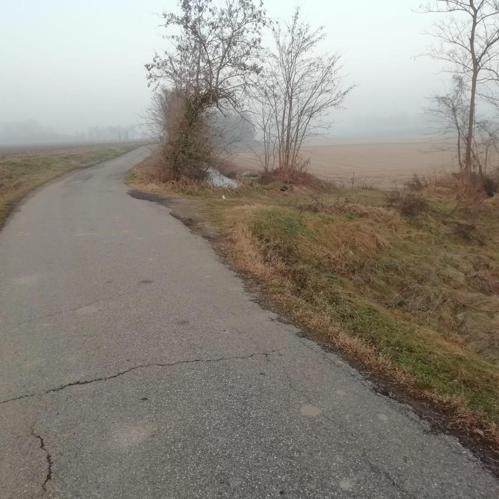<br><a href="mailto:info@ecologiaacustica.org;satorcollettivonoise@gmail.com?subject=PAESAGGIO SONORO --- [segnalazione] --- audio: Strada per la Sforzesca"><i><br>Facci sapere cosa ne pensi di questo audio!</a><audio id="audio_GU_STRADA_REBUFFI" loop> <source src="dati/GU_STRADA_REBUFFI/ZOOM0024_elab-converted.mp3" type="audio/mpeg"> </audio></div>`)[0];
            popup_ddda969c8c9243feb3cfee198a45f15c.setContent(html_f18ce3bb2c9348c59d6cc2e91d1a6d42);


        marker_49da5de9b09b4cdab819f2950a1e2a15.bindPopup(popup_ddda969c8c9243feb3cfee198a45f15c)
marker_49da5de9b09b4cdab819f2950a1e2a15.on('click', function (e) {this.openPopup(); document.getElementById('audio_GU_STRADA_REBUFFI').play();});
        ;


            var marker_10472a9ff07a4c148a5d6c8ec9572dfb = L.marker(
                [45.29236968, 8.884778005],
                {}
            );


        var custom_icon_1e7bcb4ba7754bd0b1463ba104d88496 = L.icon({"iconSize": [30, 30], "iconUrl": "https://emojipedia-us.s3.dualstack.us-west-1.amazonaws.com/thumbs/160/microsoft/74/cloud_2601.png"});
        marker_10472a9ff07a4c148a5d6c8ec9572dfb.setIcon(custom_icon_1e7bcb4ba7754bd0b1463ba104d88496);


        var popup_ef00de7c624447d980396d6bf0900724 = L.popup({"maxWidth": "270"});


            var html_9daccf0c436f40af91c7672cc7f77569 = $(`<div id="html_9daccf0c436f40af91c7672cc7f77569" style="width: 100.0%; height: 100.0%;"><h1 style = "font-size: 30px;"><b>Cimitero musicale</b></h1>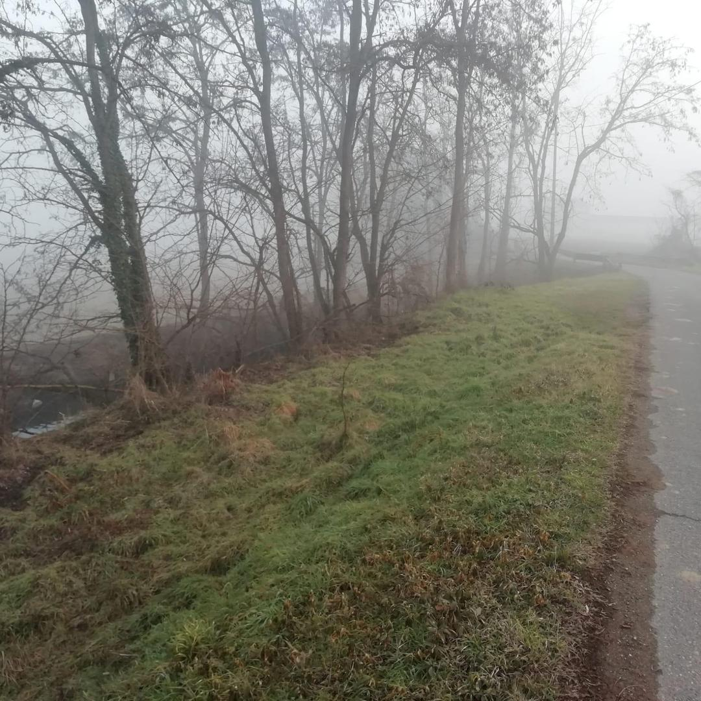<br><a href="mailto:info@ecologiaacustica.org;satorcollettivonoise@gmail.com?subject=PAESAGGIO SONORO --- [segnalazione] --- audio: Cimitero musicale"><i><br>Facci sapere cosa ne pensi di questo audio!</a><audio id="audio_GU_STRADA_REBUFFI_v3" loop> <source src="dati/GU_STRADA_REBUFFI_v3/ZOOM0028_elab-converted.mp3" type="audio/mpeg"> </audio></div>`)[0];
            popup_ef00de7c624447d980396d6bf0900724.setContent(html_9daccf0c436f40af91c7672cc7f77569);


        marker_10472a9ff07a4c148a5d6c8ec9572dfb.bindPopup(popup_ef00de7c624447d980396d6bf0900724)
marker_10472a9ff07a4c148a5d6c8ec9572dfb.on('click', function (e) {this.openPopup(); document.getElementById('audio_GU_STRADA_REBUFFI_v3').play();});
        ;


            var marker_45aa76aac6fa47f58a71339ea29ba29b = L.marker(
                [45.34054176, 8.878860663],
                {}
            );


        var custom_icon_82438fdd256c4a0996dd11b733b1a567 = L.icon({"iconSize": [30, 30], "iconUrl": "https://emojipedia-us.s3.dualstack.us-west-1.amazonaws.com/thumbs/160/microsoft/74/water-wave_1f30a.png"});
        marker_45aa76aac6fa47f58a71339ea29ba29b.setIcon(custom_icon_82438fdd256c4a0996dd11b733b1a567);


        var popup_0f45d8dea4be415e962cbbe3a122d9c4 = L.popup({"maxWidth": "270"});


            var html_ad56a40eb3d14212b1ede61e98417074 = $(`<div id="html_ad56a40eb3d14212b1ede61e98417074" style="width: 100.0%; height: 100.0%;"><h1 style = "font-size: 30px;"><b>Sotto il ponte</b></h1>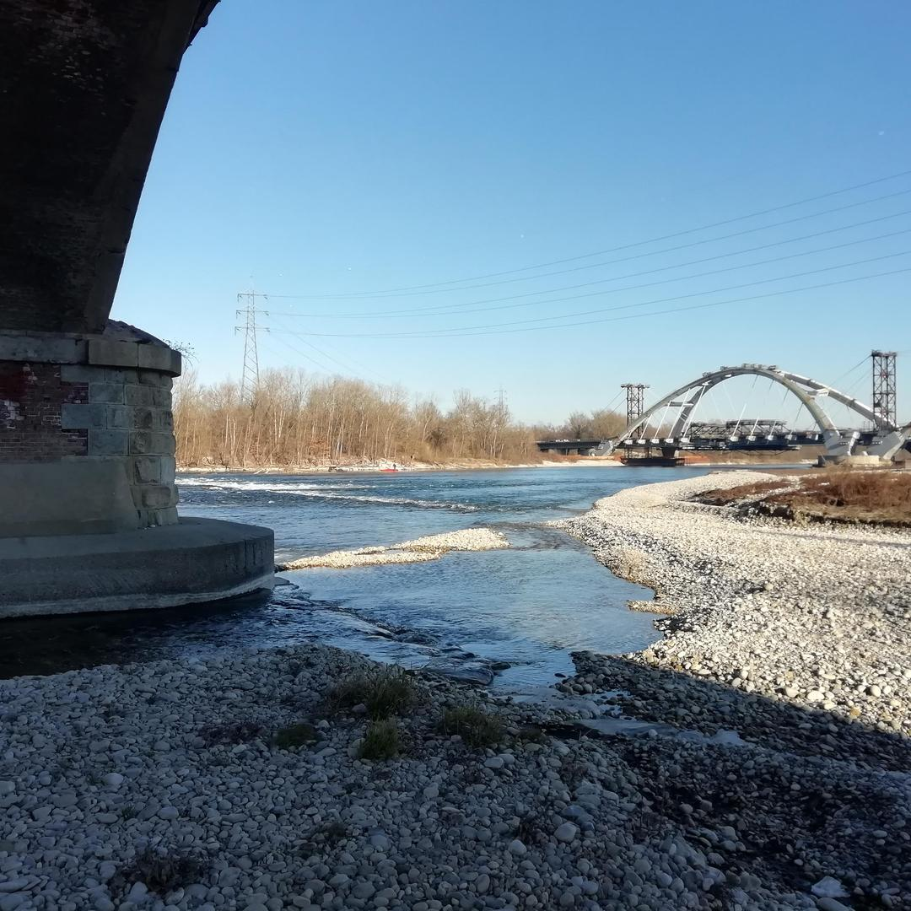<br><a href="mailto:info@ecologiaacustica.org;satorcollettivonoise@gmail.com?subject=PAESAGGIO SONORO --- [segnalazione] --- audio: Sotto il ponte"><i><br>Facci sapere cosa ne pensi di questo audio!</a><audio id="audio_GU_TICINO_v2" loop> <source src="dati/GU_TICINO_v2/ZOOM0025_elab-converted.mp3" type="audio/mpeg"> </audio></div>`)[0];
            popup_0f45d8dea4be415e962cbbe3a122d9c4.setContent(html_ad56a40eb3d14212b1ede61e98417074);


        marker_45aa76aac6fa47f58a71339ea29ba29b.bindPopup(popup_0f45d8dea4be415e962cbbe3a122d9c4)
marker_45aa76aac6fa47f58a71339ea29ba29b.on('click', function (e) {this.openPopup(); document.getElementById('audio_GU_TICINO_v2').play();});
        ;


            var marker_cdf1d69c825e4c32a29813323dbf2620 = L.marker(
                [45.34069404, 8.878451395],
                {}
            );


        var custom_icon_9acd754c031f488c901f06903091ee99 = L.icon({"iconSize": [30, 30], "iconUrl": "https://emojipedia-us.s3.dualstack.us-west-1.amazonaws.com/thumbs/160/microsoft/74/water-wave_1f30a.png"});
        marker_cdf1d69c825e4c32a29813323dbf2620.setIcon(custom_icon_9acd754c031f488c901f06903091ee99);


        var popup_42481a7275c24111aa02d5843dec82b5 = L.popup({"maxWidth": "270"});


            var html_278a9b78e0354e85b62f03b84a2e2780 = $(`<div id="html_278a9b78e0354e85b62f03b84a2e2780" style="width: 100.0%; height: 100.0%;"><h1 style = "font-size: 30px;"><b>Fiume azzurro</b></h1>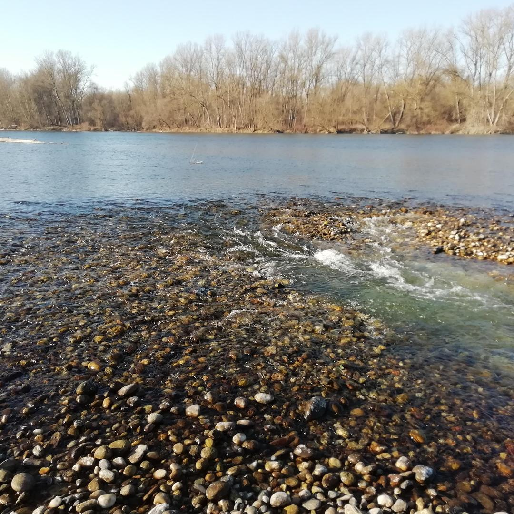<br><a href="mailto:info@ecologiaacustica.org;satorcollettivonoise@gmail.com?subject=PAESAGGIO SONORO --- [segnalazione] --- audio: Fiume azzurro"><i><br>Facci sapere cosa ne pensi di questo audio!</a><audio id="audio_GU_TICINO_v3" loop> <source src="dati/GU_TICINO_v3/ZOOM0026_elab-converted.mp3" type="audio/mpeg"> </audio></div>`)[0];
            popup_42481a7275c24111aa02d5843dec82b5.setContent(html_278a9b78e0354e85b62f03b84a2e2780);


        marker_cdf1d69c825e4c32a29813323dbf2620.bindPopup(popup_42481a7275c24111aa02d5843dec82b5)
marker_cdf1d69c825e4c32a29813323dbf2620.on('click', function (e) {this.openPopup(); document.getElementById('audio_GU_TICINO_v3').play();});
        ;


            var marker_0f98e08c48ca414690f0c415b5c82930 = L.marker(
                [45.33987551, 8.88500919],
                {}
            );


        var custom_icon_4dc2cc82ba39426e8402e8d61a242274 = L.icon({"iconSize": [30, 30], "iconUrl": "https://emojipedia-us.s3.dualstack.us-west-1.amazonaws.com/thumbs/160/microsoft/153/swan_1f9a2.png"});
        marker_0f98e08c48ca414690f0c415b5c82930.setIcon(custom_icon_4dc2cc82ba39426e8402e8d61a242274);


        var popup_98bb65aef9db42f58254ccb2711c99f6 = L.popup({"maxWidth": "270"});


            var html_567f088e85124333b22fe1d58057afc0 = $(`<div id="html_567f088e85124333b22fe1d58057afc0" style="width: 100.0%; height: 100.0%;"><h1 style = "font-size: 30px;"><b>Cigni</b></h1>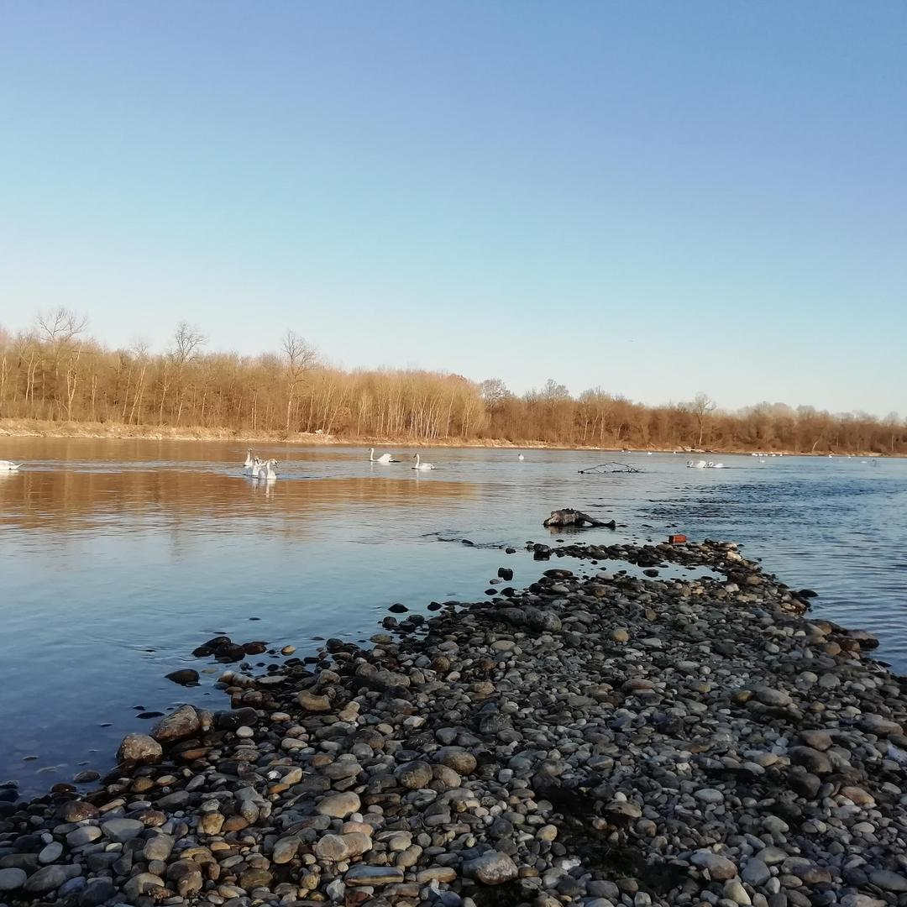<br><a href="mailto:info@ecologiaacustica.org;satorcollettivonoise@gmail.com?subject=PAESAGGIO SONORO --- [segnalazione] --- audio: Cigni"><i><br>Facci sapere cosa ne pensi di questo audio!</a><audio id="audio_GU_TICINO_v4" loop> <source src="dati/GU_TICINO_v4/cigni elab puliti-converted.mp3" type="audio/mpeg"> </audio></div>`)[0];
            popup_98bb65aef9db42f58254ccb2711c99f6.setContent(html_567f088e85124333b22fe1d58057afc0);


        marker_0f98e08c48ca414690f0c415b5c82930.bindPopup(popup_98bb65aef9db42f58254ccb2711c99f6)
marker_0f98e08c48ca414690f0c415b5c82930.on('click', function (e) {this.openPopup(); document.getElementById('audio_GU_TICINO_v4').play();});
        ;


            var marker_f97a4a23c01142478562f45b4cee4c5a = L.marker(
                [45.311018, 8.860711],
                {}
            );


        var custom_icon_b9a5466a86654737a6420de374b9ace2 = L.icon({"iconSize": [30, 30], "iconUrl": "https://emojipedia-us.s3.dualstack.us-west-1.amazonaws.com/thumbs/160/microsoft/74/train_1f686.png"});
        marker_f97a4a23c01142478562f45b4cee4c5a.setIcon(custom_icon_b9a5466a86654737a6420de374b9ace2);


        var popup_8c2aa85ce8d34fbdb35afd6b883a9842 = L.popup({"maxWidth": "270"});


            var html_ff0116decd41475c9277715f671f3912 = $(`<div id="html_ff0116decd41475c9277715f671f3912" style="width: 100.0%; height: 100.0%;"><h1 style = "font-size: 30px;"><b>Treno per Mortara</b></h1>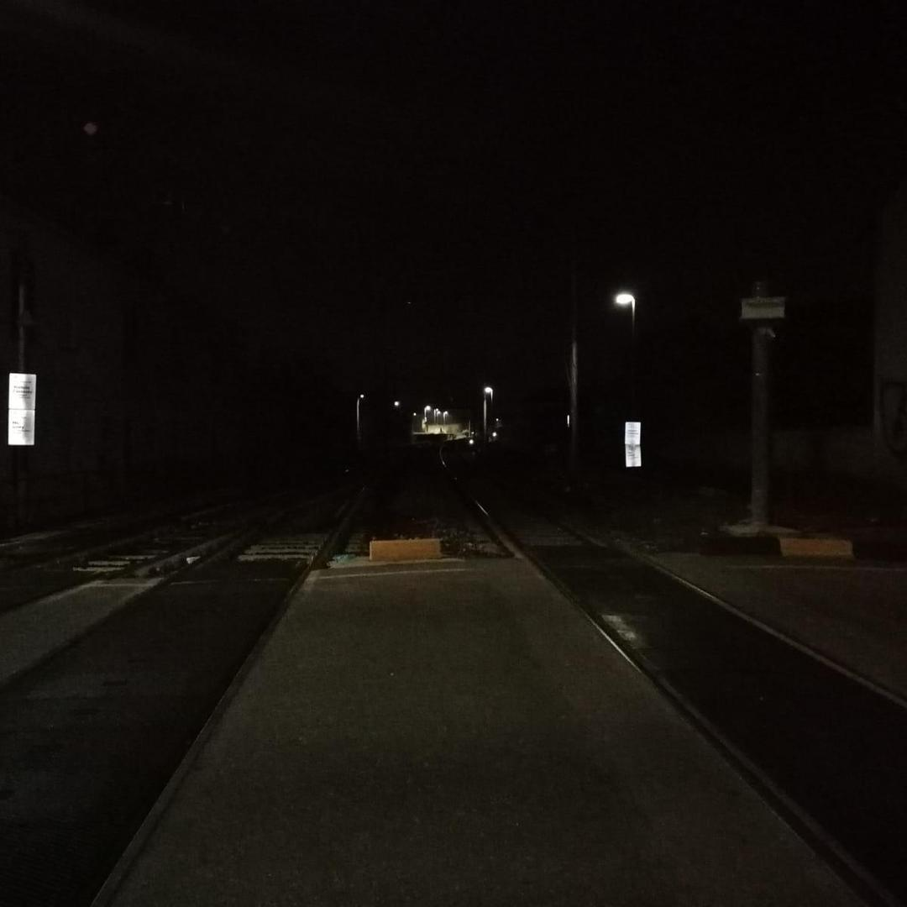<br><a href="mailto:info@ecologiaacustica.org;satorcollettivonoise@gmail.com?subject=PAESAGGIO SONORO --- [segnalazione] --- audio: Treno per Mortara"><i><br>Facci sapere cosa ne pensi di questo audio!</a><audio id="audio_GU_TRENO_BERCLEDA" loop> <source src="dati/GU_TRENO_BERCLEDA/treno belcreda.mp3" type="audio/mpeg"> </audio></div>`)[0];
            popup_8c2aa85ce8d34fbdb35afd6b883a9842.setContent(html_ff0116decd41475c9277715f671f3912);


        marker_f97a4a23c01142478562f45b4cee4c5a.bindPopup(popup_8c2aa85ce8d34fbdb35afd6b883a9842)
marker_f97a4a23c01142478562f45b4cee4c5a.on('click', function (e) {this.openPopup(); document.getElementById('audio_GU_TRENO_BERCLEDA').play();});
        ;


            var marker_5241feefd46847cf81cccf8d785202f7 = L.marker(
                [45.325817, 8.869737],
                {}
            );


        var custom_icon_fcffa48cb9c142ed9e236b932500c185 = L.icon({"iconSize": [30, 30], "iconUrl": "https://emojipedia-us.s3.dualstack.us-west-1.amazonaws.com/thumbs/160/microsoft/74/train_1f686.png"});
        marker_5241feefd46847cf81cccf8d785202f7.setIcon(custom_icon_fcffa48cb9c142ed9e236b932500c185);


        var popup_079ad41f58e645af955069e47ea400e7 = L.popup({"maxWidth": "270"});


            var html_961cbe5aafdc4745b3a314419a16fd98 = $(`<div id="html_961cbe5aafdc4745b3a314419a16fd98" style="width: 100.0%; height: 100.0%;"><h1 style = "font-size: 30px;"><b>Cavalcavia del cimitero</b></h1>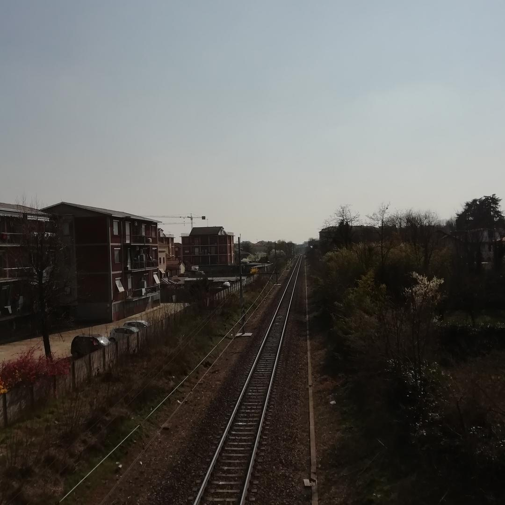<br><a href="mailto:info@ecologiaacustica.org;satorcollettivonoise@gmail.com?subject=PAESAGGIO SONORO --- [segnalazione] --- audio: Cavalcavia del cimitero"><i><br>Facci sapere cosa ne pensi di questo audio!</a><audio id="audio_GU_TRENO_CIMITERO" loop> <source src="dati/GU_TRENO_CIMITERO/ZOOM0033_elab-converted.mp3" type="audio/mpeg"> </audio></div>`)[0];
            popup_079ad41f58e645af955069e47ea400e7.setContent(html_961cbe5aafdc4745b3a314419a16fd98);


        marker_5241feefd46847cf81cccf8d785202f7.bindPopup(popup_079ad41f58e645af955069e47ea400e7)
marker_5241feefd46847cf81cccf8d785202f7.on('click', function (e) {this.openPopup(); document.getElementById('audio_GU_TRENO_CIMITERO').play();});
        ;


            var marker_70a6b9074cb54268b4a559870ceabbeb = L.marker(
                [45.316204, 8.864677],
                {}
            );


        var custom_icon_e82e66bbf2554f42b7fb9d59420399e0 = L.icon({"iconSize": [30, 30], "iconUrl": "https://emojipedia-us.s3.dualstack.us-west-1.amazonaws.com/thumbs/160/microsoft/74/train_1f686.png"});
        marker_70a6b9074cb54268b4a559870ceabbeb.setIcon(custom_icon_e82e66bbf2554f42b7fb9d59420399e0);


        var popup_8fd1e4e02857422fab665be85be47d47 = L.popup({"maxWidth": "270"});


            var html_87d7180e072e497e85e371ef7cee5976 = $(`<div id="html_87d7180e072e497e85e371ef7cee5976" style="width: 100.0%; height: 100.0%;"><h1 style = "font-size: 30px;"><b>Treno per Milano</b></h1>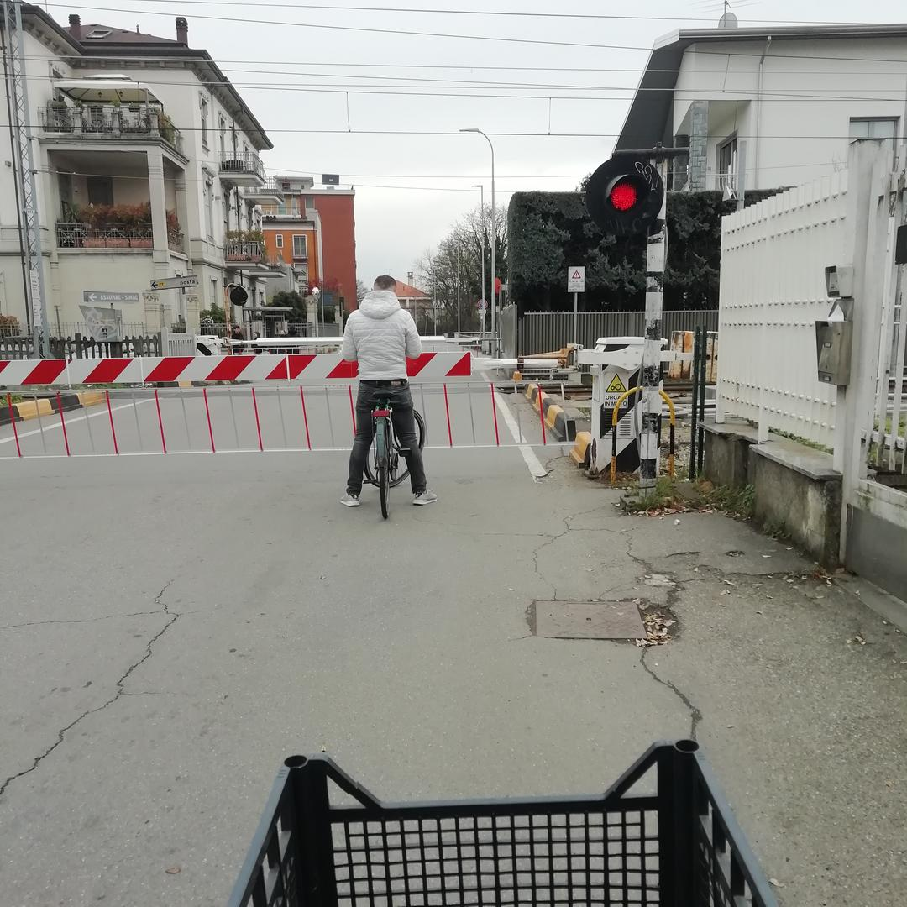<br><a href="mailto:info@ecologiaacustica.org;satorcollettivonoise@gmail.com?subject=PAESAGGIO SONORO --- [segnalazione] --- audio: Treno per Milano"><i><br>Facci sapere cosa ne pensi di questo audio!</a><audio id="audio_GU_TRENO_FERRARI" loop> <source src="dati/GU_TRENO_FERRARI/treno ferrari.mp3" type="audio/mpeg"> </audio></div>`)[0];
            popup_8fd1e4e02857422fab665be85be47d47.setContent(html_87d7180e072e497e85e371ef7cee5976);


        marker_70a6b9074cb54268b4a559870ceabbeb.bindPopup(popup_8fd1e4e02857422fab665be85be47d47)
marker_70a6b9074cb54268b4a559870ceabbeb.on('click', function (e) {this.openPopup(); document.getElementById('audio_GU_TRENO_FERRARI').play();});
        ;


            var marker_0d1fa9f430cf4d5eb2217c789f23290d = L.marker(
                [45.3064081, 8.866924562],
                {}
            );


        var custom_icon_5a735f98db61458ba6966fc161c3ec52 = L.icon({"iconSize": [30, 30], "iconUrl": "https://emojipedia-us.s3.dualstack.us-west-1.amazonaws.com/thumbs/160/microsoft/74/water-wave_1f30a.png"});
        marker_0d1fa9f430cf4d5eb2217c789f23290d.setIcon(custom_icon_5a735f98db61458ba6966fc161c3ec52);


        var popup_05d58a0e7d6249778034c748e8d6a31d = L.popup({"maxWidth": "270"});


            var html_4248e1c10e1444a09baf5384df142cfa = $(`<div id="html_4248e1c10e1444a09baf5384df142cfa" style="width: 100.0%; height: 100.0%;"><h1 style = "font-size: 30px;"><b>Canale in via De Chirico</b></h1>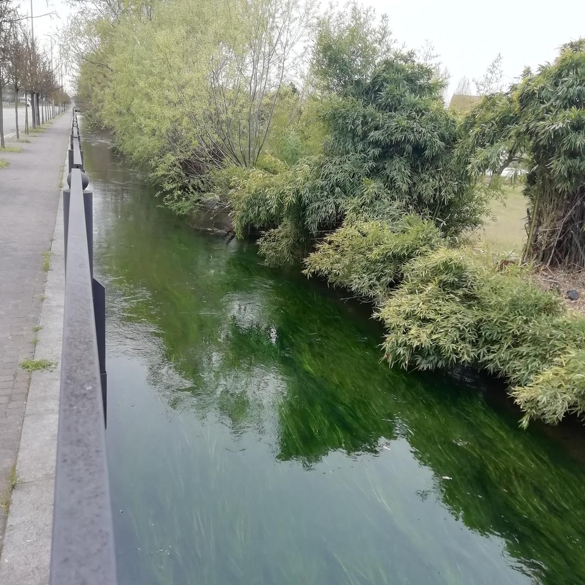<br><a href="mailto:info@ecologiaacustica.org;satorcollettivonoise@gmail.com?subject=PAESAGGIO SONORO --- [segnalazione] --- audio: Canale in via De Chirico"><i><br>Facci sapere cosa ne pensi di questo audio!</a><audio id="audio_GU_VIA_DE_CHIRICO_CANALE_v2" loop> <source src="dati/GU_VIA_DE_CHIRICO_CANALE_v2/ZOOM0029_elab-converted.mp3" type="audio/mpeg"> </audio></div>`)[0];
            popup_05d58a0e7d6249778034c748e8d6a31d.setContent(html_4248e1c10e1444a09baf5384df142cfa);


        marker_0d1fa9f430cf4d5eb2217c789f23290d.bindPopup(popup_05d58a0e7d6249778034c748e8d6a31d)
marker_0d1fa9f430cf4d5eb2217c789f23290d.on('click', function (e) {this.openPopup(); document.getElementById('audio_GU_VIA_DE_CHIRICO_CANALE_v2').play();});
        ;


            var marker_49b6dff830c240f4bb6a136f60094001 = L.marker(
                [45.313838, 8.883707],
                {}
            );


        var custom_icon_573e2d4138c646b19606649beaa37698 = L.icon({"iconSize": [30, 30], "iconUrl": "https://emojipedia-us.s3.dualstack.us-west-1.amazonaws.com/thumbs/160/microsoft/74/gear_2699.png"});
        marker_49b6dff830c240f4bb6a136f60094001.setIcon(custom_icon_573e2d4138c646b19606649beaa37698);


        var popup_8b517c15b29a4e0c802c9843509503ed = L.popup({"maxWidth": "270"});


            var html_5c96598ced9b418191e07124495d87d4 = $(`<div id="html_5c96598ced9b418191e07124495d87d4" style="width: 100.0%; height: 100.0%;"><h1 style = "font-size: 30px;"><b>Via Montebello</b></h1>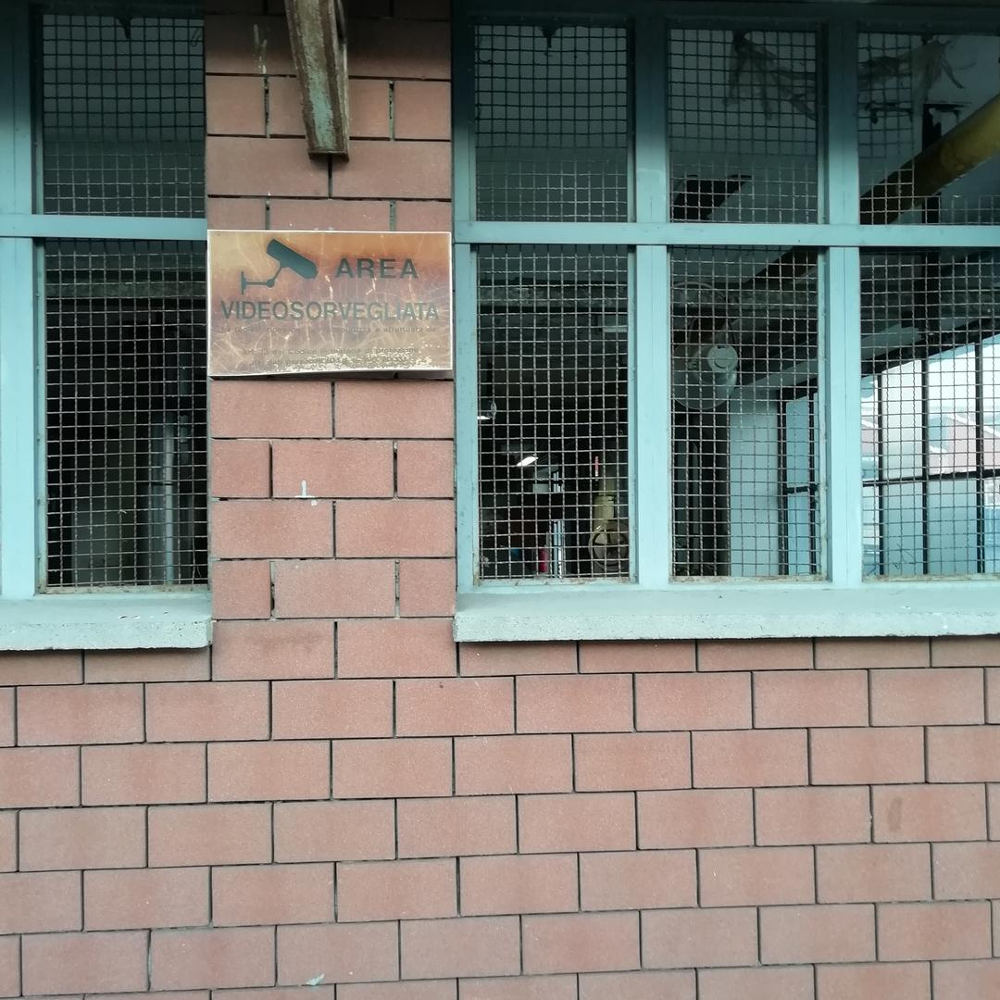<br><a href="mailto:info@ecologiaacustica.org;satorcollettivonoise@gmail.com?subject=PAESAGGIO SONORO --- [segnalazione] --- audio: Via Montebello"><i><br>Facci sapere cosa ne pensi di questo audio!</a><audio id="audio_GU_VIA_MONTEBELLO" loop> <source src="dati/GU_VIA_MONTEBELLO/pressa_montebello.mp3" type="audio/mpeg"> </audio></div>`)[0];
            popup_8b517c15b29a4e0c802c9843509503ed.setContent(html_5c96598ced9b418191e07124495d87d4);


        marker_49b6dff830c240f4bb6a136f60094001.bindPopup(popup_8b517c15b29a4e0c802c9843509503ed)
marker_49b6dff830c240f4bb6a136f60094001.on('click', function (e) {this.openPopup(); document.getElementById('audio_GU_VIA_MONTEBELLO').play();});
        ;


            var marker_ea86a507fbe04ab5872990a43ce430b2 = L.marker(
                [45.325631, 8.853339],
                {}
            );


        var custom_icon_517c44c6bf90473eb04283a15e419c62 = L.icon({"iconSize": [30, 30], "iconUrl": "https://emojipedia-us.s3.dualstack.us-west-1.amazonaws.com/thumbs/160/microsoft/74/dog_1f415.png"});
        marker_ea86a507fbe04ab5872990a43ce430b2.setIcon(custom_icon_517c44c6bf90473eb04283a15e419c62);


        var popup_cdc1908eb5714aaeb35d4216af24a76e = L.popup({"maxWidth": "270"});


            var html_fecc091c9b02450886b17baf18b7e85a = $(`<div id="html_fecc091c9b02450886b17baf18b7e85a" style="width: 100.0%; height: 100.0%;"><h1 style = "font-size: 30px;"><b>Labrador Nero</b></h1>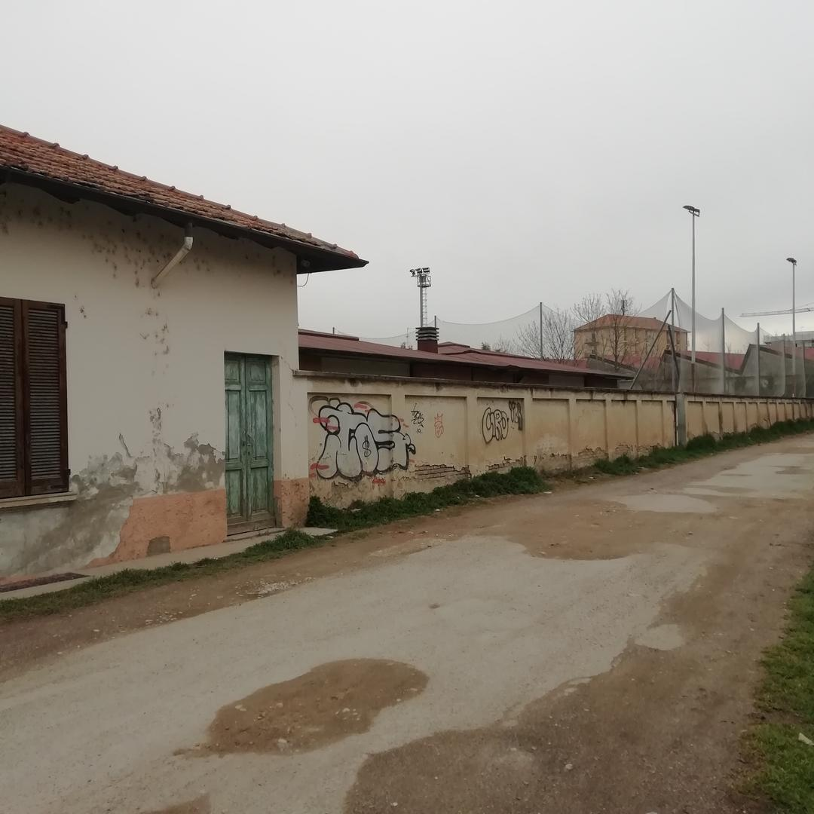<br><a href="mailto:info@ecologiaacustica.org;satorcollettivonoise@gmail.com?subject=PAESAGGIO SONORO --- [segnalazione] --- audio: Labrador Nero"><i><br>Facci sapere cosa ne pensi di questo audio!</a><audio id="audio_GU_VIALE_MONTEGRAPPA_CANE" loop> <source src="dati/GU_VIALE_MONTEGRAPPA_CANE/ZOOM0030_elab-converted.mp3" type="audio/mpeg"> </audio></div>`)[0];
            popup_cdc1908eb5714aaeb35d4216af24a76e.setContent(html_fecc091c9b02450886b17baf18b7e85a);


        marker_ea86a507fbe04ab5872990a43ce430b2.bindPopup(popup_cdc1908eb5714aaeb35d4216af24a76e)
marker_ea86a507fbe04ab5872990a43ce430b2.on('click', function (e) {this.openPopup(); document.getElementById('audio_GU_VIALE_MONTEGRAPPA_CANE').play();});
        ;


            var marker_6df1c9d16ab6430ebaa01676e763dbf9 = L.marker(
                [45.3230625, 8.850245651],
                {}
            );


        var custom_icon_2d7edc5f852b491fb02562be1f5cea17 = L.icon({"iconSize": [30, 30], "iconUrl": "https://emojipedia-us.s3.dualstack.us-west-1.amazonaws.com/thumbs/160/microsoft/74/motor-scooter_1f6f5.png"});
        marker_6df1c9d16ab6430ebaa01676e763dbf9.setIcon(custom_icon_2d7edc5f852b491fb02562be1f5cea17);


        var popup_5b0bf3f5756c4bdf8489544da79162d2 = L.popup({"maxWidth": "270"});


            var html_49af9df67a124147a70c9503d5a5c133 = $(`<div id="html_49af9df67a124147a70c9503d5a5c133" style="width: 100.0%; height: 100.0%;"><h1 style = "font-size: 30px;"><b>Consegna</b></h1>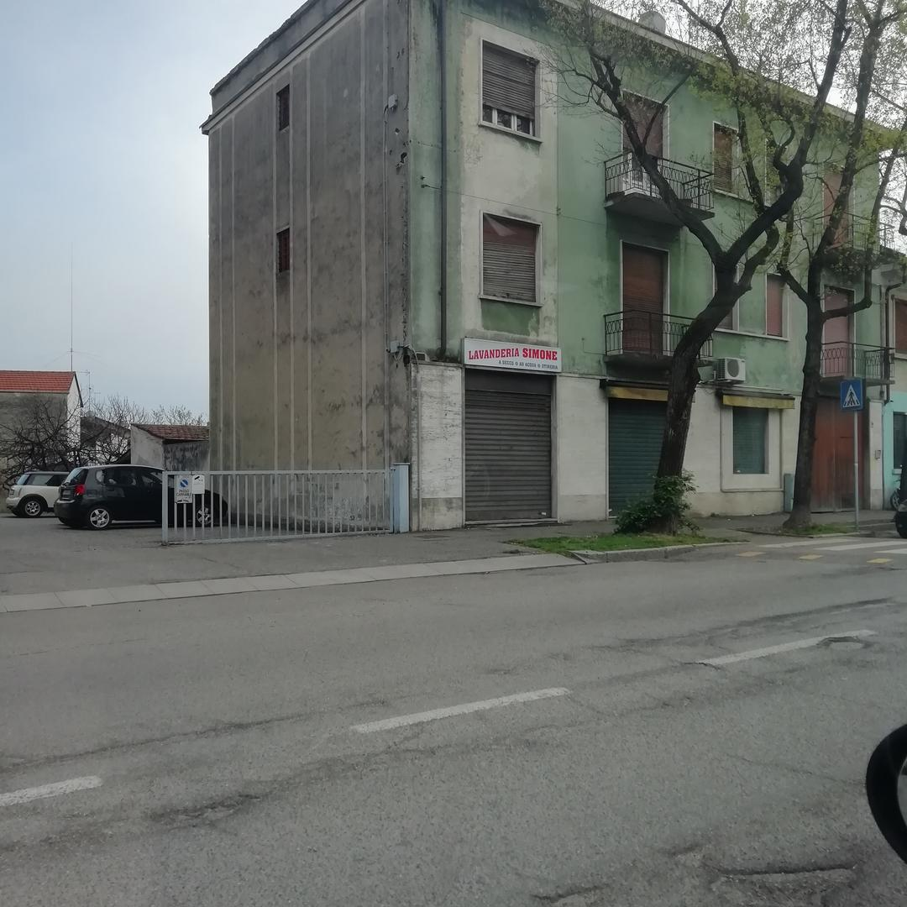<br><a href="mailto:info@ecologiaacustica.org;satorcollettivonoise@gmail.com?subject=PAESAGGIO SONORO --- [segnalazione] --- audio: Consegna"><i><br>Facci sapere cosa ne pensi di questo audio!</a><audio id="audio_GU_VIALE_MONTEGRAPPA_PIZZERIA" loop> <source src="dati/GU_VIALE_MONTEGRAPPA_PIZZERIA/pizzeria_elab-converted.mp3" type="audio/mpeg"> </audio></div>`)[0];
            popup_5b0bf3f5756c4bdf8489544da79162d2.setContent(html_49af9df67a124147a70c9503d5a5c133);


        marker_6df1c9d16ab6430ebaa01676e763dbf9.bindPopup(popup_5b0bf3f5756c4bdf8489544da79162d2)
marker_6df1c9d16ab6430ebaa01676e763dbf9.on('click', function (e) {this.openPopup(); document.getElementById('audio_GU_VIALE_MONTEGRAPPA_PIZZERIA').play();});
        ;


            var marker_a3d97a10a76143da94af9b78f54fb8e1 = L.marker(
                [45.299852, 8.855601],
                {}
            );


        var custom_icon_6799685175574fa5b19231e1ef616227 = L.icon({"iconSize": [30, 30], "iconUrl": "https://emojipedia-us.s3.dualstack.us-west-1.amazonaws.com/thumbs/160/microsoft/74/automobile_1f697.png"});
        marker_a3d97a10a76143da94af9b78f54fb8e1.setIcon(custom_icon_6799685175574fa5b19231e1ef616227);


        var popup_f7dc1965568c4beebed8dff7cf673dce = L.popup({"maxWidth": "270"});


            var html_a4ba81f8d4d64ddaa2df817d1e397f35 = $(`<div id="html_a4ba81f8d4d64ddaa2df817d1e397f35" style="width: 100.0%; height: 100.0%;"><h1 style = "font-size: 30px;"><b>Cavalcavia viale Commercio</b></h1><br><a href="mailto:info@ecologiaacustica.org;satorcollettivonoise@gmail.com?subject=PAESAGGIO SONORO --- [segnalazione] --- audio: Cavalcavia viale Commercio"><i><br>Facci sapere cosa ne pensi di questo audio!</a><audio id="audio_MA_45.299852,8.855601 CAVALCAVIA V.LE COMMERCIO" loop> <source src="dati/MA_45.299852,8.855601 CAVALCAVIA V.LE COMMERCIO/45.299852,8.855601 CAVALCAVIA V.LE COMMERCIO-converted.mp3" type="audio/mpeg"> </audio></div>`)[0];
            popup_f7dc1965568c4beebed8dff7cf673dce.setContent(html_a4ba81f8d4d64ddaa2df817d1e397f35);


        marker_a3d97a10a76143da94af9b78f54fb8e1.bindPopup(popup_f7dc1965568c4beebed8dff7cf673dce)
marker_a3d97a10a76143da94af9b78f54fb8e1.on('click', function (e) {this.openPopup(); document.getElementById('audio_MA_45.299852,8.855601 CAVALCAVIA V.LE COMMERCIO').play();});
        ;


            var marker_943fdb4481884baca8027fdd90fd43bb = L.marker(
                [45.303684, 8.864683],
                {}
            );


        var custom_icon_4d0c649c7f6848cba0d5d318f3598293 = L.icon({"iconSize": [30, 30], "iconUrl": "https://emojipedia-us.s3.dualstack.us-west-1.amazonaws.com/thumbs/160/microsoft/74/cloud_2601.png"});
        marker_943fdb4481884baca8027fdd90fd43bb.setIcon(custom_icon_4d0c649c7f6848cba0d5d318f3598293);


        var popup_9617c52daa4243abbbc56fc58fa39b09 = L.popup({"maxWidth": "270"});


            var html_7b08607177de4207a57f1641f35b4dfc = $(`<div id="html_7b08607177de4207a57f1641f35b4dfc" style="width: 100.0%; height: 100.0%;"><h1 style = "font-size: 30px;"><b>Z.I.</b></h1><br><a href="mailto:info@ecologiaacustica.org;satorcollettivonoise@gmail.com?subject=PAESAGGIO SONORO --- [segnalazione] --- audio: Z.I."><i><br>Facci sapere cosa ne pensi di questo audio!</a><audio id="audio_MA_45.303684,8.864683 Z.I. 1" loop> <source src="dati/MA_45.303684,8.864683 Z.I. 1/rumore al secondo 49-converted.mp3" type="audio/mpeg"> </audio></div>`)[0];
            popup_9617c52daa4243abbbc56fc58fa39b09.setContent(html_7b08607177de4207a57f1641f35b4dfc);


        marker_943fdb4481884baca8027fdd90fd43bb.bindPopup(popup_9617c52daa4243abbbc56fc58fa39b09)
marker_943fdb4481884baca8027fdd90fd43bb.on('click', function (e) {this.openPopup(); document.getElementById('audio_MA_45.303684,8.864683 Z.I. 1').play();});
        ;


            var marker_6cb07e35f2664168ad39ffebf532488c = L.marker(
                [45.304215, 8.86764],
                {}
            );


        var custom_icon_63650315f7dd4787b5492e6d15a8bb8e = L.icon({"iconSize": [30, 30], "iconUrl": "https://emojipedia-us.s3.dualstack.us-west-1.amazonaws.com/thumbs/160/microsoft/74/cloud_2601.png"});
        marker_6cb07e35f2664168ad39ffebf532488c.setIcon(custom_icon_63650315f7dd4787b5492e6d15a8bb8e);


        var popup_7be3c361366448408d2f42fba5e438a7 = L.popup({"maxWidth": "270"});


            var html_18e891b4260844e8b88267b2385f67d0 = $(`<div id="html_18e891b4260844e8b88267b2385f67d0" style="width: 100.0%; height: 100.0%;"><h1 style = "font-size: 30px;"><b>Z.I.</b></h1><br><a href="mailto:info@ecologiaacustica.org;satorcollettivonoise@gmail.com?subject=PAESAGGIO SONORO --- [segnalazione] --- audio: Z.I."><i><br>Facci sapere cosa ne pensi di questo audio!</a><audio id="audio_MA_45.304215,8.867640 Z.I. 2" loop> <source src="dati/MA_45.304215,8.867640 Z.I. 2/ZI2-converted.mp3" type="audio/mpeg"> </audio></div>`)[0];
            popup_7be3c361366448408d2f42fba5e438a7.setContent(html_18e891b4260844e8b88267b2385f67d0);


        marker_6cb07e35f2664168ad39ffebf532488c.bindPopup(popup_7be3c361366448408d2f42fba5e438a7)
marker_6cb07e35f2664168ad39ffebf532488c.on('click', function (e) {this.openPopup(); document.getElementById('audio_MA_45.304215,8.867640 Z.I. 2').play();});
        ;


            var marker_1fc0122ce25244ab9471e273e09a0117 = L.marker(
                [45.304536, 8.86857],
                {}
            );


        var custom_icon_08aa43edc34b4e198813ff37b71ec65c = L.icon({"iconSize": [30, 30], "iconUrl": "https://emojipedia-us.s3.dualstack.us-west-1.amazonaws.com/thumbs/160/microsoft/74/cloud_2601.png"});
        marker_1fc0122ce25244ab9471e273e09a0117.setIcon(custom_icon_08aa43edc34b4e198813ff37b71ec65c);


        var popup_bd92b6b8721143d4956f950aac59ebdd = L.popup({"maxWidth": "270"});


            var html_82fe04fcfed94517a672cbb1b86444b5 = $(`<div id="html_82fe04fcfed94517a672cbb1b86444b5" style="width: 100.0%; height: 100.0%;"><h1 style = "font-size: 30px;"><b>Z.I.</b></h1><br><a href="mailto:info@ecologiaacustica.org;satorcollettivonoise@gmail.com?subject=PAESAGGIO SONORO --- [segnalazione] --- audio: Z.I."><i><br>Facci sapere cosa ne pensi di questo audio!</a><audio id="audio_MA_45.304536,8.868570 Z.I 3" loop> <source src="dati/MA_45.304536,8.868570 Z.I 3/45.304536,8.868570 Z.I 3-converted.mp3" type="audio/mpeg"> </audio></div>`)[0];
            popup_bd92b6b8721143d4956f950aac59ebdd.setContent(html_82fe04fcfed94517a672cbb1b86444b5);


        marker_1fc0122ce25244ab9471e273e09a0117.bindPopup(popup_bd92b6b8721143d4956f950aac59ebdd)
marker_1fc0122ce25244ab9471e273e09a0117.on('click', function (e) {this.openPopup(); document.getElementById('audio_MA_45.304536,8.868570 Z.I 3').play();});
        ;


            var marker_9bfb7392060449108ef7e28c22d53d34 = L.marker(
                [45.304912, 8.855285],
                {}
            );


        var custom_icon_66344b7ab6684ca49e8f9dadd3f64615 = L.icon({"iconSize": [30, 30], "iconUrl": "https://emojipedia-us.s3.dualstack.us-west-1.amazonaws.com/thumbs/160/microsoft/74/automobile_1f697.png"});
        marker_9bfb7392060449108ef7e28c22d53d34.setIcon(custom_icon_66344b7ab6684ca49e8f9dadd3f64615);


        var popup_9e9aa61ca9734e06bc8d51b3dbd19875 = L.popup({"maxWidth": "270"});


            var html_620a6688b8984da29b8615ffe634efc8 = $(`<div id="html_620a6688b8984da29b8615ffe634efc8" style="width: 100.0%; height: 100.0%;"><h1 style = "font-size: 30px;"><b>Sottopassaggio strada vecchia per Gambolò</b></h1><br><a href="mailto:info@ecologiaacustica.org;satorcollettivonoise@gmail.com?subject=PAESAGGIO SONORO --- [segnalazione] --- audio: Sottopassaggio strada vecchia per Gambolò"><i><br>Facci sapere cosa ne pensi di questo audio!</a><audio id="audio_MA_45.304912,8.855285 SOTTOPASSAGGIO STR. VECCHIA PER GAMBOLO" loop> <source src="dati/MA_45.304912,8.855285 SOTTOPASSAGGIO STR. VECCHIA PER GAMBOLO/45.304912,8.855285 SOTTOPASSAGGIO STR. VECCHIA PER GAMBOLO'-converted.mp3" type="audio/mpeg"> </audio></div>`)[0];
            popup_9e9aa61ca9734e06bc8d51b3dbd19875.setContent(html_620a6688b8984da29b8615ffe634efc8);


        marker_9bfb7392060449108ef7e28c22d53d34.bindPopup(popup_9e9aa61ca9734e06bc8d51b3dbd19875)
marker_9bfb7392060449108ef7e28c22d53d34.on('click', function (e) {this.openPopup(); document.getElementById('audio_MA_45.304912,8.855285 SOTTOPASSAGGIO STR. VECCHIA PER GAMBOLO').play();});
        ;


            var marker_6d1e239bc4a84d4889a432f2f52a395a = L.marker(
                [45.308636, 8.857979],
                {}
            );


        var custom_icon_617d159906f14bf68f750fed7a51ea70 = L.icon({"iconSize": [30, 30], "iconUrl": "https://emojipedia-us.s3.dualstack.us-west-1.amazonaws.com/thumbs/160/microsoft/74/automobile_1f697.png"});
        marker_6d1e239bc4a84d4889a432f2f52a395a.setIcon(custom_icon_617d159906f14bf68f750fed7a51ea70);


        var popup_50cc65559fae450cae66cb460151a8f9 = L.popup({"maxWidth": "270"});


            var html_93fc4ebcb38440e0a2f31f977623f8d1 = $(`<div id="html_93fc4ebcb38440e0a2f31f977623f8d1" style="width: 100.0%; height: 100.0%;"><h1 style = "font-size: 30px;"><b>Sottopassaggio via Mascagni</b></h1><br><a href="mailto:info@ecologiaacustica.org;satorcollettivonoise@gmail.com?subject=PAESAGGIO SONORO --- [segnalazione] --- audio: Sottopassaggio via Mascagni"><i><br>Facci sapere cosa ne pensi di questo audio!</a><audio id="audio_MA_45.308636,8.857979 SOTTOPASSAGGIO VIA MASCAGNI" loop> <source src="dati/MA_45.308636,8.857979 SOTTOPASSAGGIO VIA MASCAGNI/sottopasso via mascagni-converted.mp3" type="audio/mpeg"> </audio></div>`)[0];
            popup_50cc65559fae450cae66cb460151a8f9.setContent(html_93fc4ebcb38440e0a2f31f977623f8d1);


        marker_6d1e239bc4a84d4889a432f2f52a395a.bindPopup(popup_50cc65559fae450cae66cb460151a8f9)
marker_6d1e239bc4a84d4889a432f2f52a395a.on('click', function (e) {this.openPopup(); document.getElementById('audio_MA_45.308636,8.857979 SOTTOPASSAGGIO VIA MASCAGNI').play();});
        ;


            var marker_e06c261c7574420c8be9c2909fc16b0c = L.marker(
                [45.312071, 8.87721],
                {}
            );


        var custom_icon_41d0206c2d3f4238bead01ead242bada = L.icon({"iconSize": [30, 30], "iconUrl": "https://emojipedia-us.s3.dualstack.us-west-1.amazonaws.com/thumbs/160/microsoft/74/bird_1f426.png"});
        marker_e06c261c7574420c8be9c2909fc16b0c.setIcon(custom_icon_41d0206c2d3f4238bead01ead242bada);


        var popup_fca376992e1345fd81851c869a4b17ca = L.popup({"maxWidth": "270"});


            var html_7ec724b71539461694ed047ce90abbbd = $(`<div id="html_7ec724b71539461694ed047ce90abbbd" style="width: 100.0%; height: 100.0%;"><h1 style = "font-size: 30px;"><b>Uccelli in via Albairate</b></h1><br><a href="mailto:info@ecologiaacustica.org;satorcollettivonoise@gmail.com?subject=PAESAGGIO SONORO --- [segnalazione] --- audio: Uccelli in via Albairate"><i><br>Facci sapere cosa ne pensi di questo audio!</a><audio id="audio_MA_45.312071,8.877210 VIA ALBAIRATE - UCCELLI" loop> <source src="dati/MA_45.312071,8.877210 VIA ALBAIRATE - UCCELLI/45.312071,8.877210 VIA ALBAIRATE-converted.mp3" type="audio/mpeg"> </audio></div>`)[0];
            popup_fca376992e1345fd81851c869a4b17ca.setContent(html_7ec724b71539461694ed047ce90abbbd);


        marker_e06c261c7574420c8be9c2909fc16b0c.bindPopup(popup_fca376992e1345fd81851c869a4b17ca)
marker_e06c261c7574420c8be9c2909fc16b0c.on('click', function (e) {this.openPopup(); document.getElementById('audio_MA_45.312071,8.877210 VIA ALBAIRATE - UCCELLI').play();});
        ;


            var marker_bd9bebb788a9472fb28e078482f786bd = L.marker(
                [45.312836, 8.872115],
                {}
            );


        var custom_icon_e9e713ea7fc54272bcebc280d746faa4 = L.icon({"iconSize": [30, 30], "iconUrl": "https://emojipedia-us.s3.dualstack.us-west-1.amazonaws.com/thumbs/160/microsoft/74/evergreen-tree_1f332.png"});
        marker_bd9bebb788a9472fb28e078482f786bd.setIcon(custom_icon_e9e713ea7fc54272bcebc280d746faa4);


        var popup_f9e1f44eaf2944b3a23f6f48272cb0c5 = L.popup({"maxWidth": "270"});


            var html_d91bf61c31244e6b8ab8a37598090dbc = $(`<div id="html_d91bf61c31244e6b8ab8a37598090dbc" style="width: 100.0%; height: 100.0%;"><h1 style = "font-size: 30px;"><b>Giardini di via Fogazzaro</b></h1><br><a href="mailto:info@ecologiaacustica.org;satorcollettivonoise@gmail.com?subject=PAESAGGIO SONORO --- [segnalazione] --- audio: Giardini di via Fogazzaro"><i><br>Facci sapere cosa ne pensi di questo audio!</a><audio id="audio_MA_45.312836,8.872115 GIARDINI DI VIA FOGAZZARO" loop> <source src="dati/MA_45.312836,8.872115 GIARDINI DI VIA FOGAZZARO/45.312836,8.872115 GIARDINI DI VIA FOGAZZARO-converted.mp3" type="audio/mpeg"> </audio></div>`)[0];
            popup_f9e1f44eaf2944b3a23f6f48272cb0c5.setContent(html_d91bf61c31244e6b8ab8a37598090dbc);


        marker_bd9bebb788a9472fb28e078482f786bd.bindPopup(popup_f9e1f44eaf2944b3a23f6f48272cb0c5)
marker_bd9bebb788a9472fb28e078482f786bd.on('click', function (e) {this.openPopup(); document.getElementById('audio_MA_45.312836,8.872115 GIARDINI DI VIA FOGAZZARO').play();});
        ;


            var marker_f831e2f733e2461a88f756843a929953 = L.marker(
                [45.313449, 8.870595],
                {}
            );


        var custom_icon_eab04ce502b147ad9f9b5285d49654df = L.icon({"iconSize": [30, 30], "iconUrl": "https://emojipedia-us.s3.dualstack.us-west-1.amazonaws.com/thumbs/160/microsoft/74/cloud_2601.png"});
        marker_f831e2f733e2461a88f756843a929953.setIcon(custom_icon_eab04ce502b147ad9f9b5285d49654df);


        var popup_74d06c2076154f779a7872470240975c = L.popup({"maxWidth": "270"});


            var html_219a04261dfb4bcd87c1e621e61e84fe = $(`<div id="html_219a04261dfb4bcd87c1e621e61e84fe" style="width: 100.0%; height: 100.0%;"><h1 style = "font-size: 30px;"><b>Via Treves</b></h1><br><a href="mailto:info@ecologiaacustica.org;satorcollettivonoise@gmail.com?subject=PAESAGGIO SONORO --- [segnalazione] --- audio: Via Treves"><i><br>Facci sapere cosa ne pensi di questo audio!</a><audio id="audio_MA_45.313449,8,870595 VIA TREVES" loop> <source src="dati/MA_45.313449,8,870595 VIA TREVES/45.313449,8,870595 VIA TREVES-converted.mp3" type="audio/mpeg"> </audio></div>`)[0];
            popup_74d06c2076154f779a7872470240975c.setContent(html_219a04261dfb4bcd87c1e621e61e84fe);


        marker_f831e2f733e2461a88f756843a929953.bindPopup(popup_74d06c2076154f779a7872470240975c)
marker_f831e2f733e2461a88f756843a929953.on('click', function (e) {this.openPopup(); document.getElementById('audio_MA_45.313449,8,870595 VIA TREVES').play();});
        ;


            var marker_5bccba80b0fe429790e0901c202e6b4e = L.marker(
                [45.314612, 8.875542],
                {}
            );


        var custom_icon_4ee4ac08af4742459e739656a45efa92 = L.icon({"iconSize": [30, 30], "iconUrl": "https://emojipedia-us.s3.dualstack.us-west-1.amazonaws.com/thumbs/160/microsoft/74/cloud_2601.png"});
        marker_5bccba80b0fe429790e0901c202e6b4e.setIcon(custom_icon_4ee4ac08af4742459e739656a45efa92);


        var popup_10e452d9924d4831a2e8fdf95304a901 = L.popup({"maxWidth": "270"});


            var html_1372d3884cea40c9b928080d9b5fbecf = $(`<div id="html_1372d3884cea40c9b928080d9b5fbecf" style="width: 100.0%; height: 100.0%;"><h1 style = "font-size: 30px;"><b>Strada Tre Moroni</b></h1><br><a href="mailto:info@ecologiaacustica.org;satorcollettivonoise@gmail.com?subject=PAESAGGIO SONORO --- [segnalazione] --- audio: Strada Tre Moroni"><i><br>Facci sapere cosa ne pensi di questo audio!</a><audio id="audio_MA_45.314612,8.875542 STRADA TRE MORONI" loop> <source src="dati/MA_45.314612,8.875542 STRADA TRE MORONI/45.314612,8.875542 STRADA TRE MORONI-converted.mp3" type="audio/mpeg"> </audio></div>`)[0];
            popup_10e452d9924d4831a2e8fdf95304a901.setContent(html_1372d3884cea40c9b928080d9b5fbecf);


        marker_5bccba80b0fe429790e0901c202e6b4e.bindPopup(popup_10e452d9924d4831a2e8fdf95304a901)
marker_5bccba80b0fe429790e0901c202e6b4e.on('click', function (e) {this.openPopup(); document.getElementById('audio_MA_45.314612,8.875542 STRADA TRE MORONI').play();});
        ;


            var marker_6d0e681f65dd47afbd5ed7dfe679c86e = L.marker(
                [45.315627, 8.882634],
                {}
            );


        var custom_icon_2b74c261ada64303aca07e127593c92f = L.icon({"iconSize": [30, 30], "iconUrl": "https://emojipedia-us.s3.dualstack.us-west-1.amazonaws.com/thumbs/160/microsoft/74/automobile_1f697.png"});
        marker_6d0e681f65dd47afbd5ed7dfe679c86e.setIcon(custom_icon_2b74c261ada64303aca07e127593c92f);


        var popup_8b94beaad6524d4b8b64ad01eb445b8c = L.popup({"maxWidth": "270"});


            var html_97a0824a0c39462181e7fb8e326cce8d = $(`<div id="html_97a0824a0c39462181e7fb8e326cce8d" style="width: 100.0%; height: 100.0%;"><h1 style = "font-size: 30px;"><b>Parcheggio Ipercoop</b></h1><br><a href="mailto:info@ecologiaacustica.org;satorcollettivonoise@gmail.com?subject=PAESAGGIO SONORO --- [segnalazione] --- audio: Parcheggio Ipercoop"><i><br>Facci sapere cosa ne pensi di questo audio!</a><audio id="audio_MA_45.315627,8.882634 PARCHEGGIO IPERCOOP" loop> <source src="dati/MA_45.315627,8.882634 PARCHEGGIO IPERCOOP/parcheggio ipercoop-converted.mp3" type="audio/mpeg"> </audio></div>`)[0];
            popup_8b94beaad6524d4b8b64ad01eb445b8c.setContent(html_97a0824a0c39462181e7fb8e326cce8d);


        marker_6d0e681f65dd47afbd5ed7dfe679c86e.bindPopup(popup_8b94beaad6524d4b8b64ad01eb445b8c)
marker_6d0e681f65dd47afbd5ed7dfe679c86e.on('click', function (e) {this.openPopup(); document.getElementById('audio_MA_45.315627,8.882634 PARCHEGGIO IPERCOOP').play();});
        ;


            var marker_3cd6288cfd824bd8a9b613ec2b410849 = L.marker(
                [45.316884, 8.873935],
                {}
            );


        var custom_icon_2226cd30d9124a0cad916a3969f0145b = L.icon({"iconSize": [30, 30], "iconUrl": "https://emojipedia-us.s3.dualstack.us-west-1.amazonaws.com/thumbs/160/microsoft/74/water-wave_1f30a.png"});
        marker_3cd6288cfd824bd8a9b613ec2b410849.setIcon(custom_icon_2226cd30d9124a0cad916a3969f0145b);


        var popup_af1bf5c06923421eb167e565e51a46f0 = L.popup({"maxWidth": "270"});


            var html_a458d08ebc524260a0f94b6ce58925f2 = $(`<div id="html_a458d08ebc524260a0f94b6ce58925f2" style="width: 100.0%; height: 100.0%;"><h1 style = "font-size: 30px;"><b>Fontanella</b></h1><br><a href="mailto:info@ecologiaacustica.org;satorcollettivonoise@gmail.com?subject=PAESAGGIO SONORO --- [segnalazione] --- audio: Fontanella"><i><br>Facci sapere cosa ne pensi di questo audio!</a><audio id="audio_MA_45.316884,8.873935 FONTANELLA PUBBLICA - CHIACCHIERICCIO" loop> <source src="dati/MA_45.316884,8.873935 FONTANELLA PUBBLICA - CHIACCHIERICCIO/45.316884,8.873935 FONTANELLA PUBBLICA-converted.mp3" type="audio/mpeg"> </audio></div>`)[0];
            popup_af1bf5c06923421eb167e565e51a46f0.setContent(html_a458d08ebc524260a0f94b6ce58925f2);


        marker_3cd6288cfd824bd8a9b613ec2b410849.bindPopup(popup_af1bf5c06923421eb167e565e51a46f0)
marker_3cd6288cfd824bd8a9b613ec2b410849.on('click', function (e) {this.openPopup(); document.getElementById('audio_MA_45.316884,8.873935 FONTANELLA PUBBLICA - CHIACCHIERICCIO').play();});
        ;


            var marker_cc737f302a4743849393c6366284d5fe = L.marker(
                [45.318791, 8.868528],
                {}
            );


        var custom_icon_4bc37faea89e448c8ed226446295745e = L.icon({"iconSize": [30, 30], "iconUrl": "https://emojipedia-us.s3.dualstack.us-west-1.amazonaws.com/thumbs/160/microsoft/74/automobile_1f697.png"});
        marker_cc737f302a4743849393c6366284d5fe.setIcon(custom_icon_4bc37faea89e448c8ed226446295745e);


        var popup_e9b72a2167724aa0bd5cd1f9bab2de79 = L.popup({"maxWidth": "270"});


            var html_8507c80154dd4dd88cb94b85a0c49a8f = $(`<div id="html_8507c80154dd4dd88cb94b85a0c49a8f" style="width: 100.0%; height: 100.0%;"><h1 style = "font-size: 30px;"><b>Cavalcavia La Marmora</b></h1><br><a href="mailto:info@ecologiaacustica.org;satorcollettivonoise@gmail.com?subject=PAESAGGIO SONORO --- [segnalazione] --- audio: Cavalcavia La Marmora"><i><br>Facci sapere cosa ne pensi di questo audio!</a><audio id="audio_MA_45.318791,8.868528 CAVALCAVIA LA MARMORA" loop> <source src="dati/MA_45.318791,8.868528 CAVALCAVIA LA MARMORA/45.318791,8.868528 CAVALCAVIA LA MARMORA-converted.mp3" type="audio/mpeg"> </audio></div>`)[0];
            popup_e9b72a2167724aa0bd5cd1f9bab2de79.setContent(html_8507c80154dd4dd88cb94b85a0c49a8f);


        marker_cc737f302a4743849393c6366284d5fe.bindPopup(popup_e9b72a2167724aa0bd5cd1f9bab2de79)
marker_cc737f302a4743849393c6366284d5fe.on('click', function (e) {this.openPopup(); document.getElementById('audio_MA_45.318791,8.868528 CAVALCAVIA LA MARMORA').play();});
        ;


            var marker_a0f1fce711b741dc89de6c570dcd515d = L.marker(
                [45.32119, 8.866627],
                {}
            );


        var custom_icon_e8f18d08d62e4439aff92aef039efdd6 = L.icon({"iconSize": [30, 30], "iconUrl": "https://emojipedia-us.s3.dualstack.us-west-1.amazonaws.com/thumbs/160/microsoft/209/people-holding-hands_1f9d1-200d-1f91d-200d-1f9d1.png"});
        marker_a0f1fce711b741dc89de6c570dcd515d.setIcon(custom_icon_e8f18d08d62e4439aff92aef039efdd6);


        var popup_906de1625e924ffeb318010b7fcd3b51 = L.popup({"maxWidth": "270"});


            var html_ae5ae2823a8f4c5abaec6fd02dc8194d = $(`<div id="html_ae5ae2823a8f4c5abaec6fd02dc8194d" style="width: 100.0%; height: 100.0%;"><h1 style = "font-size: 30px;"><b>Ospedale</b></h1><br><a href="mailto:info@ecologiaacustica.org;satorcollettivonoise@gmail.com?subject=PAESAGGIO SONORO --- [segnalazione] --- audio: Ospedale"><i><br>Facci sapere cosa ne pensi di questo audio!</a><audio id="audio_MA_45.321190,8.866627 CORRIDOIO ESTERNO OSPEDALE" loop> <source src="dati/MA_45.321190,8.866627 CORRIDOIO ESTERNO OSPEDALE/corridoio 1-converted.mp3" type="audio/mpeg"> </audio></div>`)[0];
            popup_906de1625e924ffeb318010b7fcd3b51.setContent(html_ae5ae2823a8f4c5abaec6fd02dc8194d);


        marker_a0f1fce711b741dc89de6c570dcd515d.bindPopup(popup_906de1625e924ffeb318010b7fcd3b51)
marker_a0f1fce711b741dc89de6c570dcd515d.on('click', function (e) {this.openPopup(); document.getElementById('audio_MA_45.321190,8.866627 CORRIDOIO ESTERNO OSPEDALE').play();});
        ;


            var marker_86fd359b88744a08842492617dd3cbed = L.marker(
                [45.32183, 8.865533],
                {}
            );


        var custom_icon_97c7b9b5608c4856981db4bff3dbdf1d = L.icon({"iconSize": [30, 30], "iconUrl": "https://emojipedia-us.s3.dualstack.us-west-1.amazonaws.com/thumbs/160/microsoft/74/cloud_2601.png"});
        marker_86fd359b88744a08842492617dd3cbed.setIcon(custom_icon_97c7b9b5608c4856981db4bff3dbdf1d);


        var popup_ed74bc1cff1b4c728b99b0fa1b2cb2ca = L.popup({"maxWidth": "270"});


            var html_a26d13d6a2ff4714944018e389eb377b = $(`<div id="html_a26d13d6a2ff4714944018e389eb377b" style="width: 100.0%; height: 100.0%;"><h1 style = "font-size: 30px;"><b>Ex convento della Misericordia</b></h1><br><a href="mailto:info@ecologiaacustica.org;satorcollettivonoise@gmail.com?subject=PAESAGGIO SONORO --- [segnalazione] --- audio: Ex convento della Misericordia"><i><br>Facci sapere cosa ne pensi di questo audio!</a><audio id="audio_MA_45.321830,8.865533 EX CONVENTO DELLA MISERICORDIA" loop> <source src="dati/MA_45.321830,8.865533 EX CONVENTO DELLA MISERICORDIA/ex convento misericordia-converted.mp3" type="audio/mpeg"> </audio></div>`)[0];
            popup_ed74bc1cff1b4c728b99b0fa1b2cb2ca.setContent(html_a26d13d6a2ff4714944018e389eb377b);


        marker_86fd359b88744a08842492617dd3cbed.bindPopup(popup_ed74bc1cff1b4c728b99b0fa1b2cb2ca)
marker_86fd359b88744a08842492617dd3cbed.on('click', function (e) {this.openPopup(); document.getElementById('audio_MA_45.321830,8.865533 EX CONVENTO DELLA MISERICORDIA').play();});
        ;


            var marker_fc982785235e4d0f95175e4d0ff7bed4 = L.marker(
                [45.322396, 8.865136],
                {}
            );


        var custom_icon_19bf556e5b6b437e9fe09c42be1092ee = L.icon({"iconSize": [30, 30], "iconUrl": "https://emojipedia-us.s3.dualstack.us-west-1.amazonaws.com/thumbs/160/microsoft/74/evergreen-tree_1f332.png"});
        marker_fc982785235e4d0f95175e4d0ff7bed4.setIcon(custom_icon_19bf556e5b6b437e9fe09c42be1092ee);


        var popup_74bf59b4c0c14617b28401b53a6e922e = L.popup({"maxWidth": "270"});


            var html_d9a1c65e0d2f4df9b52525e9a2a724e9 = $(`<div id="html_d9a1c65e0d2f4df9b52525e9a2a724e9" style="width: 100.0%; height: 100.0%;"><h1 style = "font-size: 30px;"><b>Parco L'Isola che non c'era</b></h1><br><a href="mailto:info@ecologiaacustica.org;satorcollettivonoise@gmail.com?subject=PAESAGGIO SONORO --- [segnalazione] --- audio: Parco L'Isola che non c'era"><i><br>Facci sapere cosa ne pensi di questo audio!</a><audio id="audio_MA_45.322396,8.865136 PARCO LISOLA CHE NON CERA" loop> <source src="dati/MA_45.322396,8.865136 PARCO LISOLA CHE NON CERA/45.322396,8.865136 PARCO LISOLA CHE NON CERA-converted.mp3" type="audio/mpeg"> </audio></div>`)[0];
            popup_74bf59b4c0c14617b28401b53a6e922e.setContent(html_d9a1c65e0d2f4df9b52525e9a2a724e9);


        marker_fc982785235e4d0f95175e4d0ff7bed4.bindPopup(popup_74bf59b4c0c14617b28401b53a6e922e)
marker_fc982785235e4d0f95175e4d0ff7bed4.on('click', function (e) {this.openPopup(); document.getElementById('audio_MA_45.322396,8.865136 PARCO LISOLA CHE NON CERA').play();});
        ;


            var marker_88f1816a32d54bbd976fe798cbef3340 = L.marker(
                [45.30044, 8.853951],
                {}
            );


        var custom_icon_d62db19a985f43c3a7dfea42d753d9f1 = L.icon({"iconSize": [30, 30], "iconUrl": "https://emojipedia-us.s3.dualstack.us-west-1.amazonaws.com/thumbs/160/microsoft/209/people-holding-hands_1f9d1-200d-1f91d-200d-1f9d1.png"});
        marker_88f1816a32d54bbd976fe798cbef3340.setIcon(custom_icon_d62db19a985f43c3a7dfea42d753d9f1);


        var popup_c638a60901ce43b8a27c5a4917adcb6e = L.popup({"maxWidth": "270"});


            var html_9652102b2c7849d98bc78eae4efd77e9 = $(`<div id="html_9652102b2c7849d98bc78eae4efd77e9" style="width: 100.0%; height: 100.0%;"><h1 style = "font-size: 30px;"><b>Parco Alpini</b></h1>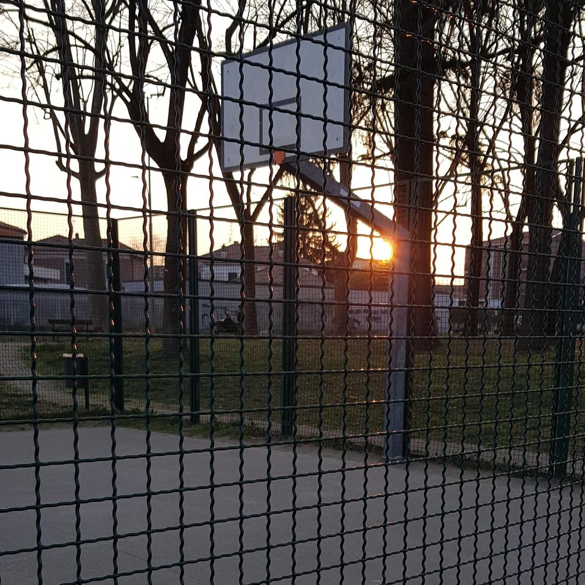<br><a href="mailto:info@ecologiaacustica.org;satorcollettivonoise@gmail.com?subject=PAESAGGIO SONORO --- [segnalazione] --- audio: Parco Alpini"><i><br>Facci sapere cosa ne pensi di questo audio!</a><audio id="audio_MA_BASKET_PARCO_ALPINI" loop> <source src="dati/MA_BASKET_PARCO_ALPINI/basket parco degli alpini-converted.mp3" type="audio/mpeg"> </audio></div>`)[0];
            popup_c638a60901ce43b8a27c5a4917adcb6e.setContent(html_9652102b2c7849d98bc78eae4efd77e9);


        marker_88f1816a32d54bbd976fe798cbef3340.bindPopup(popup_c638a60901ce43b8a27c5a4917adcb6e)
marker_88f1816a32d54bbd976fe798cbef3340.on('click', function (e) {this.openPopup(); document.getElementById('audio_MA_BASKET_PARCO_ALPINI').play();});
        ;


            var marker_1397ccb222fc4549b6d2b6a7f5aa1f6b = L.marker(
                [45.308311, 8.836347],
                {}
            );


        var custom_icon_ba6b29d9d87a411e8d49984e65924066 = L.icon({"iconSize": [30, 30], "iconUrl": "https://emojipedia-us.s3.dualstack.us-west-1.amazonaws.com/thumbs/160/microsoft/74/gear_2699.png"});
        marker_1397ccb222fc4549b6d2b6a7f5aa1f6b.setIcon(custom_icon_ba6b29d9d87a411e8d49984e65924066);


        var popup_58e85b35f8f04a47b0f6da778cd3d6b5 = L.popup({"maxWidth": "270"});


            var html_6a2406809129433598adc434e804c918 = $(`<div id="html_6a2406809129433598adc434e804c918" style="width: 100.0%; height: 100.0%;"><h1 style = "font-size: 30px;"><b>Falegnameria</b></h1>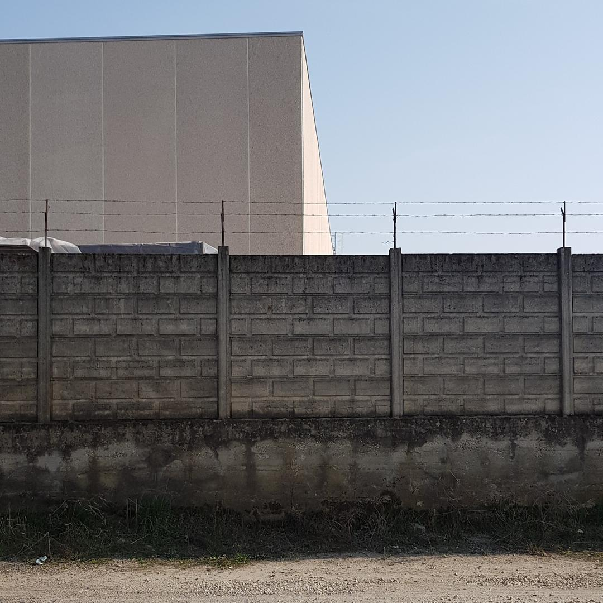<br><a href="mailto:info@ecologiaacustica.org;satorcollettivonoise@gmail.com?subject=PAESAGGIO SONORO --- [segnalazione] --- audio: Falegnameria"><i><br>Facci sapere cosa ne pensi di questo audio!</a><audio id="audio_MA_FALEGNAMERIA" loop> <source src="dati/MA_FALEGNAMERIA/45.308311, 8.836347 falegnameria-converted.mp3" type="audio/mpeg"> </audio></div>`)[0];
            popup_58e85b35f8f04a47b0f6da778cd3d6b5.setContent(html_6a2406809129433598adc434e804c918);


        marker_1397ccb222fc4549b6d2b6a7f5aa1f6b.bindPopup(popup_58e85b35f8f04a47b0f6da778cd3d6b5)
marker_1397ccb222fc4549b6d2b6a7f5aa1f6b.on('click', function (e) {this.openPopup(); document.getElementById('audio_MA_FALEGNAMERIA').play();});
        ;


            var marker_aebd4c1615d54c7b9cae0b4776085c91 = L.marker(
                [45.322436, 8.872446],
                {}
            );


        var custom_icon_f891381a79f147939f2b647f6821ad8b = L.icon({"iconSize": [30, 30], "iconUrl": "https://emojipedia-us.s3.dualstack.us-west-1.amazonaws.com/thumbs/160/microsoft/74/water-wave_1f30a.png"});
        marker_aebd4c1615d54c7b9cae0b4776085c91.setIcon(custom_icon_f891381a79f147939f2b647f6821ad8b);


        var popup_feab70eb8f824424a689bf3b254541ba = L.popup({"maxWidth": "270"});


            var html_748ae310d86b4184b3cba08d6231dffd = $(`<div id="html_748ae310d86b4184b3cba08d6231dffd" style="width: 100.0%; height: 100.0%;"><h1 style = "font-size: 30px;"><b>Fontanella</b></h1>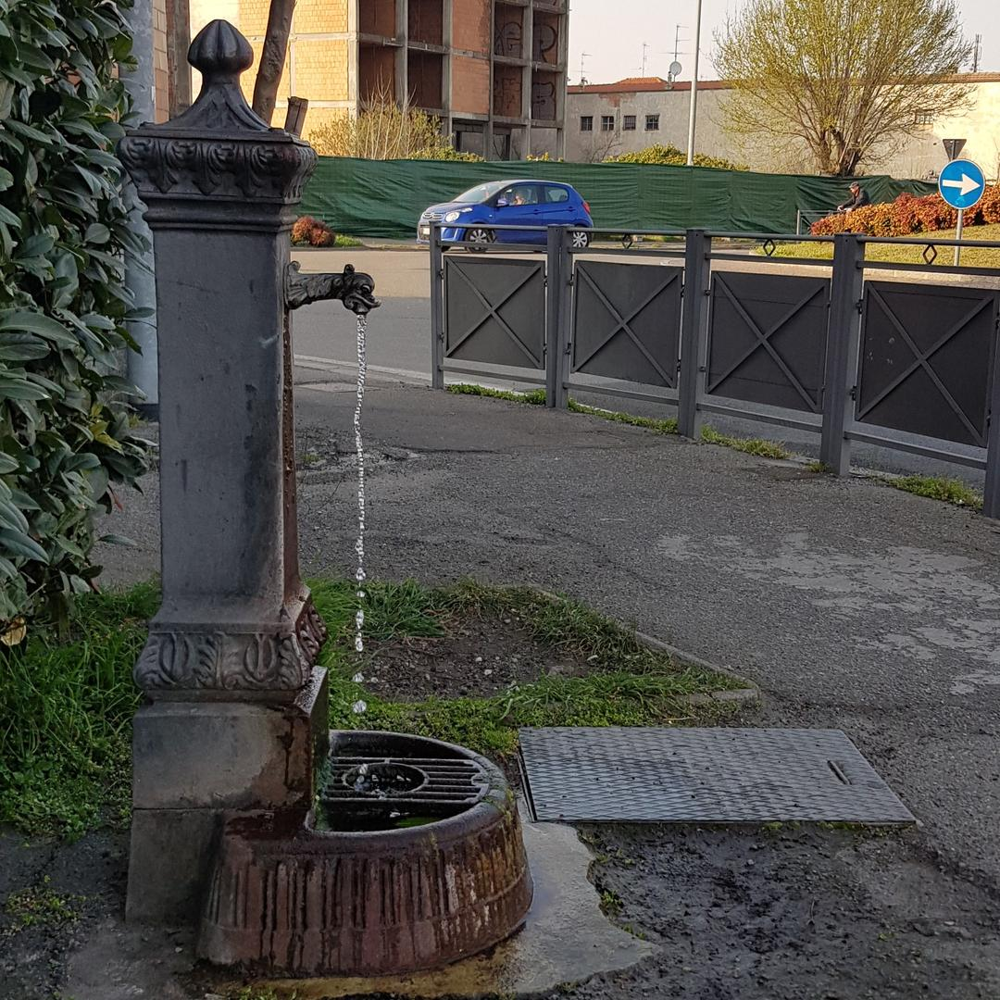<br><a href="mailto:info@ecologiaacustica.org;satorcollettivonoise@gmail.com?subject=PAESAGGIO SONORO --- [segnalazione] --- audio: Fontanella"><i><br>Facci sapere cosa ne pensi di questo audio!</a><audio id="audio_MA_FONTANELLA_CSO_MILANO" loop> <source src="dati/MA_FONTANELLA_CSO_MILANO/45.322436, 8.872446 fontanella c.so milano-converted.mp3" type="audio/mpeg"> </audio></div>`)[0];
            popup_feab70eb8f824424a689bf3b254541ba.setContent(html_748ae310d86b4184b3cba08d6231dffd);


        marker_aebd4c1615d54c7b9cae0b4776085c91.bindPopup(popup_feab70eb8f824424a689bf3b254541ba)
marker_aebd4c1615d54c7b9cae0b4776085c91.on('click', function (e) {this.openPopup(); document.getElementById('audio_MA_FONTANELLA_CSO_MILANO').play();});
        ;


            var marker_2dd4e7586aea44eda06ac4c9dbef05c2 = L.marker(
                [45.305254, 8.847423],
                {}
            );


        var custom_icon_44d0def0efb34229b49dba20454f452a = L.icon({"iconSize": [30, 30], "iconUrl": "https://emojipedia-us.s3.dualstack.us-west-1.amazonaws.com/thumbs/160/microsoft/209/people-holding-hands_1f9d1-200d-1f91d-200d-1f9d1.png"});
        marker_2dd4e7586aea44eda06ac4c9dbef05c2.setIcon(custom_icon_44d0def0efb34229b49dba20454f452a);


        var popup_97ce6647024f4eda94de6afd155d9dbb = L.popup({"maxWidth": "270"});


            var html_ddc6179ab750488caf115769eb15e9af = $(`<div id="html_ddc6179ab750488caf115769eb15e9af" style="width: 100.0%; height: 100.0%;"><h1 style = "font-size: 30px;"><b>Partita al Bramante</b></h1>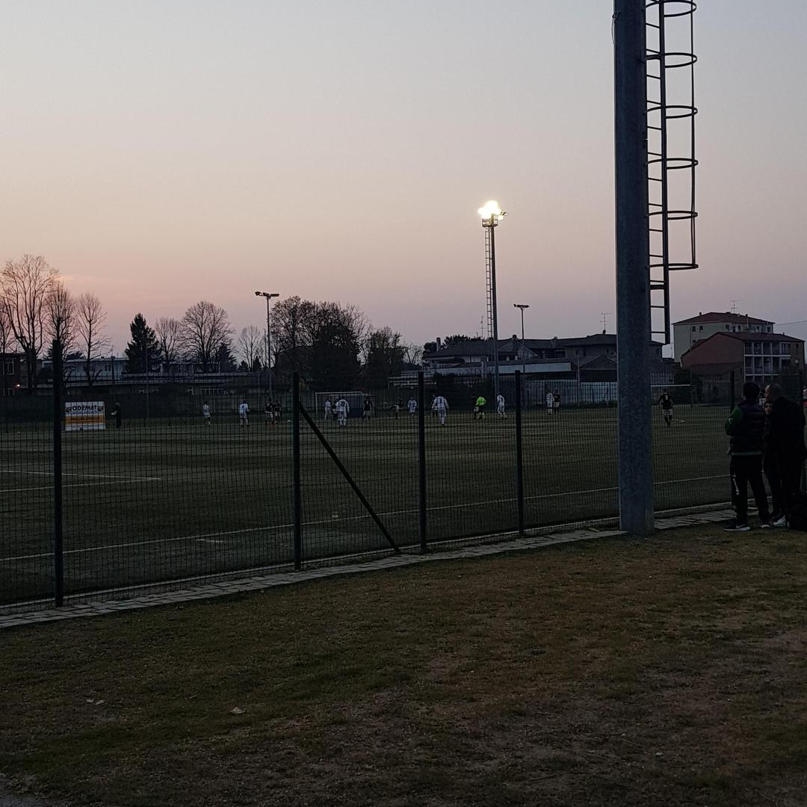<br><a href="mailto:info@ecologiaacustica.org;satorcollettivonoise@gmail.com?subject=PAESAGGIO SONORO --- [segnalazione] --- audio: Partita al Bramante"><i><br>Facci sapere cosa ne pensi di questo audio!</a><audio id="audio_MA_PARTITA_BRAMANTE" loop> <source src="dati/MA_PARTITA_BRAMANTE/partita bramante-converted.mp3" type="audio/mpeg"> </audio></div>`)[0];
            popup_97ce6647024f4eda94de6afd155d9dbb.setContent(html_ddc6179ab750488caf115769eb15e9af);


        marker_2dd4e7586aea44eda06ac4c9dbef05c2.bindPopup(popup_97ce6647024f4eda94de6afd155d9dbb)
marker_2dd4e7586aea44eda06ac4c9dbef05c2.on('click', function (e) {this.openPopup(); document.getElementById('audio_MA_PARTITA_BRAMANTE').play();});
        ;


            var marker_51e6422a98f540369787bf7a6d9bff76 = L.marker(
                [45.306755, 8.860154],
                {}
            );


        var custom_icon_6030d1e524f64552a702e3bc73de11f7 = L.icon({"iconSize": [30, 30], "iconUrl": "https://emojipedia-us.s3.dualstack.us-west-1.amazonaws.com/thumbs/160/microsoft/209/people-holding-hands_1f9d1-200d-1f91d-200d-1f9d1.png"});
        marker_51e6422a98f540369787bf7a6d9bff76.setIcon(custom_icon_6030d1e524f64552a702e3bc73de11f7);


        var popup_b3e7cade11014ceba89eb8a83783cc37 = L.popup({"maxWidth": "270"});


            var html_912c308428394888a8e30a0e754d1155 = $(`<div id="html_912c308428394888a8e30a0e754d1155" style="width: 100.0%; height: 100.0%;"><h1 style = "font-size: 30px;"><b>Skate Park</b></h1>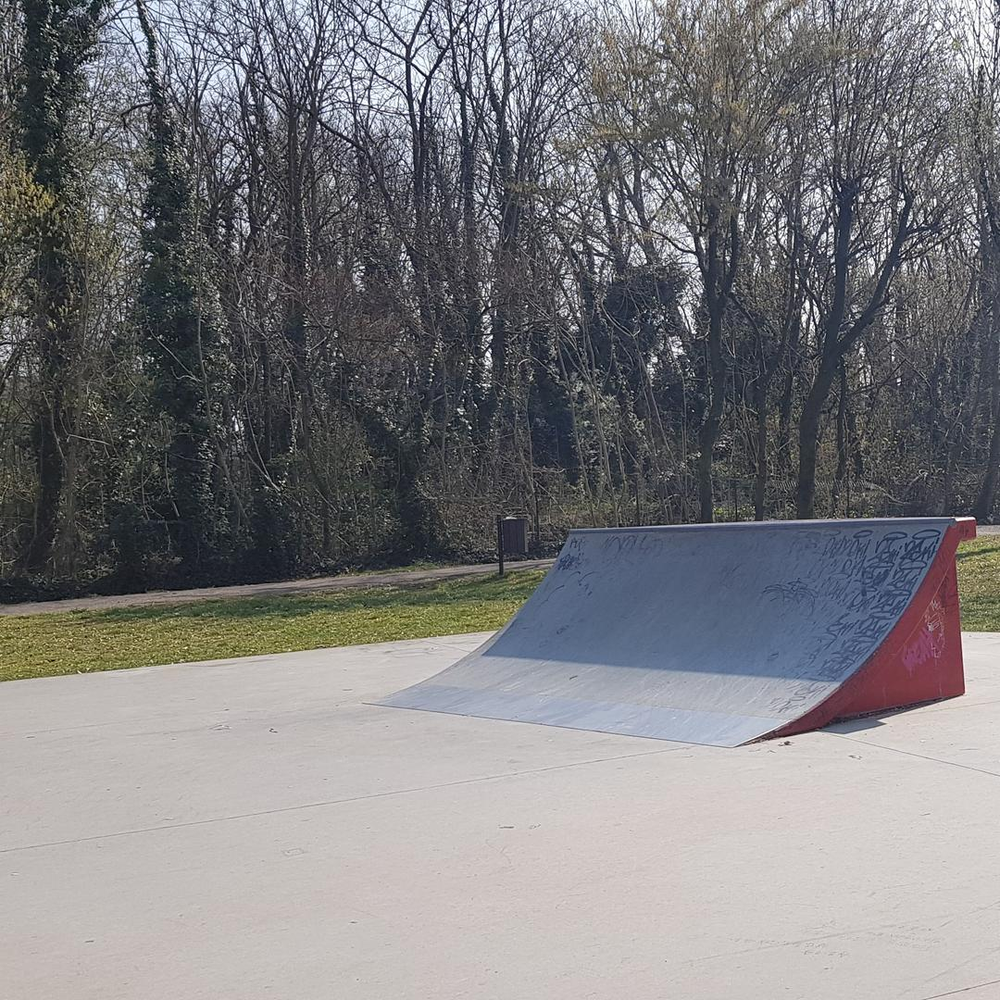<br><a href="mailto:info@ecologiaacustica.org;satorcollettivonoise@gmail.com?subject=PAESAGGIO SONORO --- [segnalazione] --- audio: Skate Park"><i><br>Facci sapere cosa ne pensi di questo audio!</a><audio id="audio_MA_SKATEPARK" loop> <source src="dati/MA_SKATEPARK/skate park-converted.mp3" type="audio/mpeg"> </audio></div>`)[0];
            popup_b3e7cade11014ceba89eb8a83783cc37.setContent(html_912c308428394888a8e30a0e754d1155);


        marker_51e6422a98f540369787bf7a6d9bff76.bindPopup(popup_b3e7cade11014ceba89eb8a83783cc37)
marker_51e6422a98f540369787bf7a6d9bff76.on('click', function (e) {this.openPopup(); document.getElementById('audio_MA_SKATEPARK').play();});
        ;


            var marker_6285dcd9e2ef46aaa0d240f553f924fe = L.marker(
                [45.32377, 8.850681],
                {}
            );


        var custom_icon_827adb7e053948cbab329889156ee302 = L.icon({"iconSize": [30, 30], "iconUrl": "https://emojipedia-us.s3.dualstack.us-west-1.amazonaws.com/thumbs/160/microsoft/74/cloud_2601.png"});
        marker_6285dcd9e2ef46aaa0d240f553f924fe.setIcon(custom_icon_827adb7e053948cbab329889156ee302);


        var popup_d86ab6e980a64c588d0dd418f9a74967 = L.popup({"maxWidth": "270"});


            var html_555c1ca6220548b3949a89394f3ddb4b = $(`<div id="html_555c1ca6220548b3949a89394f3ddb4b" style="width: 100.0%; height: 100.0%;"><h1 style = "font-size: 30px;"><b>Stadio</b></h1><br><a href="mailto:info@ecologiaacustica.org;satorcollettivonoise@gmail.com?subject=PAESAGGIO SONORO --- [segnalazione] --- audio: Stadio"><i><br>Facci sapere cosa ne pensi di questo audio!</a><audio id="audio_MA_STADIO" loop> <source src="dati/MA_STADIO/stadio-converted.mp3" type="audio/mpeg"> </audio></div>`)[0];
            popup_d86ab6e980a64c588d0dd418f9a74967.setContent(html_555c1ca6220548b3949a89394f3ddb4b);


        marker_6285dcd9e2ef46aaa0d240f553f924fe.bindPopup(popup_d86ab6e980a64c588d0dd418f9a74967)
marker_6285dcd9e2ef46aaa0d240f553f924fe.on('click', function (e) {this.openPopup(); document.getElementById('audio_MA_STADIO').play();});
        ;


            var marker_9156fc608ff54e859e24e44a95d3c56a = L.marker(
                [45.307694, 8.851649],
                {}
            );


        var custom_icon_a804acd938824946b237c5c3eba5adb6 = L.icon({"iconSize": [30, 30], "iconUrl": "https://emojipedia-us.s3.dualstack.us-west-1.amazonaws.com/thumbs/160/microsoft/74/automobile_1f697.png"});
        marker_9156fc608ff54e859e24e44a95d3c56a.setIcon(custom_icon_a804acd938824946b237c5c3eba5adb6);


        var popup_cdada3b61635468bbc0ed003db67ee74 = L.popup({"maxWidth": "270"});


            var html_cd8f42353864450c8340033a93ca6699 = $(`<div id="html_cd8f42353864450c8340033a93ca6699" style="width: 100.0%; height: 100.0%;"><h1 style = "font-size: 30px;"><b>Tombino</b></h1><br><a href="mailto:info@ecologiaacustica.org;satorcollettivonoise@gmail.com?subject=PAESAGGIO SONORO --- [segnalazione] --- audio: Tombino"><i><br>Facci sapere cosa ne pensi di questo audio!</a><audio id="audio_MA_TOMBINO" loop> <source src="dati/MA_TOMBINO/45.307694, 8.851649 tombino con cane-converted.mp3" type="audio/mpeg"> </audio></div>`)[0];
            popup_cdada3b61635468bbc0ed003db67ee74.setContent(html_cd8f42353864450c8340033a93ca6699);


        marker_9156fc608ff54e859e24e44a95d3c56a.bindPopup(popup_cdada3b61635468bbc0ed003db67ee74)
marker_9156fc608ff54e859e24e44a95d3c56a.on('click', function (e) {this.openPopup(); document.getElementById('audio_MA_TOMBINO').play();});
        ;


            var marker_bef83daa943c44b79f7c91bbd3c8a651 = L.marker(
                [45.325238, 8.839287],
                {}
            );


        var custom_icon_b07cbc87e9b84646a55f72d1cbe1f049 = L.icon({"iconSize": [30, 30], "iconUrl": "https://emojipedia-us.s3.dualstack.us-west-1.amazonaws.com/thumbs/160/microsoft/74/dog_1f415.png"});
        marker_bef83daa943c44b79f7c91bbd3c8a651.setIcon(custom_icon_b07cbc87e9b84646a55f72d1cbe1f049);


        var popup_5ff34dfb591c4d3ca280cacb0fbf9ee9 = L.popup({"maxWidth": "270"});


            var html_3491939d7c1041b1b267a59b5dbd1c07 = $(`<div id="html_3491939d7c1041b1b267a59b5dbd1c07" style="width: 100.0%; height: 100.0%;"><h1 style = "font-size: 30px;"><b>Cane a Battù</b></h1><br><a href="mailto:info@ecologiaacustica.org;satorcollettivonoise@gmail.com?subject=PAESAGGIO SONORO --- [segnalazione] --- audio: Cane a Battù"><i><br>Facci sapere cosa ne pensi di questo audio!</a><audio id="audio_ZZ_CANE_BATTU" loop> <source src="dati/ZZ_CANE_BATTU/CANE BATTù-converted.mp3" type="audio/mpeg"> </audio></div>`)[0];
            popup_5ff34dfb591c4d3ca280cacb0fbf9ee9.setContent(html_3491939d7c1041b1b267a59b5dbd1c07);


        marker_bef83daa943c44b79f7c91bbd3c8a651.bindPopup(popup_5ff34dfb591c4d3ca280cacb0fbf9ee9)
marker_bef83daa943c44b79f7c91bbd3c8a651.on('click', function (e) {this.openPopup(); document.getElementById('audio_ZZ_CANE_BATTU').play();});
        ;


            var marker_54842cf9a7534f74b6731cf0875c848b = L.marker(
                [45.347507, 8.849651],
                {}
            );


        var custom_icon_591009f7298e43a1a8b2f0c8ad04ea7c = L.icon({"iconSize": [30, 30], "iconUrl": "https://emojipedia-us.s3.dualstack.us-west-1.amazonaws.com/thumbs/60/microsoft/74/chicken_1f414.png"});
        marker_54842cf9a7534f74b6731cf0875c848b.setIcon(custom_icon_591009f7298e43a1a8b2f0c8ad04ea7c);


        var popup_59661d81c2824d8199cfb29f17f01d79 = L.popup({"maxWidth": "270"});


            var html_f3ac1f99fbdd4c1a88d2b0911534e809 = $(`<div id="html_f3ac1f99fbdd4c1a88d2b0911534e809" style="width: 100.0%; height: 100.0%;"><h1 style = "font-size: 30px;"><b>Gallo alla Buccella</b></h1><br><a href="mailto:info@ecologiaacustica.org;satorcollettivonoise@gmail.com?subject=PAESAGGIO SONORO --- [segnalazione] --- audio: Gallo alla Buccella"><i><br>Facci sapere cosa ne pensi di questo audio!</a><audio id="audio_ZZ_GALLO_BUCCELLA" loop> <source src="dati/ZZ_GALLO_BUCCELLA/GALLO IN BUCCELLA-converted.mp3" type="audio/mpeg"> </audio></div>`)[0];
            popup_59661d81c2824d8199cfb29f17f01d79.setContent(html_f3ac1f99fbdd4c1a88d2b0911534e809);


        marker_54842cf9a7534f74b6731cf0875c848b.bindPopup(popup_59661d81c2824d8199cfb29f17f01d79)
marker_54842cf9a7534f74b6731cf0875c848b.on('click', function (e) {this.openPopup(); document.getElementById('audio_ZZ_GALLO_BUCCELLA').play();});
        ;


            var marker_d26ba3c3b3ad43a1b6f5af63615f1e64 = L.marker(
                [45.3178845, 8.846494],
                {}
            );


        var custom_icon_dbb8f4f8bf2b427aa3a8011d53e11296 = L.icon({"iconSize": [30, 30], "iconUrl": "https://emojipedia-us.s3.dualstack.us-west-1.amazonaws.com/thumbs/160/microsoft/74/high-voltage-sign_26a1.png"});
        marker_d26ba3c3b3ad43a1b6f5af63615f1e64.setIcon(custom_icon_dbb8f4f8bf2b427aa3a8011d53e11296);


        var popup_e037e5dc347e4a66b86ef87a3bc31d9c = L.popup({"maxWidth": "270"});


            var html_1844195de12c40be84e7db653455ddc5 = $(`<div id="html_1844195de12c40be84e7db653455ddc5" style="width: 100.0%; height: 100.0%;"><h1 style = "font-size: 30px;"><b>Citofono Geiger</b></h1><br><a href="mailto:info@ecologiaacustica.org;satorcollettivonoise@gmail.com?subject=PAESAGGIO SONORO --- [segnalazione] --- audio: Citofono Geiger"><i><br>Facci sapere cosa ne pensi di questo audio!</a><audio id="audio_ZZZ_MB_CITOFONO_ROTTO" loop> <source src="dati/ZZZ_MB_CITOFONO_ROTTO/cito_rotto.mp3" type="audio/mpeg"> </audio></div>`)[0];
            popup_e037e5dc347e4a66b86ef87a3bc31d9c.setContent(html_1844195de12c40be84e7db653455ddc5);


        marker_d26ba3c3b3ad43a1b6f5af63615f1e64.bindPopup(popup_e037e5dc347e4a66b86ef87a3bc31d9c)
marker_d26ba3c3b3ad43a1b6f5af63615f1e64.on('click', function (e) {this.openPopup(); document.getElementById('audio_ZZZ_MB_CITOFONO_ROTTO').play();});
        ;


</script>
<script>
		var Acqua = L.layerGroup([marker_694493f432e84ca2bd9b4b8f38d9d68c, marker_f5c56e829725409e814577ebb2b42bdc, marker_e3d620762c614e6ca1615a09dc7cf4fc, marker_9a984e96665140dab23bdda71fc82914, marker_348c67253344459aa24650e7df335183, marker_2d1785125cd347eabf0072b2310d3c9e, marker_249c465501ea444bbd3e817882756bbd, marker_f2491580d271450590d4335884acbc86, marker_7561a3516c4e43499a01e4c44b0ea28e, marker_a00fe721cab049af887cfb9f2fa2c7ca, marker_10472a9ff07a4c148a5d6c8ec9572dfb, marker_45aa76aac6fa47f58a71339ea29ba29b, marker_f97a4a23c01142478562f45b4cee4c5a, marker_f831e2f733e2461a88f756843a929953, marker_5bccba80b0fe429790e0901c202e6b4e, marker_86fd359b88744a08842492617dd3cbed]);
		var Attivita = L.layerGroup([marker_8914da100ea343afa2e1544a3847ad92, marker_808b1894e68e4a09a8989933367637ef, marker_8bd4ac00070644a9b3affea0107d69e6, marker_27779f16ff5149709182b7670b53a050, marker_543618a2028c4a51ac5bfd53bb990509, marker_7bffce84b98e4bf892d2e0e8640c2034, marker_de90c821664d4540a8646b275a8d1c35, marker_5241feefd46847cf81cccf8d785202f7, marker_70a6b9074cb54268b4a559870ceabbeb, marker_0d1fa9f430cf4d5eb2217c789f23290d, marker_49b6dff830c240f4bb6a136f60094001, marker_9bfb7392060449108ef7e28c22d53d34]);
		var Campane = L.layerGroup([marker_59e171c030674819b2443b2cee281e98, marker_30e220421e0d417e9a802e24685c5dca, marker_864ac98541074c7b9196e3acfef4049b, marker_626d3db9397346d193c388154ed1eeac, marker_408ec913627c48ba87524f48a4d84d84, marker_eefc8991a3a64ea6a294e2b9f743e29c, marker_97c15deaa23b4b65b4b56e32a71a4842, marker_b7e978c77a4a4e33a0652c82c678b26a, marker_404185e9029c4269b8a91042342ad693, marker_49da5de9b09b4cdab819f2950a1e2a15, marker_a3d97a10a76143da94af9b78f54fb8e1, marker_943fdb4481884baca8027fdd90fd43bb]);
		var Animali = L.layerGroup([marker_7795da0e243441d2a7e62b289eac0aaf, marker_fc98cf84525646ebb3f4059b9b9583eb, marker_50d6e8db8f994b69bdaff1d31bf77af9, marker_97ffc775da63449cb22f9970e3536bcd, marker_93538bfbb2db4b3eb2aa70e7cdb92189, marker_d84c3fb754554a8d95399be981c8a79d, marker_28d1a1584a9141839c46edfade9bedbc, marker_0f98e08c48ca414690f0c415b5c82930, marker_6df1c9d16ab6430ebaa01676e763dbf9, marker_6cb07e35f2664168ad39ffebf532488c, marker_6d0e681f65dd47afbd5ed7dfe679c86e, marker_88f1816a32d54bbd976fe798cbef3340, marker_54842cf9a7534f74b6731cf0875c848b]);
		var Parchi = L.layerGroup([marker_d9598e6606504f7192c99c739582b483, marker_441692dad9774ae79cec671a010db6ce, marker_41931b579f434710af22e799a7fb76df, marker_07bdc15479444e4b8d77beb9e5b973c7, marker_9df0b756fd5b4074a705fdb1a8246dc5, marker_8498083a40284d68b014e0f1d1fb5aab, marker_defedd57921f4d4f9f5be236d33f80e8, marker_0caefa01260646fa907a10bcd55f030b, marker_74655cc8a78344c09c09924183e639bd, marker_8189833c68984b39bb2096fd9014f447, marker_eecfc9c6388d4f8eacdb044ef8ba8525, marker_d47f7fb99ebe44f7b8c868266550e60b, marker_3e384dfd361e4e0db520ed16f3a25248, marker_5bce04a5114f4cdcb979d10866f2be85, marker_ed2b40e0f2ab41f089595a17de2a6641, marker_d26ba3c3b3ad43a1b6f5af63615f1e64]);
		var Tecnofonie = L.layerGroup([marker_ee112451e4b5407db0e1114e0cd656ad, marker_06164ff9e6314695969d18fe74f07176, marker_6fde980a863041d3aa0424e887b7273a, marker_dc935812bbcb4d1d8eca35b35e8fbb0d, marker_6c936c0327174c4b8cc115c92f0114b8, marker_568c531c337c4d20b8a063bcfaee5594, marker_70fc99f99aab4f9fac2633751313af42, marker_a323b6daf3624b88bdd7dfc413e3fd31, marker_75786c6c33d94891af910ed0f0b31807, marker_b258a6b177e545c896f003f7866f6f3d, marker_7df7f2d669484400a335ec9e84434277, marker_6171d4fd1ab24e5a82a587cea0e827ad, marker_953005cebad841138c2446a6389c3db7, marker_fc982785235e4d0f95175e4d0ff7bed4]);
		var Trasporti = L.layerGroup([marker_22e7d5f69949404da8dac1de8adac1c6, marker_9bc3dc4f2ebb44a7a80f8822ba18e35f, marker_2c6479ac6a9d442aa7a0ad50bf576484, marker_515e93ce492945648d81172743ebacf2, marker_1fb8136c73b54afc88de4a897c2ff59a, marker_467c1f433c29467daf4d77da74decaab, marker_cdf1d69c825e4c32a29813323dbf2620, marker_3cd6288cfd824bd8a9b613ec2b410849, marker_cc737f302a4743849393c6366284d5fe, marker_a0f1fce711b741dc89de6c570dcd515d, marker_1397ccb222fc4549b6d2b6a7f5aa1f6b, marker_aebd4c1615d54c7b9cae0b4776085c91, marker_9156fc608ff54e859e24e44a95d3c56a, marker_bef83daa943c44b79f7c91bbd3c8a651]);
		var Paesaggio = L.layerGroup([marker_c8ef761be8424ec2b96f4843d6f0e030, marker_d9a398e7c2384f979da1488087a95f0f, marker_32a9d9c853c24439b848f3f119c9b949, marker_9766574705d249d2832ab7782526a726, marker_daece5a94f0d47a5aa30542f4a4406ff, marker_d8b7338d8fe44e468b378cda61b56c6c, marker_123d0a80ea5246199d4a5cf8fd2e0d19, marker_341d0397d4f841318779b538ec882c99, marker_11b8406274754e168bf876f2d1907bcf, marker_80f25608abb7470288b47f25c868e715, marker_f578960d4edd4fffb26faa5fa52f53fc, marker_2efaa233fb764c2db19911c1334c80f4, marker_978ac10f869b4ca5a36ea4bb84c0e69c, marker_f40f5b8ed68d4734adceec3347de9ce9, marker_abee3b7630a946e4970f7bbeba6fbbac, marker_85a22cf4a6064dfe84234bc9e3b78af6, marker_874000b10c1d43779b46b022f9a913b8, marker_7f17b8752bf742f2be97d471093064fe, marker_0b88af690e1c4580a1082c58b5bf11ff, marker_b6b32e7f87c54d8183ed26f57c6eab64, marker_8dd2a197e33e4d39a6ecc5ab37a5cb93, marker_ccee5863e2ee4e30ac8cd3b5a7399f68, marker_21ca85d51a7b41c6a9bfbfb870d4d184, marker_1da84abf540e4357a0ffdefe39e29338, marker_ea86a507fbe04ab5872990a43ce430b2, marker_1fc0122ce25244ab9471e273e09a0117, marker_6d1e239bc4a84d4889a432f2f52a395a, marker_e06c261c7574420c8be9c2909fc16b0c, marker_bd9bebb788a9472fb28e078482f786bd, marker_2dd4e7586aea44eda06ac4c9dbef05c2, marker_51e6422a98f540369787bf7a6d9bff76, marker_6285dcd9e2ef46aaa0d240f553f924fe]);
		var overlayGroups = {
			"Acqua": Acqua,
			"Attivita": Attivita,
			"Campane": Campane,
			"Animali": Animali,
			"Parchi": Parchi,
			"Tecnofonie": Tecnofonie,
			"Trasporti": Trasporti,
			"Paesaggio": Paesaggio,
		};
</script><script>
            var map_859f6924e61b41488696765426707ad3 = L.map(
                "map_859f6924e61b41488696765426707ad3",
                {
                    center: [45.317245, 8.858102],
                    crs: L.CRS.EPSG3857,
                    maxBounds: [[45.151245, 8.692102], [45.483245, 9.024102000000001]],
                    zoom: 12,
                    zoomControl: true,
                    preferCanvas: false,
					layers:[Acqua,Attivita,Campane,Animali,Parchi,Tecnofonie,Trasporti,Paesaggio]
                }
            );


            var tile_layer_10f00ddf2c594ac7b777f7ed622fac7a = L.tileLayer(
                "https://tile.thunderforest.com/landscape/{z}/{x}/{y}.png?apikey=3dc24c77246845e5b1c941baf227ba56",
                {"attribution": "\u0026copy; \u003ca href=\"http://www.thunderforest.com/\"\u003eThunderforest\u003c/a\u003e, \u0026copy; \u003ca href=\"https://www.openstreetmap.org/copyright\"\u003eOpenStreetMap\u003c/a\u003e contributors | map data by \u003ca href=\"https://www.facebook.com/SatorNoise\"\u003eS\u0026#47\u0026#92TOR\u003c/a\u003e", "detectRetina": false, "maxNativeZoom": 20, "maxZoom": 20, "minZoom": 8, "noWrap": false, "opacity": 1, "subdomains": "abc", "tms": false}
            ).addTo(map_859f6924e61b41488696765426707ad3);

</script><script>
var tile_layer_2 = L.tileLayer("http://{s}.google.com/vt/lyrs=s&x={x}&y={y}&z={z}",{"attribution": "map data by \u003ca href=\"https://www.facebook.com/SatorNoise\"\u003eS\u0026#47\u0026#92TOR\u003c/a\u003e",maxZoom: 20,minZoom: 8,subdomains:['mt0', 'mt1', 'mt2', 'mt3']});
</script><script>
var baselayers = {"Satellite" : tile_layer_2, "Mappa" :tile_layer_10f00ddf2c594ac7b777f7ed622fac7a}
</script><script>
layerControl = L.control.layers(baselayers, overlayGroups, {position: 'topleft'} ,{collapsed: true}).addTo(map_859f6924e61b41488696765426707ad3);
</script>
<script>
            // qui è tutto nuovo

            var attivo = "NO"

            var markerGroup = L.layerGroup().addTo(map_859f6924e61b41488696765426707ad3);
            map_859f6924e61b41488696765426707ad3.on('click' , function(e) {
                if (attivo === "YES"){
                markerGroup.clearLayers();
                var poplocation = e.latlng;
                
                var marker = L.marker([e.latlng.lat , e.latlng.lng]).addTo(markerGroup);
                var coordinates = [marker.getLatLng().lat , marker.getLatLng().lng];
                
                //var mailcontent = "mailto:info@ecologiaacustica.org;satorcollettivonoise@gmail.com?subject=PAESAGGIO%20SONORO%20&body=[segnalazione]%20---%20X:%20"+coordinates[0]+"%20Y:%20"+coordinates[1];
                var mailcontent = "mailto:info@ecologiaacustica.org;satorcollettivonoise@gmail.com?subject=PAESAGGIO%20SONORO%20---%20[segnalazione]%20---%20X:%20"+coordinates[0]+"%20Y:%20"+coordinates[1];

                marker.bindPopup("<p>Lat: " + e.latlng.lat + "</p><p>Lon: " + e.latlng.lng + "</p><a href=" + mailcontent + "><i>Segnalaci questo posto!</a>").openOn(map_859f6924e61b41488696765426707ad3);

                marker.addTo(markerGroup);

            }});
   const locButton = L.easyButton({
		states: [{
            stateName: 'inattivo',
            icon:      '',
            title:     'Attiva la funzione per inviare una segnalazione cliccando un punto sulla mappa', 
            onClick: function(btn, map_859f6924e61b41488696765426707ad3) {
                attivo = "YES";
                btn.state('attivo');
                
                document.getElementById('map_859f6924e61b41488696765426707ad3').style.cursor = 'crosshair'
            }
		    }, {
            stateName: 'attivo',
            icon:      '',
            title:     'Clicca per disattivare',
            onClick: function(btn, map_859f6924e61b41488696765426707ad3) {
                markerGroup.clearLayers();
                attivo = "NO";
                btn.state('inattivo');
                
                document.getElementById('map_859f6924e61b41488696765426707ad3').style.cursor = ''
            }
		}]
	}).addTo(map_859f6924e61b41488696765426707ad3);
   locButton.button.style.padding = '0px';
</script>

<script>
L.easyButton('', function(){window.open('info.html' , '_blank')}).addTo(map_859f6924e61b41488696765426707ad3).button.style.padding='0px';
</script>
